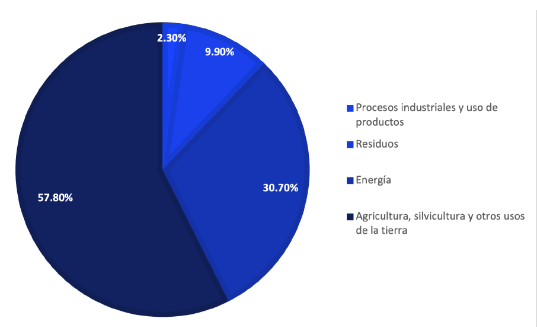
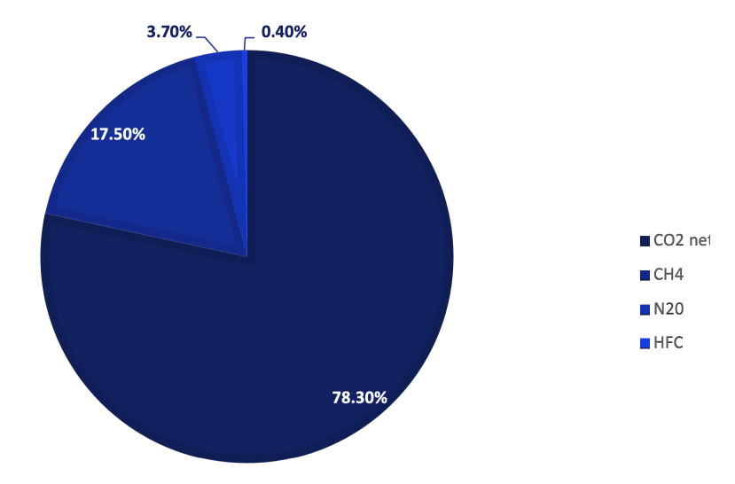
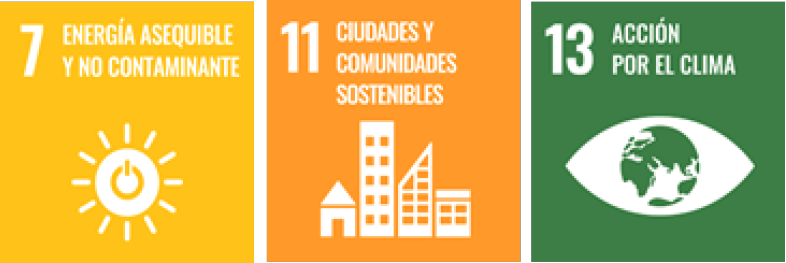
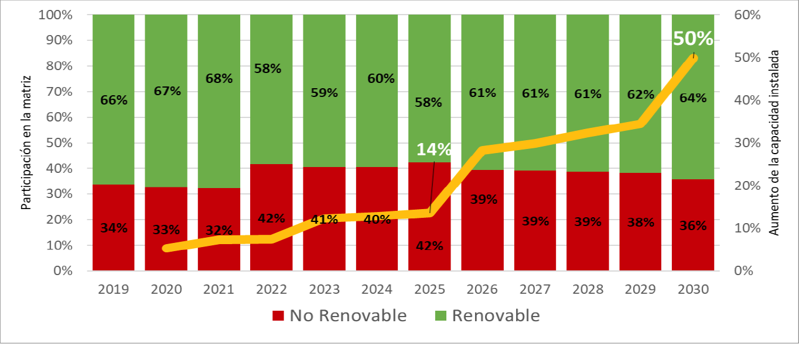
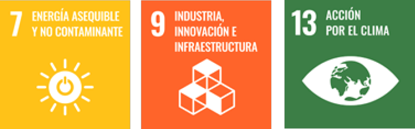
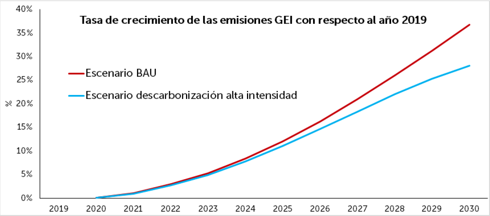
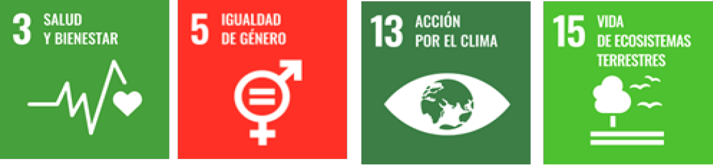
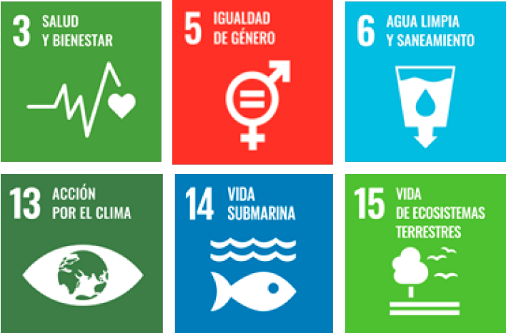
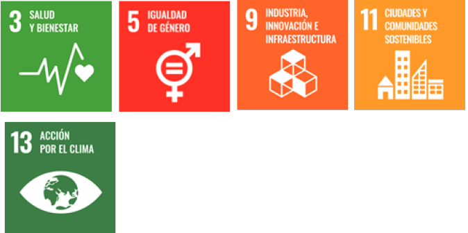
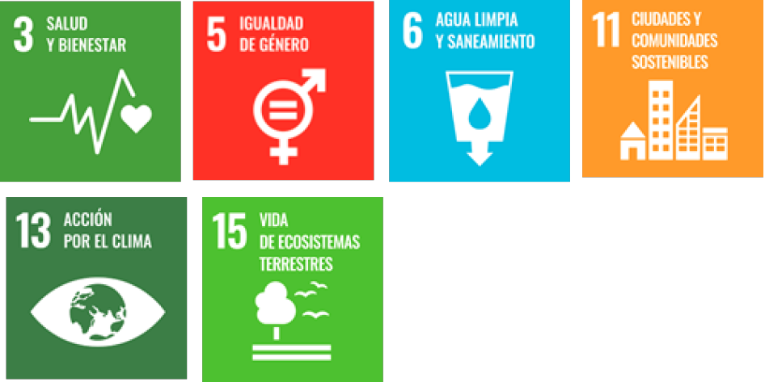

El Salvador, 2021
Diciembre 2021
Nayib Armando Bukele Ortez
Presidente de la República de El Salvador
Félix Augusto Antonio Ulloa Garay
Vicepresidente de la República de El Salvador
Fernando Andrés López Larreynaga
Ministro de Medio Ambiente y Recursos Naturales
Instituciones participantes del proceso
Administración Nacional de Acueductos y Alcantarillados, Banco Central de Reserva de El Salvador, Banco de Desarrollo de El Salvador, Comisión Ejecutiva Hidroeléctrica del Río Lempa, Consejo Nacional de Energía, Fondo Ambiental de El Salvador, Fondo de la Iniciativa para las Américas, Ministerio de Agricultura y Ganadería, Ministerio de Obras Públicas y de Transporte, Ministerio de Salud, Ministerio de Vivienda, Ministerio de Medio Ambiente y Recursos Naturales Ministerio de Gobernación y Desarrollo Territorial, Ministerio de Hacienda, Ministerio de Economía Ministerio de Trabajo y Previsión Social, Oficina de Planificación del Área Metropolitana de San Salvador, Superintendencia General de Electricidad y Telecomunicaciones, Secretaría de Comercio e Inversión de Presidencia de la República, Viceministerio de Transporte.
Para la elaboración de esta publicación se contó con el apoyo técnico y financiero del Programa de Naciones Unidas para el Desarrollo (PNUD) a través de las iniciativas de NDC Support Programme y Climate Promise.
Diseño y diagramación: PNUD
La información presentada ha sido validada por y pertenece al Gobierno de la República de El Salvador.
Derechos reservados. Prohibida su comercialización.
Este documento puede ser reproducido todo o en parte con fines educativos o no comerciales, reconociendo los derechos de autor.
El Estado salvadoreño es consciente y proactivo ante la gravedad y aceleración del fenómeno mundial del cambio climático, en términos de una urgencia en la mitigación de sus causas (emisiones antropogénicas de GEI) a nivel global – radicadas especialmente en las emisiones de dióxido de carbono proveniente del sector energético de las economías – y una adaptación ante sus manifestaciones, efectos a nivel nacional y local con el propósito de reducir el riesgo a los impactos del cambio y variabilidad del clima en los diferentes sectores socioeconómicos, sistemas naturales y humanos que conforman la economía, la sociedad y el ambiente de este país.
Reconociendo que las condiciones biofísicas, socioculturales, económicas y ambientales de El Salvador determinan una acumulación histórica y multifactorial de susceptibilidad; la amenaza de las manifestaciones y efectos del cambio climático y su variabilidad asociada, viene a acentuar la vulnerabilidad y la exposición ante la cual se es objeto, a nivel de ecosistemas, agroecosistemas y asentamientos humanos, como también, sobre la vida humana y todas las formas de vida.
Ante esta situación y, en atención al mandato establecido en la Ley primara y leyes secundarias del país, referido a la obligación del Estado en asegurar a los habitantes, el goce de la libertad, la salud, la cultura, el bienestar económico y la justicia social; así como, el deber del Estado de proteger los recursos naturales, la diversidad e integridad del medio ambiente para garantizar el desarrollo sostenible, se han venido implementando acciones de normativa pública, encaminadas a crear condiciones factibles para hacer frente a la gravedad del cambio climático y su variabilidad asociada.
El Salvador es parte de la Convención Marco de las Naciones Unidas sobre el Cambio Climático (CMNUCC), desde 1995, y en el marco de su objetivo último y objetivos específicos, principios, estructura, funcionamiento y estipulaciones, participó en la negociación y aprobación del Acuerdo de París, el cual, meses después, fue ratificado con base en los mecanismos de Ley nacional en consentimiento, aceptación, apoyo y contribución al objetivo de realizar todos los esfuerzos necesarios por cada una de las partes, con base en el principio de las «Responsabilidades Comunes pero Diferenciadas y Capacidades Respectivas» a la luz de las diferentes circunstancias nacionales.
En función de la urgencia detallada por el Sexto Informe de Evaluación del Panel Intergubernamental de Expertos sobre Cambio Climático, referido por el Grupo de Trabajo I sobre las Bases de las Ciencias Físicas del Cambio Climático (2021), apenas existe un estrecho margen de acción a nivel global, para poder lograr el objetivo del Acuerdo de París.
Para El Salvador es importante y mandatorio que se frene la magnitud y aceleración que el cambio climático manifiesta y proyecta de aquí a 2030 y mitad de siglo, de tal manera que los países más emisores puedan establecer compromisos de mitigación de GEI, de acuerdo a su responsabilidad y, al mismo tiempo, movilizar y transferir recursos, en términos financieros, tecnológicos y de capacidades.
Por su parte, El Salvador presentó ante la CMNUCC su Contribución Prevista y Determinada a Nivel Nacional (INDC), la cual se adoptó luego, en 2015, como su Primera Contribución Determinada a nivel Nacional (NDC). De los compromisos derivados de su Primera NDC, El Salvador ha realizado avances importantes: conformando un marco normativo y arreglos institucionales; desarrollando estudios técnicos para analizar las circunstancias nacionales, la contribución en emisiones de GEI y el riesgo climático para diferentes sectores y sistemas; analizando necesidades, oportunidades y barreras en cuanto a medios de implementación y estableciendo prioridades y objetivos de desarrollo nacional en el marco estratégico para el cambio climático para lograr una sociedad, una economía y un ambiente bajos en carbono con capacidad de adaptación y resiliencia. Además, El Salvador prepara el sistema de monitoreo, reporte y verificación de la NDC, proyectando su presentación en una adición inmediata a este documento en 2022.
También, con fundamento en el artículo 3 del Acuerdo de París, El Salvador ha realizado y está comunicando los esfuerzos progresivos y sucesivos al identificar sus prioridades, medidas, metas, necesidades y oportunidades, sobre la base de la mejora de atributos de información, claridad, comprensión y transparencia; presentando así, la Segunda Contribución Determinada a nivel Nacional del Estado Salvadoreño, ante la Convención Marco de las Nacionales Unidas sobre el Cambio Climático, en cumplimiento de sus compromisos ante el Acuerdo de París.
Este esfuerzo ha incluido un proceso de construcción con expertos y el establecimiento o la conformación de mesas sectoriales del sector gubernamental que incluirá un proceso de participación de diferentes actores entre los cuales se incluye la Academia,
Organizaciones No Gubernamentales y la empresa privada con el propósito de identificar y consolidar los planes de implementación sectoriales, para el cumplimiento de las promesas de esta NDC y asegurar acción climática idónea, efectiva y oportuna.
De acuerdo a lo establecido en la Ley de Medio Ambiente que instituye la rectoría sobre la adaptación climática, El Salvador determina sus prioridades definiendo el cambio climático como un asunto estratégico. Así, se proyecta para el quinquenio 2020-2024, la promoción de la incorporación, transversalización de la dimensión ambiental en las políticas sectoriales, asegurando la gestión estratégica del cambio climático.
Por lo cual, la gestión del cambio climático, y la NDC como parte de esta, contribuyen en la gestión integral de riesgos de desastres, la gestión ambiental y la adaptación y mitigación del cambio climático, a través del monitoreo sistemático, alerta temprana e investigación científica, proveyendo servicios de información para el Estado, en su conjunto, sectores productivos y ciudadanía, con el fin de reducir pérdidas de vidas humanas y pérdidas económicas. Además, de promover el desarrollo sostenible bajo en emisiones, reducción de la vulnerabilidad y resiliente al cambio climático.
Todo lo anterior, sobre la base de esfuerzos y recursos nacionales, además de contar con el apoyo de la cooperación internacional; recalcando la importancia y la necesidad continua de la movilización y transferencia de financiamiento y asistencia técnica, como medios que faciliten la implementación y aplicación plena de las medidas de adaptación y mitigación.
Solo un aumento del apoyo y cooperación internacional permitirá a El Salvador acrecentar, a partir de este momento y en el mediano (hasta 2025 y 2030) y largo plazo (más allá de 2030), su desarrollo bajo en carbono y el mejoramiento de resiliencia y capacidad de adaptación para contribuir, desde el principio de las Responsabilidades Comunes pero Diferenciadas y Capacidades Respectivas, al logro de la meta global del Acuerdo de París, para que el aumento de la temperatura media mundial no sobrepase los 2 °C o 1.5 °C en 2100, sin sobresaltos anteriores, frenando así, la magnitud y aceleración con la que el cambio climático se manifiesta para viabilizar la adaptación ante sus efectos y reducir el riesgo de impactos.
CH4 Metano
C02 Dióxido de Carbono
MW Megavatios
N2O Óxido Nitroso
Kton Kilotoneladas
KW Kilovatios
Ha Hectáreas
GWh Gigavatios hora
CO2Eq Dióxido de Carbono Equivalente
Ad. Adicionado
Fig. Figura
AECID Agencia Española de Cooperación Internacional para el Desarrollo
AFOLU Agriculture, Forestry and Land Use (Agricultura, Silvicultura y Usos del Suelo)
AMSS Área Metropolitana de San Salvador
ANDA Administración Nacional de Acueductos y Alcantarillados
ASAC Agricultura Sostenible Adaptada al Clima
AT Asistencia Técnica
BANDESAL Banca de Desarrollo de El Salvador
BAU Business As Usual Scenario (Escenario Tendencial)
BID Banco Interamericano de Desarrollo
BIEE Programa Base de Indicadores de Eficiencia Energética
BTR Bus de Transporte Rápido
CCAD Comisión Centroamericana de Ambiente y Desarrollo
CCS Carbon Capture and Storage (Captura y Almacenamiento de Carbono)
CEDEFOR Centro de Desarrollo Forestal
CEGA Centro de Desarrollo Ganadero
CEL Comisión Ejecutiva Hidroeléctrica del Río Lempa
CENTA Centro Nacional de Tecnología Agropecuaria y Forestal «Enrique Álvarez Córdova»
CINACH Comité Interinstitucional Nacional de Cuencas Hidrográficas
CISALUD Comisión Intersectorial de Salud
CMNUCC Convención Marco de las Naciones Unidas sobre el Cambio Climático
CNE Consejo Nacional de Energía
COMURES Corporación de Municipalidades de la República de El Salvador COAMSS Consejo de Alcaldes del Área Metropolitana de San Salvador COMITRAN Consejo Centroamericano de Ministros de Transporte CONASAN Consejo Nacional de Seguridad Alimentaria y Nutricional
COP Conferencia de las Partes
COSAM Comando de Sanidad Militar
CEPAL Comisión Económica para América Latina
CT Cooperación Técnica
DACGER Dirección de Adaptación al Cambio Climático y Gestión Estratégica del Riesgo
DNM Dirección Nacional de Medicamentos
ENA Escuela Nacional de Agricultura
FF Flujos Financieros
FI Flujos de Inversión
FIAES Fondo de Inversión Ambiental de El Salvador
FONAES Fondo Ambiental de El Salvador
FOSALUD Fondo Solidario para la Salud
FGR Fiscalía General de República
FUNDAZUCAR Fundación del Azúcar
GCF Green Climate Fund (Fondo Verde para el Clima)
GEF Global Environmental Facility (Fondo para el Medio Ambiente Mundial)
GEI Gases de Efecto Invernadero
GIZ Agencia Alemana de Cooperación
GLASS Evaluación Mundial de Agua Potable y Saneamiento
GLP Gas Licuado de Petróleo
GOES Gobierno de El Salvador
GOJ Gobierno de Japón
IICA Instituto Interamericano de Cooperación para la Agricultura
IMTA Instituto Mexicano de Tecnología del Agua
INGEI Inventario Nacional de Gases de Efecto Invernadero
INS Instituto Nacional de Salud
IRENA International Renewable Energy Agency
ISRI Instituto Salvadoreño de Rehabilitación Integral
ISSS Instituto Salvadoreño del Seguro Social
ISTA Instituto Salvadoreño de Transformación Agraria
JICA Japan Internacional Cooperation Agency (Agencia Japonesa de Cooperación Internacional)
KOICA Korean International Cooperation Agency (Agencia Coreana de Cooperación Internacional)
MAG Ministerio de Agricultura y Ganadería
MARN Ministerio de Medio Ambiente y Recursos Naturales
MAR2R Proyecto Manejo Integrado de la Cuenca al Arrecife de la Ecorregión del Arrecife Mesoamericano
MbA Mitigación basada en Adaptación
MIGOBDT Ministerio de Gobernación y Desarrollo Territorial
MINEC Ministerio de Economía
MINSAL Ministerio de Salud
MIVI Ministerio de Vivienda
MOPT Ministerio de Obras Públicas y de Transporte
MRV Monitoreo, Reporte y Verificación
msnm Metros sobre el nivel del mar
MTPS Ministerio de Trabajo y Previsión Social
MUHNES Museo de Historia Natural de El Salvador
NDC Contribución Determinada a nivel Nacional
NNAJ Niños, niñas, adolescentes y jóvenes
NSO Norma Salvadoreña Obligatoria
ODS Objetivos de Desarrollo Sostenible
OMS Organización Mundial de la Salud
OPAMSS Oficina de Planificación del Área Metropolitana de San Salvador
OPS Organización Panamericana de la Salud
OSARTEC Organismo Salvadoreño de Reglamentación Técnicas
PIACC-AMSS Plan Inicial de Adaptación al Cambio Climático del Área Metropolitana de San Salvador
PNCC Plan Nacional de Cambio Climático
PNUD Programa de Naciones Unidas para el Desarrollo
PNUMA Programa de Naciones Unidas para el Medio Ambiente
RAEE Residuos y Aparatos Eléctricos y Electrónicos
REDD Reducción de Emisiones por Deforestación y Degradación
PREP Programa de Restauración de Ecosistemas y Paisajes
ROSE Observatorio Regional sobre Energías Sostenibles (por sus siglas en inglés)
RTS Reglamentación Técnica Salvadoreña
SIGET Superintendencia General de Electricidad y Telecomunicaciones SITRAMSS Sistema de Transporte del Área Metropolitana de San Salvador SUDS Sistemas de Drenaje Urbano Sostenible
UCA Universidad Centroamericana «José Simeón Cañas»
UES Universidad de El Salvador
UICN Unión Internacional para la Conservación de la Naturaleza
UNAC Unidad de Normativa de Adquisiciones y Contrataciones
UNICEF Fondo de las Naciones Unidas para la Infancia
VMT Viceministerio de Transporte
WASH Water, Sanitation and Hygiene (Agua, Saneamiento e Higiene)
En cumplimiento a los compromisos adquiridos por El Salvador en el marco del Acuerdo de París (Artículo 3 y Decisión 1/CP.21), esta actualización de la Contribución Determinada a nivel Nacional, incluye los componentes de medidas de respuesta (Capítulo II mitigación y adaptación), normativa e institucionalización (Capítulo III), medios de implementación, financiamiento, desarrollo y transferencia de tecnologías y fomento de capacidades (Capítulo IV) elaborados con base en las Decisiones 4/, 9/ y 18/CMA.1. El componente del marco de transparencia para el monitoreo, reporte y verificación de la NDC será presentado en una actualización de esta NDC durante 2022.
En términos de su contribución a la mitigación global del cambio climático, El Salvador se compromete a tener una reducción de emisiones anuales (para 2030 y respecto a un escenario tendencial (BAU) desde 2019) de 640 Kton CO2Eq por actividades de quema de combustibles fósiles en el Sector Energía y hasta una reducción de emisiones anuales de 819 Kton CO2Eq en las mismas actividades y sector, si durante el período comprendido hasta dichos años se instalan los modelos tecnológicos, estructuras de financiamiento, marcos normativos y procesos masivos de fomento de capacidades con apoyo internacional de acuerdo a lo establecido en los artículos 9, 10 y 11 del Acuerdo de París.
Además, El Salvador se compromete a tener una reducción acumulada de emisiones, para el período entre 2035 y 2040, contada desde 2015, de 50,857.5 Kton CO2Eq por reducción de emisiones y actividades de aumento de sumideros y reservorios de carbono en el paisaje agropecuario de su Sector AFOLU, siempre y cuando se logre obtener un financiamiento de gran escala de fuentes internacionales y nacionales con participación del sector privado.
Para esta actualización, El Salvador presenta medidas de adaptación al cambio climático para los Sectores Agricultura, Generación Hidroeléctrica, Infraestructura, Salud, Saneamiento y Residuos Sólidos y Transporte, y prioridades para impulsar la adaptación en los Sectores Biodiversidad y Ecosistemas, Ciudades y Recursos Hídricos. También, en términos de normativa e institucionalización, El Salvador expresa los alcances logrados desde su primera NDC y actualiza este marco con el propósito de garantizar el cumplimiento de los compromisos.
Y, finalmente, se presentan los Medios de Implementación que contienen los apoyos recibidos en el período 2015 a 2021 para facilitar la implementación de la primera NDC (2017), así como los apoyos requeridos para impulsar sustantivamente la implementación de las medidas de esta NDC; estructurándolos en las categorías: apoyos financieros, apoyos otorgados para el desarrollo y transferencia de tecnologías, apoyos que han contribuido al fomento y fortalecimiento de las capacidades nacionales.
En este proceso, se dará relevancia al cumplimiento de los arreglos en materia de finanzas públicas, sistemas de financiación, mecanismos e instrumentos de implementación, monitoreo y verificación de resultados; elaboración y ejecución de planes de implementación, fortalecimiento de capacidades de los sectores y desarrollo de un enfoque de articulación intersectorial y multinivel, que integre el aporte de recursos técnico-científicos, financieros y de política pública nacionales, con el apoyo de la comunidad internacional. De tal forma, que el Estado salvadoreño cumpla la meta propuesta de mitigación y medidas de adaptación al cambio climático.
I. Preámbulo
Administrativamente, El Salvador está conformado por 14 departamentos agrupados en cuatro zonas geográficas (central, paracentral, occidental y oriental) y 262 municipios. Para el año 2021, se cuenta una población de 6, 325,827 habitantes; el 61.7 %, se localiza en la zona urbana; el 38.3 %, en la zona rural. Presenta una de las mayores densidades demográficas del continente con 302 habitantes por km2 a nivel nacional. El Área Metropolitana de San Salvador (AMSS), centro político y económico del país, posee el 3 % del territorio nacional y concentra el 25.9 % de la población (DIGESTYC, 2021).
Climatología de El Salvador
El Salvador es un país tropical con una extensión superficial de 21,040 Km2, se ubica en la costa Pacifico de América Central (Fig. II.1). Su clima tiene cambios pequeños de temperatura de una estación a otra, aunque el régimen de lluvias muestra con claridad una estación relativamente seca y otra lluviosa, por lo que se habla de un clima monzónico. Los cambios en la posición e intensidad de la Zona de Convergencia InterTropical (ZCIT) o en la actividad de frentes fríos, ondas tropicales o huracanes modulan en gran medida el clima. En junio y septiembre, las precipitaciones son intensas y prolongadas, se les conoce como «temporales» (Magaña et al., 2010).
Figura II.1. Ubicación geográfica de El Salvador en América Central.
Fuente: MARN 2021.
A escala regional del país, la orografía es un factor que condiciona el clima debido a que la cadena montañosa en la zona norte de El Salvador origina que, buena parte del país, se localice a sotavento (atrás) del viento del este proveniente del Caribe (alisios), disminuyendo la inyección de humedad desde el Caribe en la estación seca. Por ello, las lluvias disminuyen mucho más en El Salvador comparado con los países que tienen costas en la vertiente del Caribe.
En El Salvador hay un régimen de lluvia con una estación seca entre noviembre y abril, siendo marzo y abril los meses más calurosos (Fig. II.2). La intensidad de la precipitación durante la estación lluviosa (mayo a octubre), presenta un mínimo relativo durante julio y/o agosto correspondiente a la llamada «canícula». El comportamiento de las lluvias es bimodal, observándose dos picos máximos de lluvias, en condiciones normales: el primero, en el mes de septiembre, y el segundo, en junio. Durante la estación seca (noviembre a febrero), es decir, durante el invierno del hemisferio Norte, predomina la presencia de frentes fríos cercanos a la región centroamericana. En gran medida, la estación seca o lluviosa es el resultado de la posición de la ZCIT. Entre noviembre y febrero, la ZCIT se desplaza hacia el ecuador geográfico por lo que sobre El Salvador disminuye la humedad y la circulación atmosférica descendente inhibe la formación de nubes, resultando en la temporada seca.
En la época lluviosa (mayo a octubre) se presentan los vientos alisios con contenido de humedad moderado y alto provenientes del Mar Caribe, así como ondas tropicales que determinan el régimen de lluvias para El Salvador. En el mes de junio y hasta septiembre, la Zona de Convergencia InterTropical (ZCIT) del Pacífico de este, se asocia con la ocurrencia de temporales, precipitaciones de poca intensidad y de carácter continuo o intermitente.
De junio a septiembre, la ZCIT se ubica entre los 10 y 12° N con lo que la humedad, las nubes y las lluvias se aproximan a El Salvador. En ciertos años, la ZCIT puede permanecer cercana del ecuador geográfico aun en los meses de junio a septiembre, como sucede en años con El Niño. Estos años pueden resultar en sequías meteorológicas (Magaña et al., 2010).

Figura II.2. Temperatura media (° C) mensual (línea roja) y razón de precipitación (mm/día) mensual (línea negra)sobre El Salvador.
Fuente: datos en mallas del GHCN y del Global Precipitation Project, GPCP, 2010.
La temperatura del mar frente a la costa de El Salvador es de alrededor de 28 °C y sus efectos sobre las lluvias son los característicos de una alberca de agua caliente en donde se desarrolla actividad convectiva (Fig.II.2). En términos climáticos, las temperaturas de superficie del mar mayores a 28 °C favorecen el desarrollo de nubes profundas y precipitaciones.
Un elemento de gran importancia es la temperatura del mar frente a El Salvador. Los análisis climáticos realizados para el país, han capturado adecuadamente las características del clima de El Salvador y pueden ser usados como referencia para valorar las simulaciones del clima, ya sea en pronósticos estacionales o para escenarios de cambio climático (Magaña et al., 2010).
Emisiones de GEI
Respecto a la contribución de El Salvador a las causas antropogénicas del cambio climático, la Tercera Comunicación de Cambio Climático estimó el Inventario Nacional de Gases de Efecto Invernadero (INGEI) para 2014, además de los inventarios existentes para 1994, 2000 y 2005.
Los resultados muestran que 57.8 % de las emisiones de GEI (11,793.6 KtonCO2Eq, netas) provienen del Sector AFOLU (Agricultura, Silvicultura y Uso del Suelo); 30.7 % (6,268.5 KtonCO2Eq), del Sector Energía; 9.2 % (1,871.2 KtonCO2Eq), del Sector Desechos, y 2.3% (461,6 KtonCO2Eq), del Sector Industria (Fig. II.3). Las emisiones de GEI del país, para dicho año, fueron 20,394.9 KtonCO2Eq, correspondientes a 78.3 % de CO2 (15.978,7 KtonCO2Eq, netas); 17.5% de CH4 (3,577.6 KtonCO2Eq); 3.7 % de N2O (753,3 KtonCO2Eq, netas), y 0.4% de HFC (85.3 KtonCO2Eq) (Fig. II.4).

Figura II.3. Emisiones totales de GEI de El Salvador (Kt CO2Eq) por sector, año 2014.
Fuente: MARN.

Figura II.4. Emisiones totales de GEI de El Salvador (Kt CO2Eq) por gas, año 2014.
Fuente: MARN.
Históricamente, y hasta el presente, El Salvador ha generado muy bajas emisiones de gases de efecto invernadero (GEI) por lo cual su aporte es no significativo a nivel global. Dado que cerca del 90 % de las emisiones generadas provienen del sector AFOLU y el energético, las medidas de mitigación están orientadas, especialmente, hacia estos sectores, sin descartar el desarrollo de medidas de mitigación para los Sectores Desechos e Industria en las próximas actualizaciones de la NDC y otras políticas de país.
Manifestaciones e impactos del cambio climático
En El Salvador, la alteración del clima asociada al cambio climático se manifiesta para las variables y comportamientos observables del clima en los trópicos, considerando además que los estudios y datos globales de aumento de la Temperatura Media Mundial (TMM) indican que, en los trópicos, al igual que en las regiones polares, los incrementos de temperatura son y serán de mayor magnitud que en las zonas templadas. En El Salvador, una de las manifestaciones ya observadas del cambio climático, es el incremento de la temperatura media para 2010, de aproximadamente 0.60 °C desde la década de 1970 y alrededor de 1.2 °C respecto al período 1961-1990.
La precipitación media anual promedio en El Salvador ha sido la menor en Centroamérica (1769 mm) con una tendencia descendente de la precipitación de -3.6 % entre 1980 y 2006 en comparación al período 1950-1979 o una reducción de la lluvia media anual de 0.38mm/año para el período 1961-1990 (Centella et al., 2000, UNAM 2010) (Fig. II.5).
Décadas más húmedas, como resultado de la variación interdecadal, podría ocultar reducciones mayores en la precipitación. Las manifestaciones de eventos climáticos extremos para El Salvador serían congruentes con aquellas que se han detallado para el nivel regional, siendo así que se han superado récords históricos nacionales y regionales por eventos hidrometeorológicos extremos, especialmente, por lluvias intensas y sequías en intensidad, duración y extensión territorial.

Figura II.5. Cambio observado en la temperatura media anual y la precipitación acumulada anual (mm) en
El Salvador entre 1950 y 2006.
Fuente: CEPAL, 2011..
Respecto a las proyecciones futuras de cambio climático en El Salvador, los primeros escenarios de cambio climático futuro elaborados para El Salvador (Centella, 2000), en el marco de la Primera Comunicación Nacional de Cambio Climático (MARN, 2000), indicaron que la temperatura media anual ya estaría aumentando de 0.8 °C a 1.1 °C en 2020 y de 2.5 °C a 3.7 °C en 2100 y, en el caso de la lluvia media anual, aunque las proyecciones fueron más inciertas presentaron rangos de -11.3 % a +3.5 % para 2020 y de -36.6 % a +11.1 % para 2100, en ambos casos, respecto al período 19611990. Se supo que, para 2050, la canícula o veranillo se estaría intensificando con reducciones de las lluvias en julio y agosto, y que habría reducciones del volumen mensual de las lluvias en septiembre.
En relación con el aumento de temperatura media, las proyecciones futuras del cambio climático para El Salvador indicaron en 2010 que para el escenario de emisiones A2 (nivel de emisiones medio alto), se tendría aumentos de la temperatura media anual de 1.7 a 2.3 °C en 2050 y de 3.8 a 5.2 °C en 2100, respecto al período 1980-2000 (UNAM, 2010). Para un escenario de emisiones A1B (nivel de emisiones medio) se determinó un cambio de 1.0 a 1.2°C para el período 2010-2039, de 1.2 a 1.4 °C para el período 2040-2069 y de 2.8 a 3.0 °C para el período 2070-2099, respecto al promedio de temperatura para el período 1900-1999 (Magaña et al., 2010) (Fig. II.6).
Los últimos escenarios de cambio climático desarrollados confirman que la temperatura media y mínima presentará aumentos en los periodos 2021–2050 y 2071– 2100, bajo todos los escenarios RCP (Cuadro II.1), lo anterior podrá involucrar cambios de entre 1.4 °C y 3.7 ° C hacia finales del siglo (MARN, 2018).

Figura II.6. (a) Cambio de la temperatura media anual para El Salvador. (b) Anomalía de la temperatura media anual para diferentes horizontes de tiempo para un Escenario A2, comparado con el período 1980-2000. (c) Anomalía de temperatura media anual para un escenario A1B en relación al promedio del período 1900-1999.
Fuente: UNAM 2010, (Magaña et al., 2010).
Cuadro II.1. Promedio de anomalías en temperatura media (°C) bajo cuatro escenarios globales de cambio climático (RCP) en El Salvador, de 2021 a 2100.
|
Escenario Período |
||||||||
|
2021- |
2071- |
2021- |
2031- |
2041- |
2071- |
2081- |
2091- |
|
|
2050 |
2100 |
2030 |
2040 |
2050 |
2080 |
2090 |
2100 |
|
|
RCP 2.6 |
1,0 |
1,3 |
1,0 |
0,9 |
1,1 |
1,3 |
1,2 |
1,4 |
|
RCP 4.5 |
1,2 |
2,2 |
0,9 |
1,3 |
1,5 |
1,9 |
2,1 |
2,2 |
|
RCP 6.0 |
1,0 |
2,3 |
0,8 |
0,9 |
1,3 |
1,7 |
2,1 |
2,3 |
|
RCP 8.5 |
1,3 |
3,7 |
1,0 |
1,3 |
1,7 |
2,6 |
3,2 |
3,7 |
Fuente: Tercera Comunicación Nacional de Cambio Climático, MARN, 2017.
En cuanto a la precipitación anual para el escenario de emisiones A2 (nivel de emisiones medio alto) la precipitación anual se proyectó con cambios de -39.3 a +1.0 % en 2050 y de -69.9 a -9.3 % en 2100, respecto al período 1980-2000 (UNAM, 2010). Conforme el avance en el tiempo, se comenzaría a observar una mayor anomalía negativa en la precipitación anual hacia la zona occidental del país que podría alcanzar hasta -15 % para finales de siglo bajo el escenario A2, mientras que, en el oriente, la anomalía no sería mayor de -5 % (Fig. II.7).
Los últimos escenarios de cambio climático desarrollados confirman que la precipitación nacional en el periodo entre 2021-2050, se estaría reduciendo entre 10 % y 20 % ante cualquier escenario RCP y, particularmente, el cambio podrá ser superior al 20 % bajo el RCP8.5 (Cuadro II.1) (MARN, 2018).
Figura II.7. (a) Cambio en la Precipitación Anual para El Salvador. (b) Anomalía de la precipitación acumulada anual para diferentes horizontes de tiempo para un Escenario A2, comparado con el período 1980-2000. (c) Anomalía de la precipitación anual para un escenario A2 en relación al promedio del período 1900-1999.
Fuente: (UNAM, 2010), (Magaña et al., 2010).
Cuadro II.2. Promedio de los cambios porcentuales mensuales de la precipitación (%) bajo los 4 escenarios RCP para El Salvador en el periodo 2021–2050.
|
Escenario |
Períodos |
|||||||
|
Períodos |
Primer período (década) |
Segundo período (década) |
||||||
|
2021- |
2071- |
2021- |
2031- |
2041- |
2071- |
2081- |
2091- |
|
|
2050 |
2100 |
2030 |
2040 |
2050 |
2080 |
2090 |
2100 |
|
|
RCP 2.6 |
-19,4 |
-18,7 |
-23,9 |
-16,9 |
-17,5 |
-16,9 |
-20,2 |
-18,7 |
|
RCP 4.5 |
-18,7 |
-20,8 |
-18,7 |
-19,5 |
-20,3 |
-19,5 |
-20,9 |
-17,5 |
|
RCP 6.0 |
-20,1 |
-21,8 |
-19,3 |
-20,1 |
-21,0 |
-20,1 |
-18,8 |
-23,7 |
|
RCP 8.5 |
-21,2 |
-24,9 |
-24,9 |
-21,5 |
-22,2 |
-21,5 |
-26,0 |
-25,5 |
Fuente: Tercera Comunicación Nacional de Cambio Climático, 2017.
Las proyecciones en los patrones intra-anuales del clima muestran un progresivo aumento de la temperatura en todos los meses sin cambios significativos en este patrón, excepto por un mayor aumento de la temperatura entre abril y octubre, determinando una mayor variabilidad a lo largo del año. Por su parte, los cambios en el patrón intraanual de precipitación indican que, para un escenario A2, aumentaría la lluvia del primer período en junio y el máximo de precipitación en el segundo período sucedería entre octubre y noviembre respecto al período 1980 a 2000.
Asimismo, se habría acentuado la canícula en julio y agosto en las siguientes décadas, se reduciría el sustancialmente la precipitación en el primer período de abril a julio y en el segundo período en septiembre. Entre 2020 y 2085 habría aumentos de lluvia en abril y reducciones en mayo, lo cual podría indicar un retraso en el inicio de la época lluviosa en mayo y un falso inicio en abril.
Hacia el año 2100, la forma bimodal se habría perdido progresivamente por disminución de la lluvia en el primer período, especialmente, en mayo, mientras que la precipitación de octubre sería el máximo de todo el año, con un desplazamiento del final de la temporada lluviosa hasta diciembre (CEPAL, 2012) (Fig. II.8).

Figura II.8. Patrón intra-anual de (a) la temperatura media mensual y (b) precipitación mensual para El Salvador en diferentes horizontes de tiempo, para un Escenario A2, comparado con el período 19802000. Fuente: CEPAL, 2012.
Respecto a los eventos hidrometeorológicos extremos (MARN 2015), como manifestaciones del cambio climático y su variabilidad asociada, en El Salvador, también se han roto récords históricos de lluvias registradas en intensidad, duración y extensión territorial. Esto tanto a escala nacional y de toda la región centroamericana, como ocurrió en 2011 con la depresión tropical 12E, en áreas muy localizadas con intensidad extrema para un período de seis horas, como sucedió en 2009 en San Vicente, con la baja presión 96E asociada al huracán Ida. Una variante entre ambas ocurrió en 2010 con la tormenta Ágatha, impactando severamente la región occidental país.
Por el contrario, los cuatro años siguientes, de 2012 a 2015, se volvieron predominantemente secos, rompiendo en 2014 el récord del mes de julio más seco desde que el país tenga registros, y, de igual manera, el primer trimestre de la época lluviosa de 2015 fue el más seco registrado hasta la fecha.
La extrema variabilidad de precipitación, en un territorio tan pequeño como el nuestro, también se manifestó de manera particularmente aguda en el mes de julio de 2012, en el que la precipitación mensual registrada en una estación en el departamento de Sonsonate fue aproximadamente de 500 mm, mientras que, en una de La Unión, el registro fue de apenas 5 mm, cien veces menor.
La frecuencia de eventos extremos como huracanes y lluvias intensas se ha venido multiplicando en el país y en la región centroamericana en las últimas décadas. Mientras que en cada una de las décadas de los 60 y 70 del siglo pasado solo registró uno de esos fenómenos, en los 80 fueron dos, en los 90 fueron cuatro, y desde el inicio de siglo hasta 2011 fueron nueve. Desde 1980 la mitad de esos fenómenos se originaron en el océano Pacífico, mientras que en una y dos décadas antes, solo provinieron del Atlántico.
Los eventos climáticos más recientes han dejado millones de dólares en pérdidas. Así, para la Tormenta tropical Ida se estiman pérdidas en USD$ 315 millones de dólares, equivalente al 1,44 % del PIB país; para la tormenta Ágatha, los daños y pérdidas se estiman en USD$ 112.1 millones de dólares que representó poco más de 0.5 % del PIB del país; la tormenta 12-E, dejó daños y pérdidas estimadas en USD$ 1,300 millones, equivalentes al 6 % del PIB; Amanda y Cristóbal, se estima una pérdida económica de USD$ 8 millones y pérdidas en infraestructura por USD$ 22.1 millones, y una cantidad no determinada de daños en cultivos de granos, hortalizas y frutas; y las sequías de los años 2012, 2014, 2015 y 2018, dejaron pérdidas económicas por USD$ 208.7 millones y 227,601.88 manzanas de granos básicos destruidas (MARN, 2021).
Los diversos impactos del cambio climático y su variabilidad asociada, en particular, el aumento de la temperatura media, la reducción de la precipitación acumulada anual, el cambio en los patrones de precipitación y los eventos extremos, se experimentan en diferentes sectores socio-económicos y sistemas naturales y humanos del país, tal es el caso de la agricultura, biodiversidad, ciudades, generación hidroeléctrica, infraestructura, recursos hídricos, saneamiento y residuos sólidos, salud y transporte, los cuales poseen una atención específica en términos de impactos, vulnerabilidad y adaptación en sus correspondientes NDC.
Estas condiciones determinan la exposición y vulnerabilidad del territorio y de quienes lo habitan, ante las amenazas del cambio climático y su variabilidad asociada; pero, también, condicionan las prioridades de país y la actuación del Estado. No solo en función de la implementación de acciones a nivel local y territorial, sino por su contribución a la respuesta global, por ejemplo, ante los compromisos del Acuerdo de París y la CMNUCC.
Contribuciones Nacionalmente Determinadas de El Salvador
II. MEDIDAS DE RESPUESTA
III.
1. Mitigación
De conformidad a la Decisión 4/CMA.1 (FCCC/PA/CMA/2018/3/Add.1, 19 de marzo de 2019) y al Acuerdo de París (artículo 4, párrafos 8 y 13, entre otros), El Salvador presenta sus medidas de respuesta en mitigación, proporcionando la información necesaria a los fines de una progresión en los atributos de claridad, transparencia y comprensión, respecto a la Primera NDC de El Salvador (2017) y considera que en el proceso de implementación y rendición de cuentas de la reducción de emisiones y absorción antropógena, correspondientes a estas NDC (2021), se deben promover y aplicar los principios de integridad ambiental, transparencia, exactitud y exhaustividad, comparabilidad y coherencia; y además, evitar el doble cómputo y doble conteo, y velar que se integren acciones de mitigación reales, adicionales y sin desplazamientos.
Es importante hacer notar que, con base en la Decisión 1/CP.21, Párrafos 31, (FCCC/ CP/2015/L.9/Rev.1, 12 de diciembre de 2015), El Salvador ha incluido las categorías de emisiones y absorciones antropógenas en los compromisos de esta NDC, según la disponibilidad de información, capacidades y alcances del país en este propósito, manifestándose que para las categorías faltantes, El Salvador estará fortaleciendo sus capacidades para que estas sean abarcadas en una próxima actualización de su NDC.
Las categorías de fuentes y sumideros, que se integran en esta NDC, son detalladas para cada una de las medidas de mitigación, quedan referidas únicamente al Sector Energía y Sector AFOLU (Agricultura, Forestería y Uso del Suelo), con base en las Directrices del IPCC de 2006 para los inventarios nacionales de gases de efecto invernadero.
1.1. Sector Energía
Desde el Sector Energía, y con base en un enfoque «de abajo hacia arriba», El Salvador estará reduciendo sus emisiones anuales de GEI entre 819 y 640 Kton CO2Eq para 2030, a partir de las medidas 1.1.1 y 1.1.5, cuyas metas de reducción de emisiones anuales de GEI confieren valores entre 485 y 306 Kton CO2Eq (Meta 1.1.1.A) y 334 Kton CO2Eq (Meta 1.1.5.A), para 2030. Ambas metas son adicionales entre sí y proporcionan el resultado anterior.
Este sector establece las medidas 1.1.2, y 1.1.3, expresadas en indicadores «tipo No-GEI», y la medida 1.1.4 como reducciones acumuladas de GEI, las cuales serán preparadas y serán así presentadas en la próxima actualización de la NDC del país. Las reducciones anuales de GEI que se calculen para estas medidas, serán adicionales a la meta 1.1.1. y 1.1.5.
El Salvador posee la prioridad de implementar su Política Energética Nacional 20202050, con los siguientes objetivos estratégicos:
Asegurar que los marcos institucionales y normativos vinculados al sector energía se mantengan actualizados para propiciar su desarrollo sostenible y funcionamiento eficiente;
Garantizar un suministro de energía a precios asequibles y de calidad que incentive la producción y competitividad del país y mejore la calidad de vida de la población;
Incentivar el crecimiento eficiente de la demanda de energía y aumentar el desempeño energético de la economía, duplicando la tasa de mejora de la eficiencia energética durante la próxima década;
Mitigar los riesgos de desabastecimiento energético asociados a la alta dependencia de los productos de petróleo, al impacto del cambio climático y a condiciones de emergencia nacional;
Alcanzar las metas nacionales de mitigación y adaptación al cambio climático y de desarrollo sostenible correspondientes al sector energético, adoptadas en convenios y tratados internacionales.
1.1.1. Reducción de emisiones de GEI en la generación de energía eléctrica, debido a un crecimiento de generación con energía renovable (solar fotovoltaica, eólica, geotérmica, hidroeléctrica y biomasa) e incorporación de gas natural, incluyendo aumento de la capacidad instalada de energías renovables y aumento de la proporción de energía eléctrica, que se genera a partir de energías renovables
|
Subsector Actividades de quema de combustibles fósiles |
Categoría: Industrias de la energía |
Gases de Efecto Invernadero (GEI) C02 CH4 N2O |
|
Actividad: Producción de energía y calor |
||
|
Fuente: Generación de electricidad |
|
Otros sectores/sistemas vinculados |
Objetivos de Desarrollo Sostenible implicados |
|
Adaptación: Ciudades Generación hidroeléctrica Infraestructura |
 |
Descripción de la meta
1.1.1. A. Meta con base en reducción de emisiones de GEI para 2030 y 2025
Para el año 2030, las emisiones anuales de GEI disminuirán hasta un valor en el rango entre 308 y 487 Kton CO2Eq que corresponde a una reducción entre 61 % y 39 % con relación al escenario BAU; según el cual, las emisiones de 2019 fueron de 986 Kton CO2Eq, lleva una tendencia a alcanzar 793 Kton CO2Eq en 2030. Lo anterior significa una reducción de las emisiones anuales entre 485 y 306 Kton CO2Eq en 2030 con relación a las emisiones del escenario BAU (Fig.I.1).
Para el año 2025, las emisiones anuales de GEI disminuirán hasta un valor en el rango entre 346 y 540 Kton CO2Eq que corresponde a una reducción entre 39 % y 5 %, con relación al escenario BAU, según el cual las emisiones al año 2019 fueron de 986 Kton CO2Eq que lleva una tendencia a alcanzar 570 Kton CO2Eq en 2025. Lo anterior significa una reducción de las emisiones anuales entre 224 y 30 Kton CO2Eq en 2025 con relación a las emisiones del escenario BAU (Fig.I.1).
1.1.1. B. Meta con base en la capacidad instalada de energías renovables para 2030 y 2025
Para el año 2030, la capacidad instalada de energías renovables aumentará 50 % con respecto a 2019 (año base), para alcanzar un valor de 2,222 MW, lo que representa una participación de 64 % de energías renovables en la matriz de capacidad instalada del país. En el año base, la capacidad instalada de energías renovables fue 1482 MW (66 % de participación de energía renovable en la matriz energética del país) (Fig. II.2).
Para el año 2025, la capacidad instalada de energías renovables aumentará 14 % con respecto a 2019 (año base), para alcanzar un valor de 1684 MW, lo que representa una participación de 58 % de energías renovables en la matriz de capacidad instalada del país. En el año base, la capacidad instalada de energías renovables fue 1,482 MW (66 % de participación de energía renovable en la matriz energética del país) (Fig. II.2).
1.1.1. C. Meta con base en la proporción de energía eléctrica generada a partir de energías renovables para 2030 y 2025
Para el año 2030, entre 86.1 % y 85.7 % de la energía eléctrica se genera a partir de energías renovables en comparación a un 70 % de generación eléctrica que provino de energía renovable en 2019 (Fig. III. 3). Para el año 2025, entre 83.7 % y 82.7 % de la energía eléctrica se genera a partir de energías renovables, en comparación a un 70 % de generación eléctrica que provino de energía renovable en 2019 (Fig. III.3).
Aspectos metodológicos
Se actualizó el escenario BAU que tenía como punto de partida 2015 que fue utilizado para la Primera NDC (2017) a un nuevo escenario BAU con proyecciones a partir de 2019, que, además, incorpora nuevas variables energéticas, el impacto de la pandemia COVID-19 en 2020, las perspectivas de crecimiento económico y la nueva visión de desarrollo de largo plazo de la Política Energética Nacional 2020-2050.
Para calcular la reducción de emisiones de GEI en la generación de energía eléctrica (Meta 1.1.1.A), para 2025 y 2030, con base en verificadores de «tipo GEI» se comparó el Escenario BAU, con un escenario de alta intensidad de descarbonización, con otro escenario de baja intensidad de descarbonización. Estos escenarios incluyen en diferente magnitud: variables de crecimiento económico, inclusión de energías renovables, hipótesis de eficiencia energética en los sectores de consumo, consideraciones para la implementación de sistemas de Captura y Almacenamiento de Carbono (CCS) y la utilización de combustibles menos contaminantes. Dando como resultado un suministro de energía más limpio, menores emisiones de GEI, expansión del parque generador bajo un enfoque de optimización de costos de operación e inversión e incorporación de lineamientos estratégicos de la Política Energética Nacional (Fig.III.1).
Para calcular el aumento de la capacidad instalada de energía renovables y la participación de las energías renovables en la matriz de capacidad instalada del país (Meta 1.1.B) para 2025 y 2030, respecto al año base; se consideraron los escenarios de alta y baja intensidad de descarbonización. Estos escenarios incluyen en diferente magnitud: variables de crecimiento económico, inclusión de energías renovables, hipótesis de eficiencia energética en los sectores de consumo, consideraciones para la implementación de sistemas de Captura y Almacenamiento de Carbono (CCS) y la utilización de combustibles menos contaminantes. Dando como resultado un suministro de energía más limpio, menores emisiones de GEI, expansión del parque generador bajo un enfoque de optimización de costos de operación e inversión e incorporación de lineamientos estratégicos de la Política Energética Nacional (Fig.III.1).
No obstante, aunque se obtiene un resultado común de capacidad instalada para ambos escenarios, se debe mencionar que en estos escenarios se consideran tecnologías de generación diferentes: el escenario de alta intensidad de descarbonización contempla la utilización de tecnología de gas natural con Captura y Almacenamiento de Carbono (CCS), mientras el de baja intensidad de descarbonización, considera tecnología de gas natural convencional (Fig.III.2).
Para calcular el aumento de la proporción de energía eléctrica que se genera a partir de energías renovables en la matriz de capacidad instalada del país (Meta 1.1.1C), para 2025 y 2030, en comparación al año base (2019), se consideraron los escenarios de alta y baja intensidad de descarbonización. Estos incluyen en diferente magnitud: variables de crecimiento económico, inclusión de energías renovables, hipótesis de eficiencia energética en los sectores de consumo, consideraciones para la implementación de sistemas de Captura y Almacenamiento de Carbono (CCS) y la utilización de combustibles menos contaminantes. Dando como resultado un suministro de energía más limpio, menores emisiones de GEI, expansión del parque generador bajo un enfoque de optimización de costos de operación e inversión e incorporación de lineamientos estratégicos de la Política Energética Nacional.
Hay que resaltar que, aunque para ambos escenarios existe la misma capacidad instalada de energías renovables, estos utilizan tecnologías diferentes con costos de inversión y operación distintos, por lo que el despacho de energía eléctrica entre estos escenarios es diferente. Lo anterior determina que siempre existe un rango en el alcance de la meta, aunque este rango sea muy estrecho (Fig. III.3).

Figura III.1. Rango de reducción de emisiones de GEI en la generación de energía eléctrica para 2025, 2030 hasta 2050; para el escenario de alta intensidad de descarbonización (línea azul) y de baja intensidad de descarbonización (línea amarilla), respecto al Escenario BAU (línea roja).
Fuente: CNE 2021.
Marco de implementación
Esta medida forma parte de la NDC, en el marco de la Implementación de la Política Energética Nacional y otra normativa vinculante, que conlleva una interacción con muchas entidades del Estado, la Academia, el sector privado y la cooperación internacional.
Elementos condicionantes
Las metas de reducción de emisiones de 61 % en 2030 y 39 % en 2025, respecto a un escenario BAU desde 2019, están condicionadas a que, durante el período comprendido hasta dichos años, se instale una planta de 100 MW que utilice tecnología de Captura y Almacenamiento de Carbono (CCS). Para ello, además, será necesario crear un modelo de negocio para este proyecto y conseguir una estructura de financiamiento que haga factible su construcción.

Figura III.2. Aumento de la capacidad instalada de energías renovables (línea amarilla, escala derecha) y participación de energías renovables (barras verdes, escala izquierda) en la matriz de capacidad instalada del país, hasta 2030, para los escenarios de alta y baja intensidad de descarbonización, respecto al año base.
Fuente: CNE.

Figura III.3. Aumento de la proporción de energía eléctrica que se genera a partir de energías renovables (color verde) en la matriz de capacidad instalada del país, para 2025 y 2030, para el escenario de alta intensidad de descarbonización (panel izquierdo) y de baja intensidad de descarbonización (panel derecho), en comparación al año base (2019).
Fuente: CNE.
Perspectivas y enfoques
El país estará desarrollando estudios para identificar y visibilizar los aspectos que vinculan la implementación de esta medida con aspectos pertinentes al enfoque de género, NNAJ (niños, niñas, adolescentes y jóvenes), compromisos con comunidades locales, conocimiento ancestral y local.
1.1.2. Implementación de acciones de eficienciae nergética a nivel de consumidores gubernamentales, comerciales y residenciales, debido a la sustitución de equipos de refrigeración y aire acondicionado por otros con mayor eficiencia
|
Subsector Actividades de quema de combustibles fósiles |
Categoría: Otros sectores |
Gases de Efecto Invernadero (GEI) C02 CH4 N2O |
|
Actividad: |
||
|
Comercial, institucional y residencial |
||
|
Fuente: |
||
|
Comercial, institucional y residencial |
|
Otros sectores/sistemas vinculados |
Objetivos de Desarrollo Sostenible implicados |
|
Adaptación: Ciudades Residuos sólidos Salud |
|
Descripción de la meta
1.1.2. A. Meta con base en reglamentos técnicos en 2026
Para 2026, se tendrán dos reglamentos técnicos revisados y mejorados, aprobados y en aplicación para el mejoramiento de la eficiencia energética en equipos de refrigeración y aire acondicionado. Y un nuevo reglamento aprobado y en aplicación sobre eficiencia energética en equipos de iluminación, a partir de los dos reglamentos técnicos aprobados y en aplicación sobre eficiencia energética en equipos de refrigeración y aire acondicionado, elaborados en 2018.
1.1.2. B. Meta con base en el consumo anual en 2030
Para 2030, se tendrá un consumo anual de 2,033 GWh, por equipos de refrigeración y aire acondicionado a nivel nacional. Esto significa una reducción de 8 % en relación con el escenario BAU, en el cual, se parte de un consumo anual de 1,982 GWh en 2019, con una tendencia que implicaría un consumo de 2194 GWh en 2030, si no se aplican medidas de eficiencia energética.
Aspectos metodológicos
El país estará avanzando en la caracterización del consumo energético de la demanda por estos equipos, como también, en la cuantificación de las emisiones de GEI que serán mitigadas por su implementación.
Para calcular esta meta, se comparó el Escenario BAU con un escenario de alta intensidad de descarbonización que incluye en diferente magnitud, variables de crecimiento económico y eficiencia energética. Dando como resultado componentes de mejora en el uso de la energía, menos emisiones de GEI y evaluación de la costo-efectividad en la implementación de estas medidas.
Marco de implementación
Esta medida forma parte de la NDC, en el marco de la implementación de la Política Energética Nacional, la Estrategia de Eficiencia Energética y otra normativa vinculante, que conlleva una interacción con muchas entidades del Estado, la Academia, el sector privado y la cooperación internacional.
Elementos condicionantes
Se requiere: a) la realización de arreglos con la Dirección General de Aduanas, el Ministerio de Hacienda, el Organismo Salvadoreño de Reglamentación Técnica y el Organismo Salvadoreño de Acreditación para la revisión de la ficha técnica de los nuevos equipos de refrigeración y aires acondicionados; b) la generación de dictámenes de aprobación en Aduanas para facilitar la importación e ingreso de estos equipos al país; c) la revisión y actualización de los Reglamentos Técnicos Salvadoreños (RTS) con un enfoque de mejora de eficiencia energética para la importación de nuevos equipos y d) Financiamiento y fortalecimiento de capacidades.
Perspectivas y enfoques
El país estará desarrollando estudios para identificar y visibilizar los aspectos que vinculan la implementación de esta medida con aspectos pertinentes al enfoque de género NNAJ (niños, niñas, adolescentes y jóvenes), compromisos con comunidades locales y conocimiento ancestral y local.
1.1.3. Implementación de acciones de eficiencia energética en alumbrado público
|
Subsector Actividades de quema de combustibles fósiles |
Categoría: Otros sectores |
Gases de Efecto Invernadero (GEI) C02 CH4 N2O |
|
Actividad: Comercial, institucional y residencial |
||
|
Fuente: Comercial e institucional |
|
Otros sectores/sistemas vinculados |
Objetivos de Desarrollo Sostenible Implicados |
|
Adaptación: Ciudades Residuos sólidos |
|
Descripción de la meta
1.1.3. A. Meta con base en el consumo anual en 2030
Para 2030, se tendrá un consumo anual de 124 GWh por alumbrado eléctrico público, lo que significa un ahorro acumulado de 34 GWh respecto a un Escenario BAU, en el cual, se parte de un consumo anual de 126 GWh en 2019, con una tendencia que implicaría un consumo de 128 GWh en 2030, al no aplicar medidas de eficiencia energética.
Aspectos metodológicos
El país estará avanzando en la caracterización del consumo energético de la demanda de alumbrado a nivel de alcaldías y distribuidoras, como también, en la cuantificación de las emisiones de GEI que serán mitigadas por su implementación.
Para calcular esta meta, se comparó el Escenario BAU con un escenario de alta intensidad de descarbonización que incluye, en diferente magnitud, variables de crecimiento económico y eficiencia energética, dando como resultado componentes de mejora en el uso de la energía, menos emisiones de GEI, evaluación del costo-efectividad en la implementación de estas medidas.
Marco de implementación
Esta medida forma parte de la NDC, en el marco de la implementación de la Política Energética Nacional y la Estrategia de Eficiencia Energética, que conllevan una interacción con muchas entidades del Estado, la Academia, el sector privado y la cooperación internacional.
Elementos condicionantes
Se requiere a) la realización de arreglos con la Dirección General de Aduanas, el Ministerio de Hacienda, el Organismo Salvadoreño de Reglamentación Técnica y el Organismo Salvadoreño de Acreditación para la revisión de la ficha técnica de los nuevos equipos de alumbrado público; b) la generación de dictámenes de aprobación en Aduanas para facilitar la importación e ingreso de estos equipos al país; c) la revisión y actualización de los Reglamentos Técnicos Salvadoreños (RTS) con un enfoque de mejora de eficiencia energética para la importación de nuevos equipos; y d) financiamiento.
Perspectivas y enfoques
El país estará desarrollando estudios para identificar y visibilizar los aspectos que vinculan la implementación de esta medida con aspectos pertinentes al enfoque de género, NNAJ (niños, niñas, adolescentes y jóvenes), compromisos con comunidades locales, conocimiento ancestral y local.
1.1.4. Sustitución del uso de combustibles derivados del petróleo (bunker, gas licuado de petróleo y diésel) en la industria y el comercio por gas natural

Objetivos de Desarrollo Sostenible implicados
Otros sectores/sistemas vinculados
Adaptación: Salud
|
Subsector Actividades de quema de combustibles fósiles |
Categoría: Otros sectores |
Gases de Efecto Invernadero (GEI) C02 CH4 |
|
Actividad: Comercial, institucional y residencial |
||
|
Fuente: Comercial |
Descripción de la meta
1.1.4. A. Meta con base en reducción de emisiones de GEI entre 2024 y 2030
Entre 2024 y 2030, se alcanzaría una reducción acumulada de 175 Kton CO2Eq que corresponde a una reducción de 1.6 % respecto a un Escenario BAU, sin sustitución, en el cual, se emitirían 11,226 Kton CO2Eq, de manera acumulada en el mismo período.
Aspectos metodológicos
Para calcular esta meta, se comparó el Escenario BAU con un escenario de alta intensidad de descarbonización que incluye, en diferente magnitud, variables de crecimiento económico y combustibles menos contaminantes. Dando como resultado componentes de mejora en el uso de la energía, menos emisiones de GEI, evaluación de costo-efectividad en la implementación de estas medidas.
Marco de implementación
Esta medida forma parte de la NDC, en el marco de la implementación de la Política Energética Nacional, que conlleva una interacción con muchas entidades del Estado, la Academia, el sector privado y la cooperación internacional.
Elementos condicionantes
Es una medida no condicionada, exceptuando los requerimientos para la realización de los arreglos correspondientes, para el desarrollo y transferencia de tecnologías.
Perspectivas y enfoques
El país estará desarrollando estudios para identificar y visibilizar los aspectos que vinculan la implementación de esta medida con aspectos pertinentes al enfoque de género, NNAJ (niños, niñas, adolescentes y jóvenes), compromisos con comunidades locales, conocimiento ancestral y local.
1.1.5. Introducción de electro-movilidad en el parque vehicular con atención primaria al transporte de pasajeros, público y privado
|
Subsector Actividades de quema de combustibles fósiles |
Categoría: Transporte |
Gases de Efecto Invernadero (GEI) C02 CH4 N2O |
|
Actividad: Transporte terrestre |
||
|
Fuente: Automóviles, camiones, motocicletas y buses |
|
Otros sectores/sistemas vinculados Adaptación: Ciudades Infraestructura Salud Transporte |
Objetivos de Desarrollo Sostenible implicados
|
Descripción de la meta
1.1.5. A. Meta con base en el crecimiento de emisiones de GEI entre 2024 y 2030
Para el año 2030, las emisiones anuales de GEI serían 4,931 Kton CO2Eq, correspondientes a un crecimiento de 28 % de las emisiones anuales de GEI respecto a 2019. Esto representa un menor crecimiento en comparación al Escenario BAU que para 2030, esta actividad, sin introducción de electromovilidad en el parque vehicular, implicaría emisiones anuales de 5,265 Kton CO2Eq, correspondientes a un crecimiento de 37 % de emisión de GEI respecto a 2019. Lo anterior significa una reducción de las emisiones anuales de 334 Kton CO2Eq, en 2030, con respecto al escenario BAU (Fig. III.4).
Aspectos metodológicos
Para calcular esta meta, se comparó la proyección de emisiones GEI del Escenario BAU con las emisiones de un escenario de alta intensidad de descarbonización que incluye, en diferente magnitud, variables de crecimiento económico, crecimiento del parque vehicular, ambición de penetración de electromovilidad y otras acciones de movilidad sostenible. Dando como resultado componentes de mejora en el consumo energético del sector transporte, reducción de emisiones de GEI, evaluación de la costo-efectividad de esta medida, previsión de inversiones requeridas y lineamientos estratégicos de la Política Energética Nacional.
Adicionalmente, se construyeron modelos de proyección de ventas de vehículos y modelos de caracterización tecnológica del parque vehicular para estimar curvas de supervivencia, curvas de edad, tasa de retiro de vehículos y parámetros clave para estimar el consumo de energía futuro del sector (como el fuel economy y recorrido promedio anual).
Además, fueron establecidos cuatro escenarios de penetración de vehículos eléctricos: referencia, modernización, transición y descarbonización. Se obtuvo un escenario de descarbonización más ambicioso con 20 % de ventas de vehículos eléctricos en 2030, un escenario de modernización, de menor penetración, con 7 % de ventas de vehículos eléctricos para el mismo año.

Figura III.4. Tasa de crecimiento de emisiones de GEI en 2030 para un Escenario BAU (línea roja) y un escenario de alta intensidad de descarbonización (línea azul) respecto al año base (2019).
Fuente: CNE.
Marco de implementación
Implementación de la Política Energética Nacional que conlleva una interacción con muchas entidades del Estado, la Academia, el sector privado y la cooperación internacional.
Elementos condicionantes
La introducción y establecimiento de la electromovilidad en el país, se encuentra condicionada a los siguientes requerimientos:
Creación e implementación de un marco normativo que facilite y regule la importación de vehículos, los incentivos de financiamiento a usuarios, y las tarifas de recarga;
Financiamiento para inversión en la infraestructura y tecnologías apropiadas para la electromovilidad;
Procesos masivos de desarrollo y fomento de capacidades, sensibilización, comunicación pública y educación ambiental, orientada a la aceptación y operación de los vehículos eléctricos
Incentivos especiales al transporte público para la adquisición y uso de vehículos eléctricos.
Beneficios secundarios
Reducción de otros gases No-GEI, provenientes de la combustión de automotores, mejorando condiciones de salud, especialmente, a nivel de ciudades.
Perspectivas y enfoques
El país estará desarrollando estudios para identificar y visibilizar los aspectos que vinculan la implementación de esta medida con aspectos pertinentes al enfoque de género NNAJ (niños, niñas, adolescentes y jóvenes), compromisos con comunidades locales y conocimiento ancestral y local.
1.1. Ad. Necesidades y oportunidades
El Salvador plantea las siguientes necesidades y oportunidades para la implementación de su NDC de mitigación en el Sector Energía y reforzar la progresión hacia la actualización de su NDC, en 2025 o antes, según se considere pertinente:
Ahorro de electricidad, y sustitución del uso de GLP por energía solar y térmica, en el Sector Agroindustrial Lácteo.
Sustitución de derivados de petróleo por energías renovables para los diferentes sectores industriales y comerciales del país.
Opciones de mitigación de GEI, por la sustitución de medios de transporte terrestre actual, por diferentes medios de transporte sostenibles.
Impulso de las energías renovables, eficiencia y ahorro energético a nivel comunitario, integrando el enfoque género NNAJ (niños, niñas, adolescentes y jóvenes), conocimiento ancestral y local.
Planificación de los aspectos de ahorro y eficiencia energética a nivel de instituciones gubernamentales.
1.2. Sector AFOLU (Agricultura, Silvicultura y Uso del Suelo)
Para el sector AFOLU, con base en un enfoque «de abajo hacia arriba», El Salvador estará acumulando una reducción de emisiones de 50,857.5 Kton CO2Eq (Meta 1.2.1.A), mediante actividades de reducción de emisiones y actividades de aumento de sumideros y reservorios de carbono, en el paisaje agropecuario del país.
Estas emisiones son adicionales y serán contadas, registradas y reportadas por el Estado salvadoreño en las categorías, actividades y fuentes de emisión del sector AFOLU, incluyendo cuando se refiera a otros compromisos de monitoreo, reporte y verificación ante la CMNUCC, además de la NDC, por ejemplo: en los Inventarios Nacionales de Gases de Efecto Invernadero (INGEI) de los Informes Bienales y las Comunicaciones Nacionales de Cambio Climático.
Desde AFOLU, El Salvador posee la prioridad de implementar su Programa de Restauración de Ecosistemas y Paisajes (PREP), como un instrumento clave de la Política Nacional de Medio Ambiente, para reducir la vulnerabilidad del país a la amenaza del cambio y la variabilidad del clima.
El Programa incluye tres áreas estratégicas:
Restauración de ecosistemas críticos mediante procesos de inclusión social para recuperar servicios ecosistémicos clave en áreas de recarga de agua, ecosistemas de ribera, áreas susceptibles a deslizamientos, hábitats frágiles y sensibles, y sitios de conectividad ecológica;
Restauración de áreas altamente degradadas, mediante el establecimiento de sistemas agroforestales resilientes al clima, la adopción de una agricultura sostenible resiliente al cambio climático y amigable con la biodiversidad
Desarrollo sinérgico de infraestructura física e infraestructura natural.
Asimismo, El Salvador estará incluyendo, en su próxima actualización de la NDC, metas nacionales cuantitativas para cada una de las categorías de emisión de este sector, de manera consistente con la propuesta nacional para la Iniciativa AFOLU 2040, que contempla alcanzar la Carbono Neutralidad en este sector para 2040.
Para las medidas de mitigación de AFOLU, se considera la meta del PREP sobre la restauración de un millón de hectáreas, bajo un modelo de intervención a escala de paisaje en el que hay coexistencia e interdependencia de diferentes tipos de uso del suelo (incluyendo ecosistemas y agroecosistemas), agrupados en once categorías.
No obstante, solamente seis de estas once categorías de uso, de suelos actuales, referidas a la transición hacia una agricultura y ganadería baja en carbono contarán con indicadores
«Tipo GEI» para reportar una contribución en mitigación (Cuadro III.1).
El total de once categorías, cuyas áreas respectivas suman aproximadamente un millón de hectáreas, han sido integradas en una medida de adaptación del Sector Agricultura (Medida 2.1.7) con indicadores «Tipo No-GEI», pues son referidos a la reducción del riesgo climático (Cuadro III.2).
Con esto se garantiza que la NDC posea coherencia entre una medida de mitigación y de adaptación que se refiere, espacialmente, a la misma actividad a nivel territorial; pero al mismo tiempo, se evita la doble contabilidad, registro e informe de reducciones de emisiones o verificadores de adaptación en el marco de transparencia para el monitoreo, reporte y verificación que complementará a esta NDC.
1.2.1. Reducción de emisiones de GEI e incremento de sumideros y reservorios de carbono por acciones de restauración y rehabilitación de tierras degradadas en el paisaje agropecuario, y una transición hacia una agricultura y ganadería baja en carbono, que incluye sistemas agroforestales, prácticas bajas en emisiones de GEI y restauración de suelos degradados en seis categorías de uso del suelo actuales: cultivos de maíz y frijol, pastizales, mosaicos de cultivos y pastizales, mosaicos de cultivos, pastizales y vegetación (<900 msnm), caña de azúcar, mosaicos de cultivos y pastizales, maíz y frijol, vegetación y caña de azúcar
|
Subsectores: Tierra Fuentes agregadas y fuentes de emisión no CO2 de la tierra. |
Categorías: Tierras forestales, tierras de cultivo, pastizales, fuentes agregadas y fuentes de emisión no CO2 de la tierra |
Gases de Efecto Invernadero (GEI) C02 CH4 N2O |
|
Actividades: Tierras forestales, de cultivo, pastizales y otras tierras que permanecen como tales, conversión a tierras en esas categorías; emisiones de GEI por quemado de la biomasa. |
||
|
Fuentes: Conversión de tierras forestales, de cultivo, pastizales y otras tierras, a otras tierras en estas categorías; emisiones de quemado de biomasa en tierras de cultivo. |
|
Otros sectores/sistemas vinculados |
Objetivos de Desarrollo Sostenible implicados |
|
Adaptación: Agricultura Biodiversidad/Ecosistemas Ciudades Generación hidroeléctrica Recursos hídricos Salud |
 |
Descripción de la meta
1.2.1. A. Meta con base en reducción de emisiones de GEI para 2030 y 2025
Para el período de 2035 a 2040, y a partir de 2015, se habrán mitigado 50,857.5 Kton CO2Eq en un total de 818,421 ha, distribuidas según su propuesta de transición, de ellas, 359,208 ha de cultivo de maíz y frijol, mediante el establecimiento de sistemas agroforestales; 195,590 ha de pastizales, mediante el establecimiento de sistemas silvopastoriles; 84,536 ha de mosaicos de cultivos y pastizales, mediante sistemas agrosilvopastoriles; 82,716 ha de mosaicos de cultivos, pastizales y vegetación (<900 msnm), mediante sistemas agroforestales de cacao; 77,441 ha de caña de azúcar, mediante la cosecha mecanizada (zafra verde); y 18,930 ha de mosaicos de cultivos y pastizales, maíz y frijol, vegetación y caña de azúcar, mediante la rehabilitación de bosques ribereños (Cuadro III.1).
Aspectos metodológicos
Para calcular esta meta, se estimó la capacidad de captura de CO2 y almacenamiento de carbono, que serán contadas, registradas y reportadas por el Estado salvadoreño como resultados de la mitigación en el sector AFOLU de su economía. Esta capacidad de captura de CO2 y almacenamiento de carbono se calculó para cada propuesta de transición (sistemas agroforestales, sistemas silvopastoriles, sistemas agrosilvopastoriles, cosecha mecanizada y rehabilitación de bosques de ribera), según potencial por hectárea y cada una de las seis categorías de uso del suelo actuales.
Cuadro III.1. Resultados de mitigación para las categorías de Uso del Suelo actuales y las propuestas de transición, según capacidad de mitigación y áreas correspondientes.
|
Categoría Uso del Suelo actual |
Propuesta Transición de Uso del Suelo |
Área potencial (ha) |
Capacidad de mitigación (ton CO2 Eq / ha) |
Mitigación por categoría (ton CO2 Eq) |
|
Cultivos de maíz y frijol |
Sistemas agroforestales |
359,208 |
84 |
30,173,472 |
|
Pastizales |
Sistemas silvopastoriles |
195,590 |
10 |
1,955,900 |
|
Mosaico de cultivos y pastizales |
Sistemas agrosilvopastoriles |
84,536 |
37 |
3,127,832 |
|
Mosaico de cultivos, pastizales y vegetación <900 msnm |
Sistemas agroforestales (incluyendo cacao) |
82,716 |
94 |
7,775,304 |
|
Caña de azúcar con prácticas de quema |
Cosecha mecanizada (zafra verde) |
77,441 |
70 |
5,420,870 |
|
Mosaico de cultivos y pastizales, maíz y frijol, vegetación y caña de azúcar |
Rehabilitación de bosques de ribera |
18,930 |
127 |
2,404,110 |
|
TOTAL |
818,421 |
50,857,488 |
Fuente: MARN.
Marco de implementación
Se han desarrollado, de manera colectiva, Planses de Restauración Local y Desarrollo Ambiental Sostenible, en los paisajes priorizados, con la participación de comunidades locales, el sector privado, organizaciones no gubernamentales, pequeños productoras y productores, gobiernos locales y pueblos indígenas, permitiendo obtener información sobre oportunidades de restauración a nivel de municipalidades.
El proceso incluye el análisis de las dinámicas de la degradación ambiental y la identificación de vulnerabilidades: priorizando los sitios a ser restaurados, seleccionando las técnicas correspondientes, estableciendo alianzas y arreglos institucionales para su implementación, monitoreando las acciones y sus impactos. Se debe formar y desarrollar un espacio o plataforma interinstitucional a nivel de instituciones gubernamentales, especialmente, entre el MARN y el MAG, para asegurar la discusión, consenso y toma de decisiones sobre aspectos técnico-científicos, políticos y de medios de implementación (financiamiento, tecnologías y capacidades) para esta medida. Además, para conocer la dinámica de la degradación, se requiere del establecimiento de una metodología ejecutada, de un sistema de monitoreo, reporte y verificación robusto y transparente que debe estar conformado por MAG y MARN, con el fin de constar el cumplimiento de metas.
Se requiere, además, la participación de la Academia, organizaciones no gubernamentales, productores y productoras locales, gremiales, empresa privada, el sector agroindustrial, la cooperación internacional, las comunidades rurales y pueblos indígenas, para facilitar la implementación de esta medida de mitigación a ser contada, registrada y reportada por El Salvador en su contribución al objetivo del Acuerdo de París. Lo anterior, para superar los obstáculos y barreras relacionadas con la regresión y eliminación de las causas directas y subyacentes a la deforestación y degradación de las tierras en el paisaje agropecuario. Especialmente, en cuanto a costos de oportunidad, sensibilización y comunicación pública, sostenibilidad de medios de sobrevivencia, desarrollo de oportunidades y beneficios desde la actividad agropecuaria.
Elementos condicionantes
Esta actividad, posee un financiamiento actual con fondos nacionales disponibles, inversiones locales y fondos de la cooperación regional. Se ha identificado un monto de financiamiento de gran escala para el total de área de las seis categorías de uso de suelo actuales y sus correspondientes propuestas de transición hacia sistemas sostenibles más resilientes.
No obstante, lo anterior, el MAG, como entidad rectora del tema agropecuario en el país, y otras organizaciones ejecutoras, deben acceder a fuentes de financiamiento climático, para el propósito de la restauración y rehabilitación de tierras degradadas en el paisaje agropecuario y una transición hacia una agricultura y ganadería baja en carbono, así como otras áreas de interés del sector AFOLU.
Cabe mencionar que, con esta medida, se potencian actividades para la conservación de la biodiversidad mediante la rehabilitación ecológica en áreas agropecuarias y la restauración ecológica de tierras degradadas en zonas críticas, en consideración de los medios de vida y sobrevivencia rurales, con una visión de adaptación al cambio climático y reducción de la vulnerabilidad.
La conservación de la estructura, composición de los ecosistemas, agroecosistemas a escala de paisaje, preservación de las funciones del ciclo hidrológico: el suelo, el aire y los microclimas, poseen beneficios directos en la sostenibilidad de las ciudades, la salud ambiental y humana.
Perspectivas y enfoques
Esta medida se realizará sobre la base de la consideración, participación y ajuste a las necesidades, oportunidades y requerimientos de comunidades y poblaciones viviendo en condiciones de mayor vulnerabilidad, incluyendo mujeres, niñas, niños, adolescentes y jóvenes, comunidades rurales, productoras y pueblos indígenas. En atención y aplicación del relevo generacional, un enfoque inclusivo y el «Principio del Consentimiento Libre, Previo e Informado», que es, además, importante para la consecución de fondos y mecanismos facilitadores desde la cooperación internacional.
1.2.2. Preparación de estrategia y acciones nacionales de mitigación en la ganadería bovina de El Salvador
|
Subsectores: Ganado Tierra |
Categorías: Fermentación entérica, gestión del estiércol, tierras forestales, pastizales. |
Gases de Efecto Invernadero (GEI) C02 CH4 N2O |
|
Actividades: Fermentación entérica, gestión del estiércol, tierras forestales y pastizales que permanecen como tales, y conversión a tierras en esas categorías. |
||
|
Fuentes: Ganado (vacas lecheras y otros), conversión de tierras forestales y pastizales a otras tierras en estas categorías. |
|
Otros sectores/sistemas vinculados |
Objetivos de Desarrollo Sostenible implicados |
|
Adaptación: Agricultura Biodiversidad y ecosistemas Saneamiento y residuos sólidos Salud |
|
Descripción de la meta
1.2.2. A. Meta con base en la consolidación de una medida de mitigación para 2025
Para 2025, el país habrá desarrollado una estrategia y adoptado acciones de mitigación en la ganadería bovina a nivel nacional para poder consolidar y presentar una medida con metas cuantificadas de mitigación de GEI, en la próxima actualización de la NDC, en los subsectores, categorías, actividades y fuentes detalladas. g) tratamiento y uso de estiércol bovino.
El resultado de esta meta con indicadores «tipo no-GEI», que será el establecimiento de una medida con metas cuantificadas «Tipo GEI», en la próxima actualización de la NDC, en los subsectores, categorías, actividades y fuentes ahora detalladas, estará aportando a la consecución de la Meta 1.2.1.A. Sobre todo, desde el establecimiento de sistemas silvopastoriles, en el plazo de reducción acumulada de emisiones de GEI entre 2035 y 2040, por lo que se debe tener esta consideración al aplicar el monitoreo y reporte de futura meta, para evitar duplicidad en el conteo de emisiones.
De manera teórica, se considera que una meta de mitigación desde el sector ganadero, estaría produciendo reducciones de emisiones entre 230 y 1,389 Kton CO2Eq, solamente al aplicar acciones de mitigación relacionadas con la fermentación entérica, la gestión del estiércol y la reducción de la aplicación de fertilizantes sintéticos.
Aspectos metodológicos
Para alcanzar esta meta, se implementa un proyecto con base en el cual se acordarán las acciones nacionales de mitigación en el sector ganadero bovino de El Salvador, mediante:
Implementación e investigación a nivel de fincas piloto experimentales;
Concertación de acciones apropiadas y demostrativas con gremios, organizaciones, ganaderas y ganaderos;
Asistencia técnica (por ejemplo, cómo se miden los gases de Óxido nitroso y Metano en las fincas);
Fortalecimiento de capacidades en general.
Se ha trabajado con las gremiales nacionales y 1,000 ganaderas y ganaderos (10 % mujeres) y 200 pequeñas y pequeños productores (15 % mujeres) con asistencia directa, principalmente, en el departamento de Morazán, al oriente del país, en una Finca Piloto Experimental en el CEGA-Morazán, y, en menor medida, con socios de la Asociación de Productores Agropecuarios de Nueva Concepción (APANC de R.L.) en el departamento de Chalatenango, al norte del país.
Marco de implementación
Las acciones de mitigación que formarán parte de la futura meta, en la próxima actualización de la NDC, no confieren cambios drásticos en la producción, ni costos mayores de inversión para implementarse; tampoco buscan un aumento en la producción, sino la disminución de los costos en las fincas ganaderas y su rentabilidad.
Se espera que estas acciones tengan una capacidad de reducción de GEI en la ganadería bovina y las condiciones para que ganaderas y ganaderos beneficiados aumenten la producción de leche, en especial, con el uso de los probióticos, los pastos mejorados, los bancos proteicos y energéticos que permitirá la disposición de alimentos en las épocas de sequias meteorológicas y de lluvias intensas.
Además, de la ejecución de fincas pilotos experimentales, se desarrolla una metodología andragógica mediante:
Escuelas de Campo y talleres donde se fomentará la implementación de alternativas e involucramiento de los productores;
Giras de intercambio a nivel nacional e internacional, para facilitar la adopción de actividades resilientes bajas en emisiones de GEI;
Incentivos a ganaderas y ganaderos, como capital semilla para la adopción e implementación, que motive la transformación a modelos de sistemas resilientes bajos en carbono;
Implementación de actividades de monitoreo, reporte y verificación en las fincas piloto experimentales.
Elementos condicionantes
Los ejecutores son el Ministerio de Agricultura y Ganadería (MAG), mediante la Dirección General de Ganadería, con el apoyo del IICA, en conjunto con el CENTA, ISTA, ENA, y la UES. Esta medida tiene un financiamiento actual con una subvención de GIZ y contraparte del MAG. Además, de la movilización de cooperación Sur-Sur entre países centroamericanos. Se requerirán fondos adicionales para la implementación de la medida con metas cuantificadas de mitigación de GEI, que se consolide y presente en la próxima actualización de la NDC.
Perspectivas y enfoques
En la implementación metodológica de esta medida se fomenta el involucramiento de jóvenes para el relevo generacional y el empoderamiento de mujeres, ya que estos grupos no han sido tradicionalmente incluidos en las actividades productivas ganaderas.
1.2. Ad. Necesidades y oportunidades
El Salvador plantea las siguientes necesidades y oportunidades para la implementación de su NDC de mitigación en el sector AFOLU, para reforzar la progresión hacia la actualización de su NDC en 2025 o antes, según se considere pertinente:
Inventario de GEI y Huella de Carbono de la Agroindustria Azucarera en El Salvador, con énfasis en la línea base de emisiones de GEI y los escenarios de mitigación con las opciones que sean ambientalmente sostenibles y económica/socialmente viables, para el desarrollo de una medida de mitigación desde esta agroindustria, en la próxima actualización de la NDC del país.
Desarrollo e implementación de acciones apropiadas de mitigación en la caficultura salvadoreña con el objetivo principal de la disminución de las emisiones de GEI en toda la cadena de valor, que incluye el levantamiento de una línea base para la cuantificación de emisiones GEI, la evaluación de la disminución de emisiones GEI y otros beneficios ambientales generados por la adopción de dichas acciones y la gestión para la consolidación de una medida de mitigación en la próxima actualización de la NDC.
2. Adaptación
De conformidad a la Decisión 9/CMA.1 (FCCC/PA/CMA/2018/3/Add.1, 19 de marzo de 2019) y al Acuerdo de París (Artículo 7, párrafos 1, 2, 3 y 5, entre otros), El Salvador presenta sus medidas de respuesta en adaptación, proporcionando la información necesaria a los fines de una progresión en los atributos de claridad, transparencia y comprensión, respecto a la Primera NDC de El Salvador (2017).
En el proceso de implementación y rendición de cuentas sobre el aumento de la capacidad de adaptación, el fortalecimiento de la resiliencia y la reducción de la vulnerabilidad, correspondientes a estas NDC (2021), se procurará la promoción y aplicación de los principios de integridad ambiental, transparencia, exactitud y exhaustividad, comparabilidad y coherencia; protección de las personas, los medios de vida y los ecosistemas, especialmente, los grupos y comunidades en condiciones de mayor vulnerabilidad; la equidad de género y la participación social y basarse en la mejor información científica disponible y, según sea apropiado, en el conocimiento técnico y empírico, los sistemas de conocimientos locales, el conocimiento ancestral y tradicional.
Todo ello, sujeto a la disponibilidad financiera, provisión de recursos y medios de implementación, así como visibilizando las necesidades urgentes e inmediatas por mejorar la resiliencia y capacidad de adaptación, las particularidades de El Salvador como un país en una posición geográfica sensible a una mayor exposición a las manifestaciones del cambio climático lo cual exacerba el riesgo a que ocurran impactos graduales y abruptos sobre los diferentes sectores socioeconómicos y sistemas naturales, humanos a escala nacional y local.
2.1. Agricultura
En esta parte se incluyen los sectores involucrados en la «Política de Cambio Climático para el Sector Agropecuario, Forestal, Pesquero y Acuícola» (MAG, 2017), cuya adaptación al cambio y variabilidad del clima es una prioridad, mediante los siguientes objetivos estratégicos:
Manejo sostenible de los recursos naturales, priorizando las poblaciones en condiciones de mayor vulnerabilidad y mejorando la resiliencia de los sistemas productivos;
Fortalecimiento de la gestión del conocimiento entre los principales actores en los territorios para mejorar la resiliencia y capacidad de adaptación ante la variabilidad y cambio del clima;
Promoción y fortalecimiento de la investigación, la transferencia y la innovación de tecnologías adaptadas a las manifestaciones y efectos del cambio climático;
Fortalecimiento de las capacidades institucionales a favor de la protección, el manejo sostenible y resiliente de los recursos naturales.
Lo anterior, mediante un accionar territorial que tiene como base la asistencia técnica, la transmisión del conocimiento técnico-científico, el desarrollo y transferencia de tecnologías, la participación social, la coordinación interinstitucional y la articulación de todos los actores para la mejor gestión del suelo, el agua, el aire y la biodiversidad que brinde iguales oportunidades de acuerdo a las necesidades propias de mujeres, hombres, jóvenes y pueblos originarios.
2.1.1. Implementación de prácticas para la transición de la agricultura tradicional a una agricultura sostenible (social, económica y ambientalmente), a partir de la aplicación de tecnologías de conservación de suelo, agua y biodiversidad en cultivos de granos básicos, hortalizas y frutales
|
Amenaza del cambio climático ante la cual se actúa: Manifestaciones del cambio climático: aumento de la temperatura media, cambio en los patrones de precipitación y eventos hidro-meteorológicos extremos |
Reducción del riesgo de (impactos del cambio climático y variabilidad asociada) |
|
Elementos de reducción de vulnerabilidad de esta medida: Mejoramiento de la conservación ambiental y la sostenibilidad socio-económica de agricultoras y agricultores en contribución al aumento de la resiliencia de los sistemas de producción. Para la sostenibilidad socioeconómica de agricultoras y agricultores se desarrollarán tecnologías post cosecha de los alimentos, granos básicos, hortalizas y frutas, fortaleciendo al CENTA para su ejecución. |
Pérdidas económicas, inseguridad alimentaria y nutricional, pérdida de las dinámicas, estructura y composición de los ecosistemas a escala de paisajes agropecuarios. |
|
Menor exposición |
|
|
[No aplica] |
Contribución a la mitigación del cambio climático (Medida 1.2.1):
Desde las prácticas agrícolas sostenibles se contribuye a la conservación del suelo, el agua y la biodiversidad; por lo que indirectamente se contribuye a reducir emisiones de CO2, CH4 y N2O, como también a conservar reservorios y sumideros de carbono
|
Otros sectores/sistemas vinculados |
Objetivos de Desarrollo Sostenible implicados |
|
Mitigación: AFOLU Adaptación: Biodiversidad Recursos hídricos Residuos sólidos Salud Saneamiento |
|
2.1.1. A. Meta con base en cantidad de prácticas
Aumento del número de las prácticas desde una línea base de prácticas que ya se aplican en 2017, hasta un escenario de más prácticas en 2025.
Marco de implementación
Esta medida se realizará en el marco de la implementación de la Política de Cambio Climático para: el Sector Agropecuario, Forestal, Pesquero y Acuícola; el Plan de Acción de Cambio Climático, la actualización de la Política Agropecuaria, la nueva Política de Sustentabilidad Agroclimática que conllevan una interacción con muchas entidades del Estado, la Academia, el sector privado, la cooperación internacional, cooperativas, productoras, productores, gremiales y asociaciones.
Es importante asegurar el alcance de estas medidas con el apoyo de diferentes sectores, sobre todo, para el tema del monitoreo, reporte y verificación del cumplimiento a nivel de país, territorios y poblaciones. Además, se requiere fortalecer:
La articulación interna de las oficinas centralizadas, descentralizadas y adscritas al MAG con énfasis al CENTA;
La articulación interinstitucional con otras organizaciones que generan invención, innovación, desarrollo y transferencia de tecnologías, y asistencia técnica;
Las oportunidades para el acceso, movilización y obtención de recursos financieros para abordar el cambio climático, directamente por el MAG y, especialmente, por el CENTA, como también las oficinas centralizadas, descentralizada y adscritas al MAG.
También, el mejoramiento de capacidades a nivel institucional e individual, a toda escala, con especial énfasis en la aprehensión de lecciones aprendidas, la formulación, planificación y ejecución de políticas, iniciativas, programas, proyectos y planes provenientes de dichos fondos para abordar el cambio climático. Lo anterior, requiere realizar los arreglos pertinentes desde el MAG con otras instituciones de Gobierno, en coordinación con el MARN como punto focal de la CMNUCC y el Acuerdo de París.
Elementos de sostenibilidad
Se implementa con fondos propios, pero se requiere calcular magnitudes de recursos para cubrir todos los rubros y sectores para la implementación de más prácticas, condicionado a financiamiento y medios de implementación que se reciban
Enfoques y perspectivas
La implementación de prácticas, incluyendo las tecnologías que considere, deben integrar las consideraciones de género e intergeneracionales, en cuanto a capacidades, necesidades y oportunidades para mujeres y hombres, niñas y niños, adolescentes y jóvenes. Asimismo, debe existir participación del conocimiento ancestral y local del sector agricultor con énfasis en el aporte de las mujeres agricultoras y comunidades rurales en la transición hacia la agricultura sostenible.
2.1.2. Implementación de materiales genéticos adaptables al cambio climático y su variabilidad asociada a los cultivos de granos básicos (maíz, frijol, sorgo y arroz), pastos, hortalizas y otros como especies frutales y forestales
|
Amenaza del cambio climático ante la cual se actúa: Manifestaciones: aumento de la temperatura media, cambios en los patrones de precipitación y eventos hidro-meteorológicos extremos. Efectos: calor, estrés hídrico, sequedad del suelo, mayor incidencia de plagas y enfermedades. |
Reducción del riesgo de (impactos del cambio climático y su variabilidad asociada) Pérdidas económicas, inseguridad alimentaria y nutricional, pérdida de las dinámicas, estructura y composición de los ecosistemas a escala de paisajes agropecuarios. Pérdida de especies de flora y fauna nativas. |
|
Elementos de reducción de vulnerabilidad de esta medida: Mayor capacidad de tolerancia a los efectos de sequedad, estrés hídrico, calor y plagas y enfermedades. |
|
|
Menor exposición [No aplica] |
Contribución a la mitigación del cambio climático (Medida 1.2.1):
Desde la implementación de materiales genéticos, se podría estar propiciando prácticas agrícolas sostenibles de suelo y menos aplicaciones de agroquímicos que contribuyen indirectamente a reducir emisiones de CO2, CH4 y N2O y conservar reservorios y sumideros de carbono.
|
Otros sectores/sistemas vinculados |
Objetivos de Desarrollo Sostenible implicados |
|
Mitigación: AFOLU Adaptación: Biodiversidad Recursos hídricos Salud |
|
2.1.1. A. Meta con base en cantidad de materiales genéticos
En 2025, habrá un aumento del número de materiales genéticos implementados desde 2017.
Marco de implementación
Esta medida se realizará en el marco de la implementación de la Política de Cambio Climático para el Sector Agropecuario, Forestal, Pesquero y Acuícola, el Plan de Acción de Cambio Climático, la actualización de la Política Agropecuaria y la nueva Política de Sustentabilidad Agroclimática que conllevan una interacción con muchas entidades del Estado, la Academia, el sector privado, la cooperación internacional, cooperativas, gremiales y asociaciones, productoras y productores.
Es importante asegurar el alcance de estas medidas con el apoyo de diferentes sectores, sobre todo, para el tema del monitoreo, reporte y verificación del cumplimiento a nivel de país, territorios y poblaciones.
Además, se requiere fortalecer la articulación de las oficinas centralizadas, descentralizadas y adscritas al MAG, con énfasis al CENTA y la articulación interinstitucional con otras organizaciones que generan invención, innovación, desarrollo y transferencia de tecnologías y asistencia técnica.
Es necesario mejorar las oportunidades para el acceso, movilización y obtención de recursos financieros, con especial énfasis en el acceso a fondos para abordar el cambio climático, directamente por el MAG, específicamente el CENTA y el CEDEFOR. Además, el mejoramiento de capacidades a nivel institucional e individual para el acceso a fondos en este tema. Lo anterior, requiere realizar los arreglos pertinentes desde el MAG con otras instituciones de Gobierno, en coordinación con el MARN como punto focal de la CMNUCC y el Acuerdo de París.
Elementos de sostenibilidad
Se implementa con fondos propios, pero se requiere calcular recursos para cubrir todos los rubros y sectores para la implementación de materiales genéticos, condicionado a financiamiento y medios de implementación que se reciban
Enfoques y perspectivas
La implementación de materiales genéticos adaptables al cambio climático, y las tecnologías que deben integrar las consideraciones de género e intergeneracionales, en cuanto a capacidades, necesidades y oportunidades de mujeres y hombres, niñas y niños, adolescentes y jóvenes. Asimismo, debe existir participación del conocimiento ancestral y local de agricultoras, agricultores y comunidades rurales en la transición hacia el desarrollo, promoción y apropiación de estos materiales genéticos.
2.1.3. Mejoramiento de las cadenas de producción, sustentable de horticultura, fruticultura, ganadería, apicultura y acuicultura con enfoque de adaptación al cambio climático en la zona oriental del país
|
Amenaza del cambio climático ante la cual se actúa: |
Reducción del riesgo de (impactos del cambio climático y su variabilidad asociada) Pérdidas económicas, inseguridad alimentaria y nutricional, pérdida de las dinámicas, estructura y composición de los ecosistemas, evacuaciones y migración de personas y comunidades en situaciones de emergencia y desastres, pérdida de infraestructura comunitaria y vial, rompimiento de los eslabones de la cadena de producción en situaciones de emergencia y desastres, especialmente, el transporte y el acceso a mercados. |
|
Manifestaciones del cambio climático: aumento de la temperatura media, cambio en los patrones de precipitación y eventos hidro-meteorológicos extremos. |
|
|
Elementos de reducción de vulnerabilidad de esta medida: |
|
|
Mejoramiento de las capacidades de agricultoras y agricultores en la zona oriental con enfoque de ajuste tecnológico, cadenas de producción de los agro-ecosistemas a los efectos del cambio climático, con una visión de inclusión social de poblaciones viviendo en condiciones de mayor pobreza y vulnerabilidad. |
|
|
Menor exposición |
|
|
[No aplica] |
Contribución a la mitigación del cambio climático (Medida 1.2.1):
El pasto mejorado (mejor digestibilidad) y el uso de pequeños biodigestores en ganaderías (tratamiento del estiércol) permitirán la reducción de emisiones de CH4 en el sector AFOLU; la implementación de
SAF permitirá la captación de CO2 en el Sector AFOLU; la fertilización nitrogenada con base en análisis de suelos permitirá la reducción de N2O en el sector AFOLU.
|
Otros sectores/sistemas vinculados |
Objetivos de Desarrollo Sostenible implicados |
|
Mitigación: AFOLU Adaptación: Recursos hídricos Residuos sólidos Salud Saneamiento |
|
2.1.3. A. Meta con base en mejoramiento de las cadenas de producción
Entre 2020 y 2024, se mejorarán las cadenas de producción de hortalizas, frutas, ganadería, apicultura y acuicultura con alcances, también, en la agricultura de granos básicos con un enfoque de adaptación al cambio climático para cinco cadenas de producción en 87 municipios de la zona oriental, 5,000 productoras y productores en los departamentos de Usulután, San Miguel, La Unión y Morazán, mediante:
Mejoramiento de los servicios de investigación, extensión, educación y capacitación en organizaciones participantes, familias y personas y grupos excluidos y viviendo en condiciones de pobreza;
Fortalecimiento de capacidades de profesionales de la Escuela Nacional de Agronomía (ENA), para la formación superior de nuevos profesionales;
Investigación y desarrollo de las siguientes tecnologías: mejora de microclima en la apicultura y horticultura, pasto mejorado (0M22) con mayor contenido proteínico y digestibilidad, variedad de tomate (CENTA-CUSCATLÁN) adaptada a la sequía y resistente al ataque de virosis, mejora de plantaciones de especies melíferas a nivel de paisajes, reservorios para captación de agua en ganadería y agricultura, canales de drenaje, obras de conservación de suelo, cortinas rompe-vientos para proteger infraestructura productiva, nebulizadores para reducir incremento de temperatura en invernaderos, entre otras;
Elaboración e implementación de al menos diez planes de negocios y planes de adaptación al cambio climático, para las cadenas productivas, con participación de alcaldías, mancomunidades y organismos de cuencas hidrográficas.
Marco de implementación
La investigación y transferencia tecnológica se realiza en convenio con el CENTA para el diagnóstico y la innovación de tecnologías y prácticas de cara al cambio climático y con el CEGA MORAZÁN para fortalecer un laboratorio de suelos en la zona oriental del país.
La educación y capacitación se realiza con apoyo a la ENA, por medio de un diplomado sobre adaptación y mitigación al cambio climático, dirigido a 27 docentes. La revisión de currículo para integrar el componente de cambio climático en las materias y temas del proceso de enseñanza-aprendizaje a nuevos profesionales agrónomos, productoras y productores de las cadenas de valor.
Además, se trabaja con organizaciones de productores de las cinco cadenas de producción que puedan cumplir una serie de criterios, especialmente, la experiencia y conocimiento en el manejo de fondos para la implementación de planes de negocios y de adaptación.
Se ha encontrado escasa oferta de capacidades de personal técnico que pueda trabajar a nivel de proyectos, igualmente, de necesidades de mejorar los niveles de educación y sensibilización social sobre el cambio climático a nivel territorial y respaldo para la toma de decisiones a nivel técnico. Esta medida involucra indicadores para levantar prácticas de adaptación y mitigación al cambio climático. En el tema de adaptación se realiza una línea base de variables de Gestión de Riesgos a Desastres y capacidades para la adaptación al cambio climático, como punto de partida para una evaluación intermedia y final.
Elementos de sostenibilidad
Recursos financieros para la implementación y financiamiento de cadenas de producción sostenibles, incluyendo fondos de proyectos existentes
Enfoques y perspectivas
Se considera un indicador con un mínimo de 40 % de mujeres como parte de la membresía de las organizaciones beneficiarias y la aplicación de metodologías participativas e inclusivas de manera apropiada, para garantizar la máxima participación e inclusión posible de mujeres y jóvenes, el desarrollo de los planes de adaptación, dándose prioridad a organizaciones de pueblos indígena.
2.1.4. Establecimiento y desarrollo de un sistema de información agroclimática
|
Amenaza del cambio climático ante la cual se actúa: |
Reducción del riesgo de (impactos del cambio climático y su variabilidad asociada) Pérdidas económicas, inseguridad alimentaria y nutricional, pérdida de las dinámicas, estructura y composición de los ecosistemas, evacuaciones y migración de personas y comunidades en situaciones de emergencia y desastres; pérdida de infraestructura comunitaria y vial, rompimiento de los eslabones de la cadena de producción en situaciones de emergencia y desastres, especialmente, el transporte y el acceso a mercados. |
|
Manifestaciones del cambio climático: aumento de la temperatura media, cambio en los patrones de precipitación y eventos hidrometeorológicos extremos. Efectos: ciclones, tormentas intensas y sequía. |
|
|
Elementos de reducción de vulnerabilidad de esta medida: |
|
|
Mejoramiento del conocimiento de las variables hidrometeorológicas sensibles para las cadenas de producción, permitiendo el pronóstico, la toma de decisiones oportunas, el aprendizaje continuo a nivel de productoras y productores sobre medidas de resiliencia y adaptación para los sistemas de producción específicos de cada zona, comunidad y familia. |
|
|
Menor exposición |
|
|
[No aplica] |
Contribución a la mitigación del cambio climático (Medida 1.2.1):
El conocimiento del comportamiento hidrometeorológico a nivel de pronóstico, permite: la preservación de los sistemas productivos en el campo, la aplicación oportuna de riegos y la reducción de aplicaciones de agroquímicos; con lo que, indirectamente, se contribuyen a reducir emisiones de CO2, CH4 y N2O y a conservar reservorios y sumideros de carbono.
|
Otros sectores/sistemas vinculados |
Objetivos de Desarrollo Sostenible implicados |
|
Mitigación: AFOLU Adaptación: Recursos hídricos Residuos sólidos Salud Saneamiento |
|
Descripción de la meta
2.1.4. A. Meta con base en el alcance del sistema de información agroclimática
Entre 2020 y 2024, 20,000 productoras y productores de la zona oriental del país recibirán información agroclimática de fácil comprensión, oportuna y sostenida, mediante boletines semanales, mensajería telefónica de texto y una aplicación a ser desarrollada para poder realizar prácticas de adaptación ante la variabilidad y cambio del clima con base en la toma de decisiones, el aprendizaje y la modelación de variables.
Marco de implementación
Se brindan los recursos para despegar y establecer el sistema de información agroclimática para ser gestionado en modalidad conjunta entre MAG y MARN. Fortaleciendo capacidades institucionales, operativas y de infraestructura y equipo para su establecimiento. El seguimiento será realizado por la Dirección General de Observatorio de Amenazas y Recursos Naturales del MARN, en el asocio y transferencia de información al MAG. También, con el apoyo de otras organizaciones que trabajen en el tema a nivel territorial de la zona oriental del país.
Elementos de sostenibilidad
Contar con financiamiento inicial para el establecimiento del sistema de información agroclimática, en búsqueda de asegurar la sostenibilidad en el marco del trabajo conjunto entre MAG y MARN.
Enfoques y perspectivas
El público meta debe ser: a) al menos 40 % de mujeres productoras con base en indicadores actuales, pero se espera un alcance superior al 50 % de mujeres que ya se consideran las principales receptoras y promotoras de la información agroclimática; b) al menos 20 % de productoras y productores jóvenes (población menor de 30 años) y, c) al menos 5 % de productoras y productores de pueblos indígenas.
2.1.5. La Agroindustria Azucarera estará aumentando la cosecha mecanizada (zafra verde), avanzando cada año sobre un área equivalente al 3 % del área total de cultivo de caña de azúcar
|
Amenaza del cambio climático ante la cual se actúa: Manifestaciones del cambio climático: aumento de la temperatura media, cambio en los patrones de precipitación y eventos hidro-meteorológicos extremos. Efectos: calor a nivel de microclimas y comunidades humanas, erosión de suelos, sequedad del suelo. |
Reducción del riesgo de (impactos del cambio climático y su variabilidad asociada) Escasez de agua, lixiviación de suelos, y pérdida de la composición, estructura y función de los ecosistemas y sistemas agropecuarios a nivel de paisaje; estrés calórico, diurno y nocturno sobre la salud humana a nivel local y comunitario, pérdida de la productividad de los cultivos de caña de azúcar. |
|
Elementos de reducción de vulnerabilidad de esta medida: Conservación de los atributos y dinámicas naturales en el suelo, los cuerpos de agua superficial y subterránea, el aire y la biodiversidad a nivel de ecosistemas y agroecosistemas en el paisaje cañero. Reducción de los efectos del humo y de la pavesa en la infraestructura y el transporte; y disminución de emisiones de gases tóxicos a la salud humana, animal y vegetal. |
|
|
Menor exposición [No aplica] |
Contribución a la mitigación del cambio climático (Medida 1.2.1):
Se contribuye a la reducción de GEI, especialmente CH4 y N2O, provenientes de la quema de biomasa durante la cosecha. En la Agroindustria Azucarera la mayor proporción de GEI proviene del CO2 de la quema de combustibles fósiles en las actividades de riego y transporte y del N20 proveniente de las actividades de fertilización nitrogenada. Además, se visibiliza el aporte de la Agroindustria Azucarera a la matriz energética del país, mediante la quema de biomasa a nivel de plantas energéticas en algunos ingenios (Medida 1.1.1).
|
Otros sectores/sistemas vinculados |
Objetivos de Desarrollo Sostenible implicados |
|
Mitigación: AFOLU Adaptación: Biodiversidad y ecosistemas Infraestructura Recursos hídricos Residuos sólidos Salud Saneamiento Transporte |
|
Descripción de la meta
2.1.5. A. Meta con base en el área en la que se implementará la cosecha mecanizada
Para la Zafra 2024-2025, la Agroindustria Azucarera estará alcanzando un área de 27,600 ha cosechadas de manera mecanizada (zafra verde), en una participación equitativa de productoras y productores e ingenios del país. Esto representará el 35 % del área total de cultivo de caña de azúcar en El Salvador, con base en un aumento anual sostenido de la participación de la cosecha mecanizada (zafra verde), en la producción de caña de azúcar de la Agroindustria Azucarera Salvadoreña.
Cada año, desde la Zafra 2017-2018, se ha avanzado sobre un área equivalente al 3 % del área total de cultivo (aproximadamente 80,000 ha), llegando a tenerse 17,650 ha de cosecha de zafra verde para la Zafra 2020-2021, es decir que, para 2021, el 22 % de la caña de azúcar en El Salvador ya es cosechada en zafra verde en cumplimiento de los compromisos de la Agroindustria Azucarera en la Primera NDC de El Salvador (2015).
Esta meta estará aportando a la consecución de la Meta 2.1.7.A que establece la restauración de un área potencial de 77,441 ha de caña de azúcar, mediante erradicación de la quema para el período comprendido entre 2035 y 2040. Por lo que se debe tener esta consideración al aplicar el monitoreo y reporte de la meta de adaptación en aquella medida para evitar duplicidad.
Marco de implementación
Para la implementación de esta medida, se considera:
Un avance gradual y sostenido sin afectación a los medios de vida rurales en términos de sus oportunidades de trabajo rural;
La lucha conjunta por erradicar las quemas no programadas o criminales, en apoyo entre los ingenios, productoras y productores de caña y autoridades territoriales y estatales;
La priorización de la zafra verde en lotes aledaños a áreas de uso público (carreteras, edificaciones y puertos), áreas naturales (incluyendo manglares), fuentes de agua, comunidades rurales y poblaciones locales;
La priorización de zonas en donde la mano de obra rural agrícola escasea, debido a otras oportunidades económicas, incluidas las remesas y
La factibilidad de áreas cuya topografía y tamaño permiten la mecanización de la cosecha.
El compromiso ha sido propuesto y será implementado por todos los ingenios y los productores de caña con el liderazgo de la Asociación Azucarera Salvadoreña y FUNDAZUCAR. Además, las instituciones públicas y privadas relacionadas con la producción agro-industrial de caña y azúcar facilitarán el seguimiento de este compromiso, incluida la formación de una mesa interinstitucional para la gestión ambiental, el abordaje del cambio climático y la sustentabilidad en el tema de la caña de azúcar a ser liderada inicialmente por el MAG.
Elementos de sostenibilidad
Esta medida se implementará con fondos propios de productoras y productores de caña e ingenios.
Enfoques y perspectivas
Se sigue trabajando en la erradicación del trabajo infantil en la cosecha manual y se expandirá hacia la cosecha mecanizada. La cosecha ancestral de la caña de azúcar era manual y sin quemas, hasta los años anteriores a la guerra civil (1980). Se considera que la concepción local es que la corta en verde manual, es más dificultosa y riesgosa, por lo que la opción factible es la cosecha mecanizada.
Con la cosecha mecanizada (zafra verde) se tiene la oportunidad de integrar el enfoque de género en la producción de caña de azúcar y, en la Agroindustria Azucarera en general, extendiendo oportunidades laborales a mujeres rurales en garantía de la protección de sus derechos.
2.1.6. Implementación del Manual de Buenas Prácticas para el cultivo de la caña de azúcar en El Salvador
|
Amenaza del cambio climático ante la cual se actúa: |
Reducción del riesgo de (impactos del cambio climático y su variabilidad asociada) Escasez de agua, lixiviación de suelos, y pérdida de la composición, estructura y función de los ecosistemas y sistemas agropecuarios a nivel de paisaje; estrés calórico, diurno y nocturno, sobre la salud humana a nivel local y comunitario, pérdida de la productividad de los cultivos de caña de azúcar. |
|
Manifestaciones del cambio climático: aumento de la temperatura media, cambio en los patrones de precipitación y eventos hidro-meteorológicos extremos. |
|
|
Efectos: calor, erosión de suelos, sequedad del suelo, inundaciones y marejadas, incidencia de plagas y enfermedades. |
|
|
Elementos de reducción de vulnerabilidad de esta medida: |
|
|
Conservación de los atributos y dinámicas naturales en el suelo, los cuerpos de agua superficial y subterránea, el aire y la biodiversidad a nivel de ecosistemas y agroecosistemas en el paisaje cañero. Reducción de los efectos de aspersiones, humo y pavesa, agroquímicos y residuos sólidos en la infraestructura y el transporte, disminución de emisiones de gases tóxicos a la salud humana, animal y vegetal. |
|
|
Menor exposición |
|
|
[No aplica] |
Contribución a la mitigación del cambio climático (Medida 1.2.1):
Se contribuye a la reducción de GEI, especialmente CH4 y N2O, provenientes de la quema de biomasa durante la cosecha. En la Agroindustria Azucarera la mayor proporción de GEI proviene del CO2 de la quema de combustibles fósiles en las actividades de riego y transporte en el sector de generación energética y del N20 de las actividades de fertilización nitrogenada.
Además, se visibiliza el aporte de la Agroindustria Azucarera a la matriz energética del país, mediante la quema de biomasa a nivel de plantas energéticas en algunos ingenios (Medida 1.1.1).
|
Otros sectores/sistemas vinculados |
Objetivos de Desarrollo Sostenible implicados |
|
Mitigación: AFOLU Adaptación: Biodiversidad y ecosistemas Recursos hídricos Residuos sólidos Salud Saneamiento |
|
Descripción de la meta
2.1.6. A. Meta con base en el alcance de la capacitación para implementación del Manual
Para 2025, se alcanza una capacitación en la implementación de este manual a productoras y productores de caña de azúcar que manejan el 60 % de las áreas cultivadas en ese año, es decir, al menos 50,000 ha. La capacitación comprende la aplicación de las siguientes áreas del manual de buenas prácticas: siembra, aplicaciones aéreas, nutrición, manejo integrado de plagas, riego, medio ambiente, cosecha, salud y seguridad ocupacional y cambio climático
2.1.6. B. Meta con base en el alcance de laimplementación del Manual
Para 2025, productoras y productores de caña de azúcar que manejan, en conjunto, al menos 10,000 ha de cultivo de caña de azúcar, estarán implementando 100 % de las actividades incluidas en el Manual de Buenas Prácticas Agrícolas sobre siembra, aplicaciones aéreas, nutrición, manejo integrado de plagas, riego, medio ambiente, cosecha, salud y seguridad ocupacional, adaptadas al cambio climático
Marco de implementación
Para la implementación de esta medida, se considera:
Avance gradual y sostenido de la aplicación del manual, sin afectación de los medios de vida rurales en términos de sus oportunidades de trabajo rural;
Priorización de regiones hidrográficas y cuencas hidrográficas susceptibles a los efectos del cambio climático y con mayor proporción de áreas naturales protegidas, por ejemplo: sitios RAMSAR, reservas de biósfera y áreas de conservación a escala de paisaje con mayor importancia para la protección de los cuerpos de aguas superficiales y subterráneas;
Factibilidad en lotes cañeros aledaños a las áreas de uso público (carreteras, edificaciones y puertos), áreas naturales (incluyendo manglares), fuentes de agua, agroecosistemas de cultivos de granos básicos, comunidades rurales y poblaciones locales.
El Manual de Buenas Prácticas para el Cultivo de Caña de Azúcar en El Salvador debe ser revisado entre FUNDAZUCAR y el MAG con el objetivo de reducir el riesgo de contaminación de la caña (materia prima para la producción de azúcar). Además, de tomar acciones para reducir la contaminación de cultivos, fuentes de agua, flora y fauna como producto de las aplicaciones aéreas de productos químicos.
El compromiso ha sido propuesto y será implementado por todos los ingenios y productoras y productores de caña, con el liderazgo de la Asociación Azucarera Salvadoreña y FUNDAZUCAR. Además, las instituciones públicas y privadas relacionadas con la producción agro-industrial de caña y azúcar facilitarán el seguimiento de este compromiso, incluida la formación de una mesa interinstitucional para la gestión ambiental, el abordaje del cambio climático y la sustentabilidad en el tema de la caña de azúcar a ser liderada inicialmente por el MAG.
Elementos de sostenibilidad
Esta medida se implementará con fondos propios de productoras y productores caña e ingenios.
Enfoques y perspectivas
Con esta medida de capacitaciones e implementación del Manual de Buenas Prácticas Agrícolas, en el Cultivo de la Caña de Azúcar, se tiene la oportunidad de integrar el enfoque de género en la producción de caña de azúcar y en la Agroindustria Azucarera en general, extendiendo oportunidades laborales, de desarrollo y participación a mujeres, jóvenes y adultas rurales en garantía de la protección de sus derechos.
Además, se seguirá trabajando en la erradicación del trabajo infantil en la cosecha manual, y se expandirá hacia la cosecha mecanizada y otras áreas laborales del cultivo y producción de caña de azúcar. Complementando con beneficios colaterales directos en el apoyo a Centros Escolares en comunidades rurales, mediante la divulgación de esta medida, sus alcances y los vínculos con las personas, los ecosistemas y el paisaje.
Es importante considerar el conocimiento ancestral en la visión de una agricultura sostenible, la propuesta de las comunidades locales, el conocimiento local y la opinión/ demandas de las comunidades en la aplicación de las buenas prácticas agrícolas en la producción de caña de azúcar, la protección al medio ambiente y la adaptación al cambio climático a escala de paisaje.
2.1.7. Conservación, restauración, rehabilitación de un millón de hectáreas a nivel de ecosistemas y paisajes; trabajando sobre los impulsores y causas de la deforestación, degradación de los ecosistemas y promoviendo la transición hacia agroecosistemas sostenibles
|
Amenaza del cambio climático ante la cual se actúa: Manifestaciones del cambio climático: aumento de la temperatura media, cambio en los patrones de precipitación y eventos hidro-meteorológicos extremos. Efectos: calor, erosión de suelos, sequedad del suelo, inundaciones, deslizamientos, derrumbes y marejadas. |
Reducción del riesgo de (impactos del cambio climático y su variabilidad asociada) Escasez de agua para los diferentes usos, daños en la infraestructura, reducción de la producción de alimentos, pérdida de medios de vida; modificaciones graduales y abruptas sobre la estructura, composición y funciones de los ecosistemas y agroecosistemas. |
|
Elementos de reducción de vulnerabilidad de esta medida: Modelo de intervención a escala de paisajes, con beneficios sociales y ambientales, que prioriza la recuperación de la complejidad estructural y diversidad de funciones ecosistémicas a nivel de paisajes sostenibles. En los que coexisten en interdependencia, diferentes tipos de uso del suelo (incluyendo ecosistemas y agroecosistemas) en áreas críticas, como: áreas de recarga de agua, ecosistemas ribereños, áreas susceptibles a deslizamientos, hábitats frágiles y sensibles y sitios de conectividad ecológica. |
|
|
Menor exposición [No aplica] |
Contribución a la mitigación del cambio climático (Medida 1.2.1):
Esta medida en adaptación se entenderá como la contribución en conservación, restauración y rehabilitación a nivel de ecosistemas y paisajes, que comprende las once categorías de uso de suelo actuales (Cuadro III.2), produciendo indicadores de reducción del riesgo climático.
Es de mencionar que solamente seis de estas once categorías de uso del suelo actuales referidas a la transición hacia una agricultura y ganadería baja en carbono (cultivos de maíz y frijol, pastizales, mosaicos de cultivos y pastizales; mosaicos de cultivos, pastizales y vegetación a menos de 900 msnm, caña de azúcar; mosaicos de cultivos y pastizales, maíz y frijol, vegetación y caña de azúcar), cuentan con indicadores «Tipo GEI» para reportar una contribución en mitigación (Meta 1.2.1.A) a ser contada, registrada y reportada por El Salvador desde las categorías, fuentes y actividades de emisión de su Sector AFOLU.
Las otras cinco categorías (dos tipos de cultivos de café a menos de 800 msnm; cultivo de café entre 800 y 1,200 msnm; cultivo de café a más de 1,200 mnsm; manglares degradados), aunque estarían aportando resultados de mitigación, especialmente en la mejora de los sumideros y reservorios de carbono; estos resultados no son contados, registrados ni reportados como parte de la meta de mitigación.
Aunque la actividad de restauración y rehabilitación se desarrolla en el campo y con el mismo alcance de arreglos espaciales, operacionalización y ubicación territorial, se consideran los aspectos de mitigación y adaptación resultantes de los indicadores particulares de las medidas 1.2.1 y 2.1.7, respectivamente, y sus correspondientes metas. Por tanto, con esta disposición, se garantiza que la NDC: (a) posea coherencia entre una medida de mitigación y de adaptación que se refiere a la misma actividad en la práctica; (b) se evita la doble contabilidad, registro y reporte de reducciones de emisiones; (c) se conservan los procesos del futuro marco de transparencia para el monitoreo, reporte y verificación que complementará a esta NDC, al tenerse por un lado indicadores de reducción de emisiones (Meta 1.2.1.A) y de reducción del riesgo climático (Meta 2.1.7.A).
|
Otros sectores/sistemas vinculados |
Objetivos de Desarrollo Sostenible implicados |
|
Mitigación: AFOLU Adaptación: Biodiversidad y ecosistemas Generación hidroeléctrica Recursos hídricos Salud |
|
Descripción de la meta
2.1.7. A. Meta con base en el alcance territorial del área de restauración
Entre 2035 y 2040, se habrá alcanzado la restauración y rehabilitación de un millón de hectáreas en tierras degradadas del paisaje agropecuario en once categorías de uso del suelo actuales: cultivos de maíz y frijol, pastizales, mosaicos de cultivos y pastizales; mosaicos de cultivos, pastizales y vegetación a menos de 900 msnm, caña de azúcar, dos tipos de cultivos de café a menos de 800 msnm; cultivo de café entre 800 y 1,200 msnm, cultivo de café a más de 1,200 mnsm, mosaicos de cultivos y pastizales, maíz y frijol, vegetación y caña de azúcar y manglares degradados (Cuadro III.2).
Lo anterior, mediante la adopción de una agricultura sostenible y resiliente al cambio climático y amigable con la biodiversidad, mediante: a) sistemas agroforestales en cultivos de maíz y frijol, sistemas silvopastoriles y sistemas agrosilvopastoriles; b) sistemas agroforestales de cacao; c) cosecha mecanizada (zafra verde) en el cultivo de caña de azúcar; (d) renovación de plantaciones de café a baja, media y alta altitud y e) rehabilitación de bosques ribereños y f) restauración de manglares.
Cuadro III.2. Área de restauración y rehabilitación de tierras degradadas en el paisaje agropecuario, sumando a la meta de un millón de hectáreas, mediante propuestas de transición del uso del suelo.
|
Categoría de uso del suelo actual |
Propuesta |
de transición del suelo |
de |
uso |
Área potencial (ha) |
|
|
Cultivos de maíz y frijol |
Sistemas agroforestales |
359,208 |
||||
|
Pastizales |
Sistemas silvopastoriles |
195,590 |
||||
|
Mosaico de cultivos y pastizales |
Sistemas agrosilvopastoriles |
84,536 |
||||
|
Mosaico de cultivos, pastizales y vegetación <900 msnm |
Sistemas Agroforestales (incluyendo cacao) |
82,716 |
||||
|
Caña de azúcar con prácticas de quema |
Cosecha mecanizada (zafra verde) |
77,441 |
||||
|
Café, creciendo a menos de 800 msnm |
Sistemas Agroforestales (incluyendo cacao) |
66,369 |
||||
|
Café, creciendo a menos de 800 msnm |
Renovación altitud |
de |
cafetales |
de |
baja |
47,615 |
|
Café, creciendo entre 800 y 1,200 msnm |
Renovación de cafetales de mediana altitud |
41,000 |
||||
|
Café, creciendo a más de 1,200 msnm |
Renovación de cafetales de altura |
26,000 |
||||
|
Mosaico de cultivos y pastizales, maíz y frijol, vegetación y caña de azúcar |
Rehabilitación de bosques de ribera |
18,930 |
||||
|
Manglares degradados |
Rehabilitación de bosques de ribera |
2,000 |
||||
|
TOTAL |
1,001,405 |
|||||
Fuente: MARN.
Marco de implementación
Se han desarrollado, de manera colectiva, Planes de Restauración Local y Desarrollo Ambiental Sostenible en los paisajes priorizados que cubren el total del área a ser restaurada/ rehabilitada en el país, para obtener territorios más resilientes, conservar biodiversidad, mantener medios y de vida y proteger actividades productivas con el propósito de alcanzar economías locales más sostenibles.
Esto incluirá la participación de comunidades locales, el sector privado, organizaciones no gubernamentales, productoras y productores del sector Agricultura, gobiernos locales y pueblos indígenas, con el fin de:
Obtener información sobre oportunidades de restauración a nivel de municipalidades;
Analizar las dinámicas de la degradación ambiental y la identificación de vulnerabilidades: 1) priorizar los sitios a ser restaurados; 2) seleccionar las técnicas correspondientes; 3) establecer alianzas y arreglos institucionales para su implementación; 4) monitorear las acciones y sus impactos. Ya se ha establecido un sistema de monitoreo de los alcances y resultados de impacto de las acciones anteriores.
Entre todo ello, se deben identificar los obstáculos y barreras relacionadas con la reducción de la deforestación y la degradación, especialmente, en cuanto a costos de oportunidad en la producción, acciones de sensibilización y comunicación, sostenibilidad de medios de vida, desarrollo de oportunidades y beneficios para la actividad agropecuaria, restauración de ecosistemas y paisaje y beneficio de la población en general.
Será favorable el fortalecimiento del espacio de trabajo interinstitucional liderado por el MAG y con participación del MARN, para asegurar la discusión, consenso y toma de decisiones sobre aspectos técnico-científicos y de políticas para la implementación de este compromiso. Además, el MAG y otras organizaciones ejecutoras, deben acceder a fondos provenientes de los convenios internacionales y de la cooperación internacional para la restauración y rehabilitación en el paisaje agropecuario en relación al cumplimiento de esta NDC.
Elementos de sostenibilidad
Esta actividad, posee un financiamiento actual con fondos nacionales disponibles, inversiones locales y fondos de la cooperación regional. Se ha identificado un monto de financiamiento de gran escala que ronda un total $ 9, 147, 143,380 para 1, 001,405 ha, en 11 propuestas de transición de uso actual del suelo a sistemas sostenibles más resilientes.
No obstante, se debe disgregar los rubros correspondientes a la mitigación, mediante la Medida 1.2.1, y la adaptación, mediante la Medida 2.1.7., además, como estos serán adjudicados para su implementación entre las diferentes carteras de Estado, vinculadas a la implementación de las estas medidas.
Enfoques y perspectivas
Para viabilizar la adaptación mediante la restauración y rehabilitación de un millón de hectáreas, referida en esta medida, las acciones deben realizarse sobre la base de la consideración participación y ajuste a las necesidades, oportunidades y requerimientos de comunidades y poblaciones viviendo en condiciones de mayor vulnerabilidad, incluyendo: mujeres, niñas, niños, adolescentes y jóvenes, comunidades rurales y productoras, y pueblos indígenas.
Lo anterior, en consideración y aplicación del Principio del Consentimiento Libre, Previo e Informado, que se aplica para la consecución de fondos y mecanismos facilitadores desde la cooperación internacional, así como por el beneficio a la población en cumplimiento de sus derechos.
2.1. Ad. Necesidades y oportunidades
El Salvador plantea las siguientes necesidades y oportunidades para la implementación de su NDC de adaptación en AFOLU-Agricultura para reforzar la progresión hacia la actualización de su NDC, en 2025 o antes, según se considere pertinente:
Implementación de materiales genéticos adaptables al cambio climático y la variabilidad asociada en todos los rubros de producción agropecuaria del país.
Medidas de adaptación al cambio climático con prácticas de agricultura sostenible, para los sectores agropecuario, forestal, pesquero y acuícola.
Implementación de medidas de adaptación en la caficultura con enfoque de sostenibilidad socioeconómica y ambiental.
Apoyo para la implementación del Plan Maestro de Rescate Agropecuario que incluye dos pilares estratégicos: a) Plan de Transformación Agropecuaria para la Soberanía Alimentaria, b) Plan de Despegue Sostenible del Café. Ambos como apuestas claras en la agricultura resiliente al clima, baja en carbono, aumentando la capacidad hídrica y conservando a biodiversidad.
2.2. Biodiversidad y Ecosistemas
En este sector se establece como una prioridad de país, relacionada con la conservación de la cobertura boscosa y gestión sostenible de ecosistemas de Áreas Naturales Protegidas, manglares, bosques de galería y otros ecosistemas boscosos en áreas críticas; con especial énfasis en la construcción de resiliencia a nivel de paisaje, aumento de servicios ecosistémicos, evaluación de los efectos del clima sobre el hábitat de las especies y la conectividad estructural y funcional de los ecosistemas.
|
Amenaza del cambio climático ante la cual se actúa: Manifestaciones del cambio climático: aumento de la temperatura media, cambio en los patrones de precipitación y eventos hidrometeorológicos extremos. |
Reducción del riesgo de (impactos del cambio climático y su variabilidad asociada) |
|
Elementos de reducción de vulnerabilidad de esta medida: Conservación de la estructura, composición y funciones de los ecosistemas; fortalecimiento de capacidades individuales e institucionales en la protección de Áreas Naturales Protegidas. |
Pérdida, daños y modificaciones graduales y abruptas sobre la estructura, composición y funciones de los ecosistemas. |
|
Menor exposición |
|
|
[No aplica] |
Contribución a la mitigación del cambio climático:
Desde este sector se pueden reportar resultados de mitigación, referidos al mejoramiento de los sumideros y reservorios de carbono biogénico, en la actividad de «tierras forestales que permanecen como tales» (Subsector: tierra. Categoría: tierras forestales) del Sector AFOLU del país.
Estos resultados no son contados, registrados ni reportados en el marco de esta NDC; pero deberán cumplir los criterios de integridad ambiental y comparabilidad, evitando el doble cómputo y doble conteo, y que se integren como resultados de mitigación real, adicional y sin desplazamientos.
|
Otros sectores/sistemas vinculados |
Objetivos de Desarrollo Sostenible implicados |
|
Mitigación: AFOLU Adaptación: Agricultura Generación hidroeléctrica Recursos hídricos Salud |
 |
2.3. Ciudades
El Salvador, a partir del desarrollo y aprendizaje de iniciativas en ejecución, presenta como una prioridad en el tema de ciudades adaptables, resilientes al cambio climático y bajas en emisiones de GEI, sobre la base de los principios de organización del espacio, las normativas del Ordenamiento y Desarrollo Territorial para facilitar los servicios socioeconómicos y administrativos que permiten la vida de los habitantes y el desarrollo de diversas actividades diarias como: trabajo, transporte, esparcimiento y expresión en las ciudades.
|
Amenaza del cambio climático ante la cual se actúa: |
Reducción del riesgo de |
|
Manifestaciones del cambio climático: aumento de la temperatura media, cambio en los patrones de precipitación y eventos hidrometeorológicos extremos. |
(impactos del cambio climático y su variabilidad asociada) |
|
Efectos: deslizamientos, derrumbes, inundaciones, desbordamientos de cuerpos de agua, asolvamientos por caudales, erosión de suelos, calor y fuertes vientos. |
Pérdida, daños y modificaciones graduales y abruptas sobre la infraestructura, componentes biológicos y dinámicas socioeconómicas y culturales de las ciudades y asentamientos humanos; incluyendo pérdidas de vidas humanas, bienes materiales individuales, familiares o colectivos, evacuaciones y crisis humanitaria, durante procesos de emergencia y desastres. |
|
Elementos de reducción de vulnerabilidad de esta medida: Fortalecimiento tecnológico, de capacidades, de educación ambiental y de sensibilización social en las ciudades, para sustentar un modelo de desarrollo resiliente (y bajo en carbono), que no daña la capacidad de sustentación de estos asentamientos humanos y que, al mismo tiempo, recupera y preserva las dinámicas naturales del agua, el suelo, el aire y la biodiversidad a escala de paisaje. |
|
|
Menor exposición |
|
|
Procesos integrales (social, económica y ambientalmente) de movilización, reasentamiento y evacuación de poblaciones humanas, bienes materiales y servicios (energía y transporte, agua y telecomunicaciones), sobre la base del ordenamiento y desarrollo territorial para evitar mayor exposición a manifestaciones e impactos del cambio climático, especialmente, en el caso de eventos hidro-meteorológicos extremos y sus efectos en los asentamientos y comunidades humanas. |
Contribución a la mitigación del cambio climático:
Desde este sector se pueden reportar resultados de mitigación, referidos al mejoramiento de los sumideros y reservorios de carbono biogénico, en las categorías de «tierras forestales», «asentamientos» y «otras tierras», para las diferentes actividades y fuentes de emisión en el subsector «tierra» del Sector AFOLU en las categorías de «transportes» y «otros sectores» para las diferentes actividades y fuentes de emisión del subsector «quema de combustibles fósiles» del Sector Energía.
Estos resultados no son contados, registrados ni reportados en el marco de esta NDC; pero deberán cumplir los criterios de integridad ambiental y comparabilidad, evitando el doble cómputo y doble conteo de, y que se integren como resultados de mitigación real, adicional y sin desplazamientos.
|
Otros sectores/sistemas vinculados |
Objetivos de Desarrollo Sostenible implicados |
|
Mitigación: Energía AFOLU Adaptación: Biodiversidad y ecosistemas Infraestructura Recursos hídricos Residuos sólidos Salud Saneamiento |
|
2.3. Ad. Necesidades y oportunidades
El Salvador plantea las siguientes necesidades y oportunidades para la implementación acciones prioritarias en adaptación en el Sector Ciudades, como también, para reforzar la progresión hacia la actualización de su NDC en 2025 o antes, según se considere pertinente:
Tecnologías de pequeñas lagunas de laminación en áreas prioritarias en el Área Metropolitana de San Salvador (AMSS), para la prevención de inundaciones en la ciudad y asentamientos humanos.
Procesos de reasentamiento, sobre bases integrales (sociocultural, económica y ambientalmente) para reducir la exposición de poblaciones y comunidades humanas los efectos de desbordamientos, inundaciones, derrumbes y deslizamientos.
Gestión de Riesgos a Desastres en la Cuenca Hidrográfica Las Cañas y zona de Las Colinas y zona de El Picacho, enfocado en inundaciones, desbordamientos, erosión y movimientos de ladera.
Construcción de capacidades para la mejora del ahorro y eficiencia energética, eficiencia en el uso de agua y diseños bio-climáticos en edificaciones de tipo domiciliar, comercial e institucional, de acuerdo a la guía de edificaciones sostenibles del AMSS.
Coordinación y articulación interinstitucional para la implementación del Plan Inicial de Adaptación del AMSS, liderado por el Gobierno Central y el COAMSS.
Oportunidad de escalabilidad de los resultados de adaptación del Proyecto de Desarrollo Urbano Sostenible en el AMSS, en consideración de participación interinstitucional y bajo una perspectiva integral.
Desarrollo de asentamientos humanos sostenibles y resilientes utilizando acciones bio-climáticas en vivienda y energías renovables.
2.4. Generación Hidroeléctrica
Desde este sector, El Salvador plantea dos medidas de adaptación que se integran en las prioridades de país por reducir la vulnerabilidad ante manifestaciones y efectos del cambio climático, mediante la restauración, rehabilitación de áreas degradadas del Programa de Restauración de Ecosistemas y Paisajes, como también, en los principios de participación social, sostenibilidad, equidad y protección del usuario final e innovación de la Política Energética Nacional.
2.4.1. Conservación de áreas boscosas con enfoque de manejo sostenible y regeneración natural asistida en terrenos de CEL (Comisión Ejecutiva Hidroeléctrica del Río Lempa)
|
Amenaza del cambio climático ante la cual se actúa: Manifestaciones: aumento de la temperatura media, cambio en los patrones de precipitación y eventos hidrometeorológicos extremos. Efectos: sequedad y calor, reducción de caudales en la época seca, cambios abruptos de caudales en la época lluviosa con excesos y desbordamientos, erosión de suelos y deslizamientos. |
Reducción del riesgo de (impactos del cambio climático y variabilidad asociada) Aumento del aporte de sedimentos a los embalses que acorta la vida útil de los volúmenes de agua para la generación de energía y reducción de la infiltración de agua. |
|
Elementos de reducción de vulnerabilidad de esta medida: Se conservan los atributos de composición, estructura y función de los ecosistemas, a nivel de paisajes, para un mejor manejo de la cuenca hidrográfica. |
|
|
Menor exposición [No aplica] |
Contribución a la mitigación del cambio climático (Medida 1.2.1):
Desde este sector se pueden reportar resultados de mitigación, referidos al mejoramiento de los sumideros y reservorios de carbono biogénico. Adicionalmente, la sostenibilidad de la generación hidroeléctrica, sustenta la progresión de la Meta 1.1.1.A.
|
Otros sectores/sistemas vinculados |
Objetivos de Desarrollo Sostenible implicados |
|
Mitigación: Energía AFOLU Adaptación: Biodiversidad Ciudades Recursos hídricos Salud |
|
Descripción de la meta
2.4.1. A. Meta con base en el área de regeneración natural asistida
Desde 2005, con una proyección hasta 2025 (después de la entrada en operación de la Central 3 de Febrero, en 2023), se habrán establecido más de 146 ha de bosque con enfoque de regeneración natural asistida en terrenos aledaños al perímetro del futuro embalse, de dicha Central, en la Cuenca Hidrográfica del Río Torola, en la Región Hidrográfica Río Lempa.
Esta meta estará aportando al cumplimiento de la Meta 2.1.7.A a través de la rehabilitación de un área de 18,930 ha de bosque ribereño, para el período comprendido entre 2035 y 2040, por lo que se debe tener esta consideración al aplicar el monitoreo y reporte de la meta de adaptación en aquella medida para evitar duplicidad.
2.4.1. B. Meta con base en el área manejada de bosque
Desde 2013, con una proyección hasta 2025, se tendrán en manejo 46 ha de bosque en el perímetro del embalse Cerrón Grande (sector de Potonico) y en áreas aledañas a la Central Hidroeléctrica 5 de Noviembre, en la Región Hidrográfica Río Lempa.
2.4.1. C. Meta con base en el área manejada de plantaciones
Desde 1980, con una proyección hasta 2025, se tendrán en manejo 427 ha de plantaciones para restauración en las cercanías de las Centrales Hidroeléctricas que CEL administra y opera.
Marco de implementación
En la implementación de: a) la Meta 2.4.1.A, el establecimiento de las 146 ha, desde 2005, es parte de la compensación ambiental por el desarrollo del Proyecto Hidroeléctrico El Chaparral (formación del embalse, obras de infraestructura y calles); b) la meta 2.4.1.B, el manejo de 46 ha es como medidas de compensación por la ejecución de los proyectos: expansión de la Central Hidroeléctrica 5 de Noviembre y la Línea de Transmisión a 115 KW El Chaparral-15 de Septiembre, desde 2013 y c) la meta 2.4.1.C, el manejo es por esfuerzos voluntarios de CEL.
Adicionalmente, como un proyecto manejado por CEL, desde 2015 hasta 2025, se han establecido y mantenido cinco Mega Viveros en las instalaciones de CEL, para la producción de plantas de diversas especies forestales y frutales realizando su aprovechamiento en las áreas alcanzadas con las metas anteriores. Además de la entrega de plantas a organizaciones y entidades interesadas para proyectos de reforestación en la Región Hidrográfica Río Lempa, otras regiones y cuencas hidrográficas del país.
Elementos de sostenibilidad
Se implementa actualmente con fondos propios de CEL, pero se requiere de alta inversión, para garantizar la sostenibilidad de las actividades a largo plazo, especialmente en: a) establecimiento, desarrollo y sostenibilidad de las plantaciones y bosques; b) reversión de causas subyacentes de la deforestación y degradación, causas directas como prácticas de la extracción ilegales, caza y quema; muchas veces arraigadas en valores socio-culturales a escala social y local; c) tareas de protección que incluyen la supervisión en campo por guarda-recursos de CEL; d) sistema de monitoreo técnico permanente para verificar el estado, elaborar informes, priorizar acciones y tomar de decisiones.
Enfoques y perspectivas
Se tiene un enfoque de responsabilidad socio-ambiental que contribuye a la sostenibilidad de las plantaciones y al desarrollo de las comunidades residentes en las zonas de influencia. Mediante programas educativos con enfoque de género, niñez y juventud, y pueblos indígenas, para la protección de las zonas reforestadas y la implementación de buenas prácticas agrícolas.
Ha habido fortalecimiento económico local, a nivel de familias de jóvenes que trabajan como guarda recursos. Además, durante la época seca, CEL suministra agua del embalse de la Central Hidroeléctrica 15 de Septiembre, para riego de cultivos del Distrito de Riego Lempa-Acahuapa, en un convenio con el MAG y considerando las necesidades locales de comunidades, y población productora en el territorio.
2.4.2. Aprovechamiento de excesos de agua, mediante la Expansión de la Central Hidroeléctrica 5 de Noviembre en 80 MW de capacidad instalada
|
Amenaza del cambio climático ante la cual se actúa: Manifestaciones: eventos hidrometeorológicos extremos relacionados con tormentas intensas y ciclones. Efectos: aumentos abruptos del caudal del río. |
Reducción del riesgo de (impactos del cambio climático y su variabilidad asociada) Excesos de agua que no podrían usarse para la generación hidroeléctrica con pérdidas económicas. |
|
Elementos de reducción de vulnerabilidad de esta medida: Mejor manejo de los embalses hidroeléctricos de CEL con uso eficiente del agua en exceso para generación. |
|
|
Menor exposición [No aplica] |
Contribución a la mitigación del cambio climático (Medida 1.1.1):
Se contribuye en la sostenibilidad y participación de las energías renovables en la matriz energética instalada del país.
|
Otros sectores/sistemas vinculados |
Objetivos de Desarrollo Sostenible implicados |
|
Mitigación: Energía Adaptación: Infraestructura Recursos hídricos |
|
Descripción de la meta
2.4.2. A. Meta con base en el aumento de la capacidad instalada
Al menos hasta 2030, se cuenta con dos unidades generadoras que ayudan en el mantenimiento de la capacidad instalada en la Central Hidroeléctrica 5 de Noviembre, utilizando los excesos de agua provocados por aumentos abruptos del caudal del Río Lempa. A fin de mantener una matriz energética funcionando con energía limpia y así contribuir a la acción climática.
Marco de implementación
Desde 2017 se cuenta con el aprovechamiento de excesos de agua para la generación de energía, cuando entraron en operación las dos unidades generadoras, con operación a largo plazo, se prevé que sea más allá de 2030, mediante el uso de dos unidades generadoras que ayudan al mantenimiento de la capacidad instalada en la Central Hidroeléctrica 5 de Noviembre, con una generación promedio anual de 190.43 GWh, bajo una obra de ingeniería de gran inversión económica y con un modelo que podría replicarse a nivel regional.
Elementos de sostenibilidad
Se implementa con fondos propios de CEL.
2.4. Ad. Necesidades y oportunidades
El Salvador plantea las siguientes necesidades y oportunidades para la implementación de su NDC de adaptación para el Sector Generación Hidroeléctrica, como también, para reforzar la progresión hacia la actualización de su NDC en 2025 o antes, según se considere pertinente:
Ampliación de la estrategia y medidas de adaptación para el sector de generación de energía eléctrica, ante las manifestaciones y efectos del cambio climático y su variabilidad asociada.
Sistema de información hidro-meteorológica con aplicación particular en el monitoreo, predicción y reporte de los efectos ocasionados por eventos climáticos extremos de la variabilidad y cambio del clima.
2.5. Infraestructura
Desde este sector, El Salvador plantea dos medidas de adaptación, en el marco de la implementación de la Ley de Urbanismo y Construcción, con un enfoque de adaptación al cambio climático y su variabilidad asociada.
2.5.1. Implementación de infraestructura gris e infraestructura verde, viviendas resilientes al cambio y variabilidad al clima en asentamientos urbanos precarios del AMSS (Área Metropolitana de San Salvador)
|
Amenaza del cambio climático ante la cual se actúa: |
Reducción del riesgo de |
|
Manifestaciones: cambios en los patrones de precipitación intra e interanual, incluida la variabilidad de las lluvias y la incidencia de eventos hidrometeorológicos extremos, especialmente, ciclones y tormentas intensas. |
(impactos del cambio climático y su variabilidad asociada) |
|
Efectos: vientos huracanados, deslizamientos e inundaciones. |
Pérdidas y daños en viviendas, calles, y en la infraestructura de asentamientos urbanos precarios del AMSS. |
|
Elementos de reducción de vulnerabilidad de esta medida: Mejoramiento de la resistencia a fuerzas de eventos meteorológicos por la incorporación de infraestructura gris y verde e infraestructura de viviendas en comunidades precarias, cercanas a cauces de ríos, pendientes y zonas inundables, |
|
|
Menor exposición |
|
|
[No aplica] |
Contribución a la mitigación del cambio climático:
[No aplica]
|
Otros sectores/sistemas vinculados |
Objetivos de Desarrollo Sostenible implicados |
|
Adaptación: Ciudades Recursos hídricos Saneamiento Salud Transporte |
 |
Descripción de la meta
2.5.1. A. Meta con base en la implementación de obras de infraestructura a nivel comunitario
Para 2025, se habrán implementado obras de infraestructura verde y gris a nivel comunitario, como medidas ante inundaciones en la Cuenca Hidrográfica Acelhuate y medidas ante deslizamientos en Cuenca Hidrográfica Las Cañas, con un alcance de al menos ocho municipios.
2.5.1. B. Meta con base en la implementación de acciones de rehabilitación de viviendas
Para 2025, se habrán implementado obras de infraestructura de mejoramiento de viviendas con un alcance de al menos ocho municipios.
Marco de implementación
Entre 2021 y 2022, se realiza un diagnóstico inicial de sectores, poblaciones y comunidades para establecer el alcance de esta meta. Además, existe una consultoría internacional para acompañar el diagnóstico, planificación, ejecución y cierre de la iniciativa, como requisito fundamental para la financiación de la intervención.
Elementos de sostenibilidad
Se cuenta con la aprobación del préstamo, por parte de la Asamblea Legislativa y el Ministerio de Hacienda, para la intervención con fondos de la cooperación internacional. Sin embargo, se requieren fondos adicionales para poder replicar esta medida en otras áreas del AMSS.
Enfoques y perspectivas
El proyecto involucra los aspectos relacionados con la obtención de vivienda digna para mujeres, considerándose, además, que las mujeres confieren mayor nivel de empoderamiento en el tema de Gestión de Riesgos a Desastres y mayor participación a lo largo del ciclo de vida de las iniciativas.
Además, se debe lograr el consentimiento y empoderamiento de las comunidades en conjunto, con las obras de infraestructura a ser implementadas, por ejemplo: mediante herramientas comunicacionales (cartilla de empoderamiento comunitario) y educativas (información para el mantenimiento de las obras a largo plazo).
Es relevante que estas acciones orientadas en viviendas y otros usos considerados vulnerables, incluyan medidas no estructurales, como acciones para construir resiliencia, como: generación de cartografía a detalle, zonificaciones de uso de suelos permitidos, educación a comunidades en gestión de riesgo y fortalecimiento de alerta tempranas.
2.5. Ad. Necesidades y oportunidades
El Salvador plantea las siguientes necesidades y oportunidades en la implementación de su NDC de adaptación del Sector Infraestructura, para reforzar la progresión hacia la actualización de su NDC en 2025 o antes, según se considere pertinente:
Medidas de adaptación ejecutadas en obras de infraestructura vial con mayor resiliencia ante geo amenazas ocasionadas por los efectos adversos del cambio climático.
Medidas de adaptación en estructuras viales y de pavimentos ante la variabilidad climática.
Evaluación de impactos, vulnerabilidad y adaptación en asentamientos humanos para priorizar acciones e iniciativas de viviendas adaptables al cambio climático y su variabilidad.
Recursos Hídricos
Este sector, se presenta una prioridad de país relacionada con el impulso de la gestión sostenible de los recursos hídricos, para lo cual, el manejo sustentable de las cuencas hidrográficas es un imperativo, mediante la implementación de acciones, actividades e iniciativas que integran el ajuste de los sectores socioeconómicos y sistemas naturales y humanos a las manifestaciones y efectos del cambio climático sobre el ciclo hidrológico, el suelo, los microclimas y la biodiversidad, a nivel de paisaje.
Cabe mencionar, la extensa participación de actores, con esfuerzos dirigidos hacia esta gestión, como: instituciones de gobierno central, municipalidades, organizaciones no gubernamentales, empresa privada, la academia, comunidades rurales y urbanas, pueblos indígenas, gremiales, productoras y productores. Como también, la importancia de la inclusión de los enfoques de género NNAJ (niños, niñas, adolescentes y jóvenes), del conocimiento ancestral y local, en la elevación de esta prioridad de país.
Hay que hacer notar que las oportunidades de desarrollo de estrategias y medidas de adaptación en este sector, dependen de los objetivos, contenido y alcances de la Ley de Recursos Hídricos, en proceso de discusión en la Asamblea Legislativa, al momento de la presentación de esta NDC.
|
Amenaza del cambio climático ante la cual se actúa: |
Reducción del riesgo de |
|
Manifestaciones del cambio climático: aumento de la temperatura media, cambio en los patrones de precipitación y eventos hidro-meteorológicos extremos, con efectos adversos sobre las fases del ciclo hidrológico. |
(impactos del cambio climático y su variabilidad asociada) Desbalance del ciclo hidrológico, con escasez y pérdida del recurso hídrico, en cantidad y calidad, e impactos indirectos sobre todos los sectores socioeconómicos que dependen de los recursos hídricos para su sostenibilidad. |
|
Elementos de reducción de vulnerabilidad de esta medida: Fortalecimiento de los factores socioeconómicos, políticos, institucionales, tecnológicos y ambientales para la conservación de la estructura y composición de los sistemas naturales y de los procesos de sostenibilidad en los sistemas humanos de los territorios de las cuencas hidrográficas para mantener y ajustar las funciones, dinámicas del ciclo hidrológico ante las manifestaciones y efectos del cambio climático. |
|
|
Menor exposición |
|
|
[No aplica] |
Contribución a la mitigación del cambio climático:
Aplica desde los sectores Energía, AFOLU, Industria y Desechos, que deben considerarse en el manejo sustentable de las cuencas hidrográficas.
|
Otros sectores/sistemas vinculados |
Objetivos de Desarrollo Sostenible implicados |
|
Mitigación: Energía AFOLU Adaptación: Agricultura Biodiversidad y ecosistemas Ciudades Generación hidroeléctrica Infraestructura Residuos sólidos Saneamiento Salud Transporte |
|
2.7. Saneamiento y Residuos Sólidos
El Salvador presenta una medida de adaptación en el sector de Saneamiento y Residuos Sólidos, específicamente, en el marco de la gestión integral de residuos, el fomento del reciclaje con enfoque de economía circular adaptada al cambio y variabilidad del clima a nivel de país. Lo anterior, sobre la base del cumplimiento y aplicación de la Ley de Gestión Integral de Residuos Sólidos y Fomento del Reciclaje y el Plan Nacional para la Gestión Integral de Residuos.
Adicionalmente, El Salvador posee prioridades, para la reducción de vulnerabilidad y adaptación al cambio climático, en la promoción de acciones para mejorar el saneamiento ambiental con énfasis en los vertidos de las aguas residuales.
Lo cual incluye el levantamiento, monitoreo y seguimiento de la calidad de los vertidos descargados a cuerpos receptores a nivel nacional y la recuperación de la capacidad de depuración de ríos contaminados prioritarios a nivel nacional.
2.7.1. Implementar acciones de reducción de residuos, separación en el origen, valorización, eliminación o disposición final; en el marco integral de gestión de residuos, fomentando el reciclaje y la economía circular con una gestión de la adaptación al cambio y variabilidad del clima
|
Amenaza del cambio climático ante la cual se actúa: |
Reducción del riesgo de (impactos del cambio climático y su variabilidad asociada) Contaminación de suelos, agua y aire, debido a mayores lixiviados, emisión de gases nocivos a mayor temperatura ambiental; obstrucción y acumulación de residuos en cauces de agua e incremento de los costos de operación y pérdida del valor económico de paisajes, localidades y recursos. |
|
Manifestaciones: aumento de la temperatura media y extremas, eventos hidrometeorológicos extremos relacionados con tormentas intensas y ciclones. |
|
|
Efectos: desbordamiento por crecidas de caudales de ríos, inundaciones en áreas urbanas y asentamientos humanos, aumento de la escorrentía. |
|
|
Elementos de reducción de vulnerabilidad de esta medida: |
|
|
Aumento de la calidad ambiental en los componentes suelo, agua y aire a nivel de paisaje al gestionar adecuadamente los residuos mediante una disposición adecuada. |
|
|
Menor exposición |
|
|
[No aplica] |
Contribución a la mitigación del cambio climático:
Desde este sector se pueden reportar resultados de mitigación en las categorías de «eliminación de los desechos sólidos», «tratamiento biológico de desechos sólidos», «incineración e incineración abierta de desechos» y «tratamiento y eliminación de aguas residuales» del Sector Desechos. Estos resultados no son contados, registrados ni reportados en el marco de esta NDC, pero deberán cumplir los criterios de integridad ambiental y comparabilidad, evitando el doble cómputo y doble conteo, y que se integren como resultados de mitigación real, adicional y sin desplazamientos.
|
Otros sectores/sistemas vinculados |
Objetivos de Desarrollo Sostenible implicados |
|
Adaptación: Agricultura Biodiversidad y ecosistemas Ciudades Recursos hídricos Salud |
|
Descripción de la meta
2.7.1. A. Meta con base en el cumplimiento de indicadores de manuales y planes
Cumplimiento de los manuales y planes con base en indicadores de cantidad de residuos separados en la fuente y cantidad de residuos valorizados, teniéndose un resultado de mejora en la gestión adecuada de residuos, aumento en la recuperación de residuos aprovechables y reducción en la disposición final de residuos en sitios autorizados.
La disminución de residuos sólidos dispuestos en rellenos sanitarios reduce emisiones GEI, sin embargo, desde el adoptar buenas prácticas en el manejo adecuado de estos, la población contribuye a la adaptación al cambio climático.
Marco de implementación
La medida se implementará con base en arreglos oficiales entre el MARN y las municipalidades para el desarrollo del diagnóstico, los manuales y los planes, para lo cual se requiere:
Incentivar la consideración de arreglos en los diferentes ámbitos locales, la incidencia económica, social y ambiental;
Mejorar el nivel de sensibilización, comunicación y participación de los diferentes actores gubernamentales y sociales, en el sistema de implementación de estas acciones;
Incorporar aportes y contribuciones sobre acciones en el tema, desde organizaciones no gubernamentales, la empresa privada y la academia;
Sustentar un sistema de información y gestión que incluya la medición y estimación de los resultados cada tres años, con base en la actualización de los manuales de gestión.
Elementos de sostenibilidad
Actualmente se está desarrollando el Diagnóstico Nacional, con un avance del 40 % , el cual brindará los elementos de base para la elaboración del Plan Nacional de Gestión Integral de Residuos Sólidos y planes de gestión, en los cuales se incluirán las medidas de reducción, separación en la fuente, entre otros.
Enfoques y perspectivas
La economía circular, incluye la participación de los diferentes actores sociales con perspectiva de género NNAJ (niños, niñas, adolescentes y jóvenes), conocimiento ancestral y local para fortalecer la implementación de estas acciones.
2.7. Ad. Necesidades y oportunidades
El Salvador plantea las siguientes necesidades y oportunidades, para la implementación de su NDC de adaptación del Sector Saneamiento y Residuos Sólidos y de una eventual NDC en mitigación en el Sector Desechos en la progresión hacia la actualización de su NDC en 2025 o, antes, según se considere pertinente:
Inventario de GEI, estrategia y opciones de mitigación en el Sector Desechos, desde la Gestión Integral de Residuos a nivel nacional.
Resultados aplicables a la adaptación y mitigación del cambio climático, a partir del desarrollo del Diagnóstico Nacional de Residuos.
Resultados aplicables a la adaptación y mitigación del cambio climático, a partir de la creación, establecimiento y desarrollo del Sistema de Información de la Gestión Integral de Residuos a nivel nacional.
Fomento de mercados para la producción, comercialización y consumo de productos elaborados con materiales reciclables.
2.8. Salud
El Salvador presenta dos medidas de adaptación en el Sector Salud, específicamente, en el marco del apoyo a la implementación de la planificación sobre adaptación de las manifestaciones y efectos del Cambio Climático, desde la salud humana y ambiental, en el período de 2021 a 2025.
Y el fortalecimiento de capacidades a nivel intersectorial e interinstitucional en esta vía y en consideración de los recursos de información, investigación, educación y comunicación en el tema de cambio climático y salud.
2.8.1. Mejora de los sistemas de alerta temprana, atención a la emergencia y recuperación en el proceso de vigilancia epidemiológica ante enfermedades sensibles al cambio climático, (especialmente arbovirosis), para reducir los riesgos a la salud humana, mediante sistemas de alerta temprana, atención a la emergencia y recuperación
|
Amenaza del cambio climático ante la cual se actúa: |
Reducción del riesgo de |
|
Manifestaciones: aumento de la temperatura media y olas de calor, cambios en los patrones de precipitación intra e interanual, incluida la variabilidad de las lluvias y la incidencia de eventos hidrometeorológicos extremos húmedos y secos. Efectos: aumento del calor y aceleración de los ciclos biológicos de insectos, encharcamientos y estancamiento de agua. |
(impactos del cambio climático y su variabilidad asociada) Mayor incidencia de enfermedades en la salud humana, especialmente, por arbovirosis. |
|
Elementos de reducción de vulnerabilidad de esta medida: |
|
|
Aumento de las capacidades de vigilancia, toma de decisiones e implementación de acciones preventivas, correctivas y de recuperación |
|
|
Menor exposición |
|
|
[No aplica] |
Contribución a la mitigación del cambio climático: [No aplica]
|
Otros sectores/sistemas vinculados |
Objetivos de Desarrollo Sostenible implicados |
|
Adaptación: Biodiversidad y ecosistemas Ciudades Recursos hídricos Residuos sólidos Saneamiento |
 |
Descripción de la meta
2.8.1. A. Meta con base en la mejora de los sistemas de vigilancia de vigilancia epidemiológica
Entre 2021 y 2025, se mejorarán los sistemas de vigilancia epidemiológica con alcance a nivel nacional, con indicación de los siguientes resultados: a) identificación de enfermedades humanas atribuibles al cambio climático y su variabilidad asociada; b) sistema piloto integrado con variable comunes que permita realizar análisis predictivo y multivariado y su vinculación a las entidades de Vigilancia Epidemiológica Nacional; c) establecimiento sostenido de una sala de situación con el objetivo de analizar y tomar decisiones con base en información compartida y actualizada intersectorialmente.
Marco de implementación
Para la implementación de esta medida, se considera una coordinación interinstitucional fortalecida, entre el ISSS, FOSALUD, MINSAL, ISRI, DNM, INS, COSAM, Bienestar Magisterial, entre otros del Sistema Integrado de Salud. Debiendo superarse la no estandarización actual del enfoque de cambio climático en las intervenciones, su aplicación temática en la agenda política de las instituciones y dependencias de este sector.
Elementos de sostenibilidad
Se debe mantener el proceso de crecimiento presupuestario, la intersectorialidad y el flujo de medios de implementación desde la cooperación nacional e internacional.
Enfoques y perspectivas
Incorporación de las vulnerabilidades de niñas, niños, mujeres y hombres, en el proceso de vigilancia, mediante la segregación de datos, la consideración de aspectos de género y el aseguramiento de derechos, para que, en todos los procesos, incluyendo los de provisión y prestación de servicios de salud, exista igual participación de mujeres y hombres sin ninguna clase de discriminación.
2.8.2. Desarrollo de un modelo de vigilancia, supervisión y atención de la situación y condición nutricional de poblaciones afectadas o en riesgo de situaciones de emergencia y desastre, por la variabilidad y cambio del clima
|
Amenaza del cambio climático ante la cual se actúa: Manifestaciones: mayor incidencia e intensidad de eventos hidrometeorológicos extremos húmedos y secos, especialmente, ciclones, tormentas intensas y sequías. |
Reducción del riesgo de (impactos del cambio climático y su variabilidad asociada) |
|
Efectos: inundaciones, deslizamientos, desbordamientos, derrumbes y sequedad. |
Inseguridad alimentaria y nutricional, en situaciones de emergencia y desastre. |
|
Elementos de reducción de vulnerabilidad de esta medida: |
|
|
Se aumentan las capacidades de gestión de riesgos a desastres, desde las instituciones gubernamentales estatales y locales en materia de preparación, atención y recuperación, bajo un enfoque de ayuda y asistencia alimentaria. |
|
|
Menor exposición debido a: |
|
|
Procesos de evacuación, albergue y movilización de personas, comunidades, familias o poblaciones; con un enfoque de ayuda alimentaria. |
Contribución a la mitigación del cambio climático: [No aplica]
|
Otros sectores/sistemas vinculados |
Objetivos de Desarrollo Sostenible implicados |
|
Adaptación: Ciudades Recursos hídricos Saneamiento |
|
Descripción de la meta
2.8.2. A. Meta con base en el desarrollo del modelo de vigilancia
Entre 2021 y 2025, se cuenta con un modelo de vigilancia nutricional desarrollado y validado con aplicación a nivel nacional.
Marco de implementación
Para la implementación de esta medida, se considera una coordinación interinstitucional liderada por CONASAN y fortalecida con: ISSS, FOSALUD, MINSAL, ISRI, DNM, INS, COSAM, Bienestar Magisterial, entre otros del Sistema Integrado de Salud. Debiendo superarse la no estandarización actual del enfoque de cambio climático en las intervenciones. Además, de su aplicación temática en la agenda política de las instituciones y dependencias de este sector.
Elementos de sostenibilidad
Se debe mantener el proceso de crecimiento presupuestario, la intersectorialidad y el flujo de medios de implementación desde la cooperación internacional
Enfoques y perspectivas
Incorporación de las vulnerabilidades de niñas, niños, mujeres y hombres en el proceso de vigilancia, mediante la segregación de datos, consideración de aspectos de género y aseguramiento de derechos. Para que, en todos los procesos, incluyéndolos de provisión y prestación de servicios de salud, exista igual participación de mujeres y hombres sin ninguna clase de discriminación.
2.9. Transporte
El Salvador presenta una medida de adaptación en el Sector Transporte, en el marco de las políticas para incentivar y promover las modalidades de transporte sostenible y en vinculación a la Política Energética Nacional 2020-2050. Así como también, los relacionados al alcance de las metas nacionales de mitigación y adaptación al cambio climático y desarrollo sostenible correspondientes al sector energético adoptadas en convenios y tratados internacionales.
2.9.1. Implementación de modos sostenibles: transporte público masivo, uso de bicicleta, caminata, zonas de velocidad restringida y gestión del tráfico; en consideración de la seguridad vial y promoción de los espacios públicos
|
Amenaza del cambio climático ante la cual se actúa: |
Reducción del riesgo de |
|
Manifestaciones: aumento de la temperatura, eventos hidrometeorológicos extremos relacionados con tormentas intensas y ciclones. |
(impactos del cambio climático y su variabilidad asociada) |
|
Efectos: inundaciones, desbordamientos de aguas superficiales, deslizamientos, derrumbes y encharcamientos. |
Accidentes e incidentes con daños, pérdidas materiales y humanas; afectaciones a la salud por estrés término e hídrico en pasajeros. |
|
Elementos de reducción de vulnerabilidad de esta medida: Reducción de emisiones de gases tóxicos de la combustión de automotores, y un estilo de vida más saludable. |
|
|
Menor exposición por: |
|
|
Agilización del paso por zonas de exposición a peligros. |
Contribución a la mitigación del cambio climático:
Se contribuye a la reducción de GEI, mediante un menor tiempo de combustión en los automotores, mediante reducciones de emisiones de la categoría «transporte», actividad «transporte terrestre» y fuente «automóviles, camiones, motocicletas y buses» del subsector, quema de combustibles fósiles del Sector Energía del país.
Estos resultados no son contados, registrados ni reportados en el marco de esta NDC; pero deberán cumplir los criterios de integridad ambiental y comparabilidad, evitando el doble cómputo y doble conteo y que se integren como resultados de mitigación real, adicional y sin desplazamientos.
|
Otros sectores/sistemas vinculados |
Objetivos de Desarrollo Sostenible implicados |
|
Mitigación: Energía Adaptación: Ciudades Infraestructura Salud |
|
Descripción de la meta
2.9.1. A. Meta con base en aumento de pruebas piloto y mejoras
En el período 2024-2025, en comparación al período 2021-2022, habrá un aumento de la cantidad de pruebas piloto y mejoras implementadas en zonas priorizadas de tráfico y zonas vulnerables a efectos del cambio climático.
Marco de implementación
Para la implementación de esta medida, se considera la disponibilidad de infraestructura segura, tecnologías apropiadas para el uso de modos activos. También medios de seguimiento y control a través de los reportes anuales de acceso al transporte público, según los cuales se describirán los indicadores de cumplimiento.
Elementos condicionantes
Se cuenta con cooperación técnica internacional en el tema del transporte sostenible debiendo desarrollar el flujo de medios de implementación en capacidades, tecnologías y financiamiento, especialmente, en los temas de sensibilización, educación y comunicación social vinculantes a esta medida.
Enfoques y perspectivas
Acceso equitativo a mujeres y hombres a la infraestructura y tecnologías de transporte sostenible, en un ambiente libre de violencia contra las mujeres, acceso preferencial a niñas, niños, adolescentes y jóvenes en los caminos hacia centros escolares e instituciones de educación superior. Enriquecerán a los procesos: considerar pilotos regionales, como los ejecutados por el Área Metropolitana de San Salvador (AMSS), sobre ciclovías, Redes Ambientales Peatonales Seguras (RAPS) y urbanismo táctico.
2.9. Ad. Necesidades y oportunidades
El Salvador plantea las siguientes necesidades y oportunidades para la implementación de su NDC en la adaptación del Sector Transporte, en la progresión hacia la actualización de su NDC en 2025 o antes, según se considere pertinente:
Estrategia y medidas de adaptación al cambio y variabilidad del clima en el Sector Transporte.
Diagnóstico y estrategia de establecimiento, vigilancia y seguimiento de centros de monitoreo de calidad del aire, con componentes de reducción del riesgo por efectos del cambio climático.
1. Marco nacional
El marco normativo nacional para la atención al cambio climático está establecido en La Ley de Medio Ambiente, la cual define los elementos de política e instrumentos aplicables a cambio climático, otorgándole prioridad de país e interés social. Así como por los compromisos asumidos en acuerdos y convenios internacionales suscritos, entre ellos: el Acuerdo de París.
Por su parte, el MARN, en atención a su competencia como ente rector y coordinador de la acción por el cambio climático, se propone para este nuevo periodo de la NDC, lo siguiente:
Elaboración y/o actualización de instrumentos estratégicos como:
Actualización de la Política Nacional de Medio Ambiente.
Elaboración del Plan Nacional de Cambio Climático 2021-2025 que será puesto a consulta de los sectores y contendrá el marco político de actuación sobre las NDC.
Elaboración del Plan Nacional de Adaptación al Cambio Climático (NAP) con un proceso de construcción de dos años, siete planes sectoriales; identificando líneas estratégicas y componentes, gestión de recursos, para orientar la adaptación en la implementación de los planes sectoriales e intervenciones prioritarias.
Elaboración de la Cuarta Comunicación Nacional de Cambio Climático y Segundo Informe Bienal de Actualización.
Primer Informe Bienal de Transparencia (BTR).
Presentación ante la convención marco de Naciones Unidas sobre el Cambio Climático, la Contribución Determinada a nivel Nacional del Estado Salvadoreño (NDC) actualizada al 2021 y elaboración de los Planes de implementación.
Participación en el proyecto regional centroamericano «Incrementando la ambición de las Contribuciones Nacionalmente Determinadas y financiamiento climático en Centroamérica», cuyo objetivo es apoyar a los países a identificar y abordar las principales barreras para actualizar sus NDC. Evaluando capacidades y alternativas de financiamiento necesarias para acelerar la implementación de objetivos de alta ambición que incluyen criterios de comparabilidad, transparencia y coherencia.
Seguimiento a instrumentos de promoción de resiliencia al cambio climático, como la propuesta de incentivos para la restauración y proyectos específicos.
Elaboración de reglamentación técnica sobre emisiones atmosféricas y calidad del aire.
Elaboración de la Estrategia de desarrollo baja en emisiones de carbono a 2050.
Sobre arreglos institucionales para las acciones en cambio climático, el MARN actúa en estrecha articulación con las demás instituciones nacionales y locales, así como espacios técnicos ad hoc, en seguimiento a la contribución y cumplimiento de las NDC vigente y las funciones orgánicas de su competencia.
Además, en aspectos de herramientas de gestión, se cuenta con el Sistema de Medición, Reporte y Verificación (MRV) para seguimiento del avance en la implementación de las NDC previstas, siendo una plataforma funcional con capacidad de ser operada de forma interinstitucional, adaptable para incluir los nuevos compromisos y metas resultantes del proceso de revisión y actualización de la nueva NDC.
2. Aspectos de finanzas públicas
La gestión de las finanzas públicas como facilitador de la implementación de las medidas propuestas ante el cambio climático estará centrada en lo siguiente:
Definición de la estrategia financiera que identifique los recursos necesarios para la implementación de los planes sectoriales, fuentes y brechas de financiamiento, canales de obtención de fondos públicos y privados, definición de instrumentación normativa y fortalecimiento de capacidades;
Obtención y asignación de los recursos para la implementación de los planes;
Elaboración de la estrategia de monitoreo de la implementación, mecanismos de control del gasto y cumplimiento de indicadores y metas.
En cuanto a la vinculación para viabilizar las acciones de finanzas públicas para el cambio climático, como parte del proceso de actualización de las NDC, se ha iniciado la conformación de una Mesa de Financiamiento Climático, con la concurrencia de Secretaría de Comercio e Inversiones de Presidencia de la República, Ministerio de Economía, Ministerio de Hacienda por medio de sus direcciones y unidades: Dirección de Política Económica y Fiscal, Dirección de Crédito Público, Dirección General del Presupuesto y la Unidad de Normativa de Adquisiciones y Contrataciones (UNAC).
Aspectos de normativa sectorial
A partir del cumplimiento progresivo de los compromisos establecidos en la NDC Prevista de 2015, se observa un avance en la elaboración de nuevos cuerpos normativos, actualización de otros existentes y, en menor medida, aprobaciones de nivel legislativo, ejecutivo o ministerial.
Lo anterior, se debe a dos consideraciones: primero, al tiempo que requiere los procesos de revisión técnica y, segundo, la modificación de prioridades o propuestas tecnológicas que exigen regresar a las etapas de análisis y elaboración de propuestas.
Estos avances se detallan en el Anexo 1 del documento de estas NDC.
Por otra parte, para enfrentar este nuevo periodo de compromisos nacionales, las acciones en aspectos normativos e institucionalización se encaminan a fortalecer reglamentación e instrumentación para la implementación de normativa marco: concluir procesos de actualización, elaborar nuevos cuerpos normativos que respondan a recientes escenarios tecnológicos para responder a los nuevos desafíos y necesidades.
Esto ha propiciado sinergia en el trabajo de los equipos técnicos y legales de las instituciones, que impacta de manera positiva en las coordinaciones entre algunos sectores, permitiendo contar con normativa de mayor integralidad y funcionalidad.
De acuerdo con lo anterior, los arreglos organizativos que algunas instituciones han implementado para la atención del cambio climático, denotan la responsabilidad con que se asume el compromiso país. Sin embargo, en la mayoría de los sectores se han adecuado esquemas de coordinación ad hoc según se presenten necesidades, implicando más tiempo para cumplir procesos, así como aumenta el riesgo por no contar con los aportes de manera oportuna, en los diferentes niveles.
De ahí, que es importante fortalecer crear los espacios de articulación y diálogo, del nivel político, estratégico y técnico, considerando que son vitales para lograr resultados exitosos en los compromisos previstos.
A continuación, se detalla la apuesta en trabajo normativo y arreglos institucionales propuestos en cada sector.
1. Sector AFOLU/Agricultura
En el marco normativo para el cumplimiento de la NDC actualizada en el sector AFOLU/ Agricultura, se propone lo siguiente:
Actualización del marco de Política, Plan y Estrategia sobre cambio climático para el Sector Agropecuario, Forestal, Pesquero y Acuícola de El Salvador. Incluye la elaboración e implementación del Plan Maestro de Rescate Agropecuario; elaboración de la Política Nacional Agropecuaria; actualización de la Ley Forestal y su reglamento; revisión, ajuste y aprobación del anteproyecto Ley de Incentivos Forestales.
Actualización del Plan de Acción de Restauración de Ecosistemas y Paisajes con un enfoque de MbA, 2018-2022.
Ejecución del Plan de Lucha contra la deforestación, erosión y desertificación, alineado a la convención de Naciones Unidas contra la lucha de la diversificación.
Ejecución del Plan Nacional de Reforestación, elaborado entre MARN y MAG.
Revisión de normativas sobre uso de agroquímicos, revisión para la coherencia del Código Penal y legislación apegada al uso del fuego y las quemas agrícolas; uso adecuado del recurso hídrico y los instrumentos vinculantes.
Elaboración del plan de acción para la implementación de proyectos comunitarios de biodigestores para la producción de fertilizantes orgánicos, a partir del manejo sustentable de residuos pecuarios (MIGOBDT).
Elaboración de guías para el adecuado manejo y aprovechamiento de residuos pecuarios proyectos de biodigestores (MIGOBDT).
De esta manera, como arreglo institucional de relevancia para atender el tema de Cambio Climático, según acuerdo ministerial No. 356 de fecha 3 de septiembre de 2021, se crea la Oficina Ambiental y de Cambio Climático del MAG, con dependencia del Despacho Ministerial.
Esta oficina adquiere un rol articulador al interior del ministerio para impulsar la implementación de las NDC, incluyendo unidades internas y adscritas. Sin embargo, se necesita fortalecer los espacios de articulación y diálogo técnico, así como, de alto nivel político estratégico a nivel interinstitucional e intersectorial.
3.2. Sector Energía
En el marco normativo para el cumplimiento de la NDC actualizada en el sector Energía, se propone lo siguiente:
Actualización del marco normativo competente al sector energía con especial énfasis en las leyes y normativas relacionadas con la Política Energética Nacional, la Estrategia de Eficiencia Energética, el fomento al uso de energías renovables, la transición energética, protección al usuario y precios competitivos. Considerando, además, los avances tecnológicos y las causas y efectos del cambio climático.
Elaboración de guías para la producción de biocombustibles basados en la gestión sustentable de residuos pecuarios.
Los arreglos institucionales del sector son realizados desde el CNE a través de las siguientes instancias: a) Junta Directiva del CNE con el Gabinete de Energía, donde concurren los ministros de diferentes carteras y tiene un carácter de alto nivel político-estratégico; b) Espacios técnicooperativos como Mesas de trabajo donde se articulan aspectos técnicos (movilidad, gas natural, creadas conforme a la necesidad que determina la especialidad) y
c) memorandos de entendimientos o convenios con otras instituciones.
Se debe agregar que en el corto plazo se identifica la necesidad de contar con más cuerpo normativo para continuar mejorando la normativa en función de la NDC del sector energía, pues, hasta el momento, las reformas efectuadas le dan viabilidad a la operatividad. Aunque, se requiere que éstas impacten en el mercado o las condiciones de contexto.
3.3. Sector Infraestructura y Ciudades
La actuación del sector Infraestructura en temas de normativa para estará orientada a la elaboración, revisión e implementación de normativa nueva y aprobada según sea el caso, por lo que se propone lo siguiente:
De alcance nacional:
Revisión de la Ley de Urbanismo y Construcción, con un enfoque de adaptación al cambio climático, por parte del MIVI, con apoyo de otras instituciones como el MOPT, MIGOBDT y OPAMSS.
Formación y desarrollo de una comisión rectora interinstitucional que trabaje en el tema de formación e implementación del Reglamento de Construcción, involucrando una perspectiva de adaptación al cambio climático, al considerar características intrínsecas de los suelos y aspectos actualizados de diseño.
Actualización de instrumentos de impulso y fomento de desarrollo, como mapas de zonificación ambiental y directrices de uso del suelo con lineamientos detallados de prácticas estrictas, dentro de los planes de ordenamiento y desarrollo de los territorios y en apego a su realidad.
Implementación de planes de reducción de riesgo de desastre, basado en estudios nacionales de pérdidas por desastres e impacto del cambio climático.
Sensibilización y promoción de la gestión del riesgo climático, basado en el programa del marco de Sendai sobre la gobernanza del riesgo.
De alcance regional y local:
Actualización del reglamento e implementación de la Ley de Desarrollo y Ordenamiento Territorial del AMSS, por OPAMSS y 14 municipalidades.
Creación de una figura interinstitucional para la implementación del Plan Maestro para la Gestión Sustentable de Aguas Lluvias en el AMSS.
Desarrollo de una herramienta legal y de planificación para el reasentamiento de poblaciones y comunidades en el AMSS en situación de riesgo de desastres sobre la base de medidas integrales (social, económica, ambiental) de prevención, reducción de la exposición ante las manifestaciones, efectos de la variabilidad y cambio del clima, especialmente, inundaciones, desbordamientos, derrumbes y deslizamientos.
Elaboración de planes maestros de reducción y control de inundaciones a partir de la gestión sustentable de aguas lluvias.
Se identifican otros aspectos de normativa que serán atendidos con la operatividad y naturaleza de las instituciones vinculadas al sector:
Anteproyecto de Ley de Ordenamiento y Desarrollo Territorial desde el MIGOBDT.
Elaboración de Reglamento para edificaciones sismo resistente y norma sísmica.
Elaboración de Planes maestros reducción/control de inundaciones.
Elaborar para las ciudades prioritarias el reglamento de aguas subterráneas; y actualizar el reglamento de aguas lluvias para el AMSS.
Implementar el Plan Director para la Gestión Sustentable de Aguas Lluvias en el AMSS, y elaboración de Planes Directores departamentales de Santa Ana, San Miguel y Sonsonate.
Actualmente, las vinculaciones se realizan de manera bilateral y puntual según la necesidad que se presente, no opera el Consejo Nacional de Ordenamiento y Desarrollo Territorial (CNODT). La misma situación ocurre a nivel regional del AMSS, ya que el Consejo de Desarrollo Metropolitano (CODEMET), no sesiona actualmente.
De acuerdo a lo señalado, la articulación e integralidad de las acciones interinstitucionales entre el MIGOBDT, MOPT, MIVI y las oficinas de planificación regionales, entre ellas COAMSS/OPAMSS, se visualiza como elemento determinante para que el trabajo en normativa impacte positivamente en la planificación territorial en función del cumplimiento de las NDC actualizadas.
3.4. Sector Salud
En cuanto a normativa de soporte para la NDC actualizada del sector Salud, se propone lo siguiente:
Generación del marco regulatorio para la implementación de medidas sanitarias en los componentes de saneamiento (letrinas, sistemas de agua, sistemas de manejo de aguas grises y negras) con mayor resiliencia y capacidad de adaptación al cambio y la variabilidad al clima.
Desarrollar una Estrategia de Investigación en Cambio Climático para el sector Salud, desde el Instituto Nacional de la Salud del MINSAL, específicamente, en medición de parámetros en agua para consumo humano, mapeo de factores de riesgo de proliferación de vectores, análisis de contaminantes atmosféricos, control de vectores de interés sanitario, déficit y calidad de agua para consumo humano y su efecto adverso en la salud, fortalecimiento de capacidades para el desarrollo de investigación. Todo lo anterior en relación a los efectos e impactos del cambio climático.
Desarrollar la «Estrategia de Seguridad e Higiene Ocupacional frente al riesgo de Estrés Térmico por Calor abonada al Cambio Climático» para enfrentar condiciones exacerbadas, por el aumento de la temperatura gradual y abrupto, en el área de seguridad ocupacional. A través de la formación de trabajadoras y trabajadores de los comités de salud y seguridad ocupacional, el monitoreo y vigilancia del marco regulatorio de gestión de la prevención del riesgo en lugares de trabajo, mediante procesos de coordinación interinstitucionales, entre MINSAL y MTPS.
Elaboración de cuerpo regulatorio de reglamentos, normativa, lineamientos, pertinentes a las reformas aprobadas al Código de Salud que dará la oportunidad de incluir los aspectos de cambio climático como tema transversal.
En cuanto a los arreglos institucionales del sector, a partir de las competencias asignadas por el Sistema Nacional Integral de Salud, opera el Consejo Nacional de Salud, como instancia articulada, permanente, de carácter consultivo y propositivo, cuya función principal es la de identificar, proponer y enriquecer políticas y planes nacionales de salud, con participación de todos los actores sociales públicos y privados de los diferentes sectores vinculados al desarrollo.
Además, atendiendo el enfoque de intersectorialidad plasmado en el Plan Nacional de Salud, le permite al MINSAL como líder de sector, articular y coordinar la Comisión Técnica Sectorial de Salud de la que forman parte más de treinta instituciones, incluidas: organizaciones de la sociedad civil, agencias de cooperación internacional, entre otras. Actualmente, en su agenda de trabajo se incluye el componente de saneamiento, en el marco de atención de emergencias y desastres de todo tipo, enlazado con el reglamento sanitario internacional.
A nivel interno, es de interés del MINSAL, realizar el análisis de la creación de una unidad organizativa, para la atención del tema de cambio climático y el cumplimiento de las NDC, por lo que se espera colocar en agenda de trabajo en el corto plazo.
3.5. Sector Transporte
La normativa propuesta para la NDC del sector Transporte, es la siguiente:
Revisar y actualizar la legislación del sector transporte para adecuarla a las circunstancias y amenazas que representa el cambio climático.
Desarrollo e implementación del Reglamento Técnico Salvadoreño en materia de combustibles, en articulación al Reglamento Técnico Centroamericano, con el propósito de mejorar la calidad del combustible diésel en el país.
Para 2025, El Salvador habrá presentado y estará implementando una normativa para mejorar la calidad de combustibles comercializados para transporte terrestre: gasolina superior, gasolina regular y diésel, respecto a una disminución del contenido total de azufre.
Desarrollo del marco normativo para regular la importación de vehículos e incentivos y financiamiento a usuarios para la aplicación de diferentes modos de transporte sostenible, con especial atención, a un marco adicional para la introducción y establecimiento de electro movilidad en el país.
En contraste con lo señalado, el sector transporte no posee una instancia de articulación y diálogo específica. Sin embargo, de manera puntual, trabajan temas de forma coordinada o bilateral cuando se considere necesario. Por lo que es importante establecer mecanismos de comunicación o espacios de interacción que faciliten el trabajo técnico y la toma de decisiones de alto nivel político estratégico.
3.6. Sector Recursos Hídricos
En aspectos de normativa para la NDC actualizada del sector de Recursos Hídricos, se propone lo siguiente:
Aprobación e inicio de implementación de la Ley General de Recursos Hídricos.
Actualizar Reglamento de Desarrollo Territorial y planificación del AMSS; actualización del mapa hidrogeológico y balance hídrico con escenarios de cambio climático para el Área Metropolitana de San Salvador, que permita la elaboración del Plan de Gestión de Zonas de Recarga.
Fortalecer los Planes de Seguridad del Agua Resilientes al Clima, mediante la identificación y priorización de peligros y riesgos en sistemas de abastecimiento de agua, conservación y captación en la microcuenca, potabilización, almacenamiento, redes de distribución del agua, prácticas adecuadas de gestión de calidad y manejo por los consumidores, sobre la base de eventos exacerbados por la variabilidad y cambio climático.
Actualización de la Política Nacional de Gestión Integrada del Recurso Hídrico con base en la Ley de Recurso Hídrico que se apruebe.
Elaboración de la Política de Gestión Integrada de Cuencas Hidrográficas.
Elaboración de guías para la adecuada cosecha del agua o gestión sustentable de aguas lluvias.
Dicho lo anterior, el espacio de articulación y diálogo del sector se realiza en el Comité Interinstitucional Nacional de Cuencas Hidrográficas, presidido por el MARN y conformado por: MAG, MINSAL, MIGOBDT, MOPT, ANDA, CEL y COMURES, entre otros. Este espacio está constituido por dos niveles; uno político, con el aporte de todos los ministros que sesionan anualmente; y otro técnico, con los representantes designados por los despachos ministeriales, que sesionan bimensual.
Por lo cual la agenda vigente responde: a) realización de análisis y respuesta a demandas de la FGR y Jueces Ambientales; b) definición de una agenda hídrica del Comité (orientada al cumplimiento de ODS); c) promover la implementación del Plan de restauración ambiental en la cuenca del Río Grande de San Miguel, con seguimiento por medio de mesas de trabajo según componente y d) elaboración de una política de Gestión Integrada de Cuencas Hidrográficas.
3.7. Sector Saneamiento y Residuos Sólidos
La normativa propuesta en la actualización de la NDC del sector Saneamiento y Residuos Sólidos, es la siguiente:
Elaboración del Plan Nacional para la Gestión Integral de Residuos, a partir de 2022, por el MARN, incluyendo: estrategia general para la adecuada gestión de los residuos, elaborada desde el Diagnóstico Nacional de Residuos; objetivos a cumplir en cuanto a la prevención, preparación para la reutilización, reciclado, valorización y disposición final; orientaciones y la estructura a la que deberán adecuarse los manuales de gestión integral de residuos; indicadores de cumplimiento de la estrategia y objetivos definidos en el Plan. Este plan nacional deberá actualizarse, al menos, cada siete años.
Generación de lineamientos para la elaboración de los manuales de gestión de residuos.
Elaboración de los manuales de gestión de residuos por los «gestores», considerando las estipulaciones de la Ley de Gestión Integral de Residuos Sólidos y Fomento del Reciclaje.
Elaborar los reglamentos técnicos para la adecuada gestión de los rellenos sanitarios, recolección y transporte de residuos, estaciones de transferencia y plantes de compostaje.
Aprobar e implementar la normativa que se encuentra en proceso de elaboración y consulta.
Al respecto, sobre arreglos institucionales para el sector, actualmente, se articula de manera bilateral con las instancias que sea necesario. En cambio, es relevante activar un espacio de diálogo y articulación en una mesa técnica del sector residuos. Por lo cual, toda la normativa e instrumentación elaborada, y previo a ser aprobada, debe cumplir previamente lo establecido en la Ley de Procedimientos Administrativos y Ley de Mejora Regulatoria, con énfasis en los procesos de consulta pública.
Contribuciones Nacionalmente Determinadas de El Salvador
I. MEDIOS DE IMPLEMENTACIÓN
Los medios de implementación se refieren a los instrumentos y mecanismos de apoyo necesarios para alcanzar la aspiración del país que contribuyan a las medidas y prioridades de adaptación y de mitigación acorde a los compromisos establecidos en el Acuerdo de París.
De tal manera que los recursos limitados que dispone el país, y ante la necesidad de cubrir déficits sociales y efectos presentes del cambio climático, El Salvador difícilmente puede implementar sus NDC sin apoyo externo. En este contexto, la disponibilidad de apoyo internacional, en la forma de financiamiento, desarrollo y transferencia tecnológica y/o apoyo para el fomento de capacidades se considera un elemento fundamental que condiciona el alcance de las diversas metas propuestas en su Contribución Nacionalmente Determinada (NDC).
Por lo tanto, El Salvador ratifica el artículo 4.7 de la Convención Marco de Naciones Unidas sobre Cambio Climático, que reza: «La medida en que los países en desarrollo lleven a la práctica efectivamente sus compromisos en virtud de la Convención dependerá de la manera en que las Partes que son países desarrollados lleven a la práctica efectivamente sus compromisos relativos a los recursos financieros y la transferencia de tecnología, y se tendrá plenamente en cuenta que el desarrollo económico y social y la erradicación de la pobreza son las prioridades primeras y esenciales de las Partes que son países en desarrollo».
Igualmente, la identificación de los apoyos que faciliten la implementación de los compromisos de mitigación y adaptación definidos por el Gobierno de El Salvador está fundamentada y totalmente alineada con lo previsto por el Acuerdo de París en sus artículos 9, 10 y 11, respecto a la caracterización del apoyo financiero, el desarrollo y transferencia de tecnologías, la creación y fortalecimiento de capacidades necesarios para garantizar la implementación del objetivo último de la Convención y el Acuerdo de París.
Finalmente, esta sección se apega a los lineamientos brindados en la Decisión 18 CMA1, sección VI, en relación con la información sobre apoyo financiero, para el desarrollo y transferencia de tecnologías y fortalecimiento de capacidades requerido y recibido por las Partes que son países en vías de desarrollo bajo los artículos 9-11 del Acuerdo de París.
1. Circunstancias Nacionales
El Salvador, para la implementación de su agenda climática, ha movilizado recursos domésticos, principalmente, provenientes del presupuesto nacional, sumado al apoyo de la comunidad internacional. No obstante, debido a las restricciones presupuestarias y la necesidad de atender otras necesidades urgentes del país, el apoyo internacional recibido representa un elemento “sine qua non”, es decir, una condición indispensable para la planificación e implementación de medidas de mitigación y adaptación a nivel nacional y subnacional.
Ahora bien, el país ha conducido, en los últimos años, esfuerzos importantes para fortalecer sus capacidades para garantizar el acceso mejorado, la absorción y eficaz implementación de fuentes de financiamiento climático para acelerar una ruta de desarrollo baja en carbono y resiliente al clima.
Particularmente, con recursos del Fondo Verde para el Clima, desde el Programa de Apoyo Preparatorio, en 2017-2018, El Salvador desarrolló una Estrategia de Financiamiento Climático, misma que incorporaba una hoja de ruta con acciones específicas para preparar a las instituciones nacionales de cara a los requerimientos de elegibilidad de diversas fuentes de financiamiento climático.
De igual forma, se desarrolló una arquitectura interinstitucional, que asignaba roles y responsabilidades a actores clave del gobierno central y el sector privado en relación con la gestión e implementación de financiamiento para el cambio climático.
Además, en mayo 2021, el Ministerio de Hacienda aprobó por acuerdo ministerial la «Estrategia de gestión financiera ante el riesgo de desastres», que fortalece las finanzas públicas y la resiliencia fiscal del país ante el riesgo de emergencias producto de fenómenos naturales y climáticos extremos. De este derivará un plan de implementación de uno a tres años que se encuentra en proceso de elaboración e incluirá una definición más detallada de los instrumentos financieros para impulsar la implementación de la estrategia.
Es así como El Salvador se encuentra promoviendo una iniciativa para implementar un mecanismo de etiquetado básico de la inversión pública, para facilitar la identificación de la inversión en cambio climático. Esta ha sido elaborada a través del Ministerio de Economía (MINEC) en el «Plan de inversión económica para el desarrollo de proyectos resilientes».
Sin embargo, a pesar de todos los esfuerzos ejecutados, el país aún requiere apoyo para implementar inversiones climáticas transformadoras de gran escala que generen un cambio de paradigma del escenario Business As Usual (BAU), en los diversos sectores económicos y territorios del país. De manera general, las instituciones del gobierno central requieren, además, de tecnologías y apoyo en el fomento de capacidades para el acceso mejorado a financiamiento climático y su eficaz y eficiente implementación.
2. Supuestos, definiciones y metodologías subyacentes
Para el reporte de la información sobre los apoyos requeridos y recibidos por El Salvador, se toma como moneda de referencia el dólar estadounidense, que representa moneda de curso legal en el país. Sin embargo, también se retoman apoyos recibidos en otras monedas (principalmente euros), presentándose una conversión al equivalente en dólares estadounidenses de acuerdo con la tasa de cambio establecida en el acuerdo de financiamiento firmado con los respectivos donantes.
La compilación de información respecto a los apoyos requeridos y recibidos ha sido realizada a través de un proceso amplio de consultas con diversas instituciones del Gobierno de El Salvador, incluyendo detalles sobre los sectores y subsectores abarcados por el apoyo. A través de este ejercicio, las instituciones han reportado apoyos financieros para el desarrollo y transferencia de tecnologías y para el fortalecimiento de capacidades recibidas en el periodo 2015-2021. Así como apoyos requeridos a partir de 2021 para apoyar la implementación de las metas de mitigación y adaptación definidas en la sección II y III de esta NDC.
Asimismo, los apoyos recibidos reportados en esta sección y presentados en el Anexo 2 de este documento; incluyen apoyos comprometidos y desembolsados en el periodo 2015-2021, canalizados por fuentes bilaterales, multilaterales y estructuradas a través de diversos tipos de instrumentos financieros, principalmente, donaciones y préstamos concesionales.
De acuerdo con esto, la información sobre el apoyo en forma de desarrollo y transferencia de tecnología y fomento de la capacidad ha sido compilada para cada uno de los sectores e incluye todos los apoyos externos que han contribuido a incrementar la capacidad del país para responder al cambio climático a través de tecnologías innovadoras y capacidades fortalecidas.
Igualmente, la información reportada incluye indicación del tipo de apoyo, sea para mitigación, adaptación o acciones de carácter transversal que contiene tanto mitigación y adaptación. Por último, el reporte de apoyos recibidos integra una breve descripción sobre el uso, los efectos y los resultados estimados y/o alcanzados, donde dicha información estuviera disponible.
A pesar que la información compilada representa un mapeo importante de apoyos recibidos por el país, este no es exhaustivo, pues, al no contar con un sistema para el monitoreo, reporte y verificación de financiamiento climático en el país, no se dispone de información sistemática. Es decir, que detalle los apoyos recibidos por todos los actores públicos y privados relevantes involucrados en la acción climática, que no fueron canalizados a través del Gobierno Central, lo que en definitiva representa un desafío importante para el país.
A partir de la presentación de la NDC actualizada, y siguiendo un enfoque participativo y de equidad e igualdad, El Salvador dará inicio al proceso de elaboración de los respectivos Planes Sectoriales de Implementación de la NDC, que arrojarán más detalles respecto a los apoyos concretos requeridos y las rutas para alcanzarlos.
Sin embargo, las discusiones y retroalimentación de las Mesas Sectoriales para la actualización de la NDC han dejado importantes hallazgos respecto a los medios requeridos para impulsar la implementación de las medidas de mitigación y adaptación definidas en esta NDC de segunda generación, así como recursos de crucial importancia para generar entornos habilitantes que incrementen la ambición del país para futuras revisiones de la NDC.
3. Información sobre el apoyo financiero requerido por
El Salvador con arreglo al artículo 9 del Acuerdo de París
Considerando los factores y condiciones del contexto nacional antes citados, El Salvador requiere para la implementación de las NDC, acceso efectivo y expedito a financiamiento climático de gran escala, incluyendo los recursos que fluyen a través del mecanismo financiero del Acuerdo de París. Particularmente, el país buscará incrementar el acceso a los recursos del Fondo Verde del Clima (GCF por sus siglas en inglés) a través de instrumentos de donación y préstamos en condiciones favorables y otros instrumentos que posibiliten la participación del sector privado en la agenda climática nacional y del Fondo de Adaptación.
A través de la Banca de Desarrollo de El Salvador (BANDESAL), el Fondo Ambiental de El Salvador (FONAES) y el Fondo de la Iniciativa para las Américas (FIAES), el país cuenta con instrumentos para canalizar recursos nacionales e internacionales necesarios para promover las NDC y todos los esfuerzos encaminados a promover la resiliencia y el desarrollo bajo en carbono.
De forma particular se presentan a continuación los apoyos financieros requeridos por cada uno de los sectores para impulsar las medidas de mitigación y adaptación definidas como compromisos nacionales. En su mayoría los apoyos identificados no cuentan aún con una estimación de costos detallada, ya que la misma se realizará en el marco de la construcción de los planes sectoriales de implementación a los que se ha hecho referencia en párrafos anteriores.
3.1. Sector AFOLU/ Agricultura
En apoyo a las metas de mitigación y adaptación planteadas por el sector AFOLU/ Agricultura, se han identificado los siguientes requerimientos de apoyo financiero.
3.1.1. Segundo Inventario Nacional de Bosques 2023
El Gobierno de El Salvador, a través del Ministerio de Agricultura y Ganadería (MAG), en conjunto con el Ministerio de Medio Ambiente y Recursos Naturales (MARN) y con el apoyo de otras instituciones gubernamentales ha definido la necesidad de explorar la provisión de un apoyo financiero mixto que incluya un componente de donación y asistencia técnica por un monto estimado de alrededor de USD$ 1 millón para realizar un seguimiento al primer inventario nacional de bosques.
Este apoyo se prevé como una inversión estructurada en diversas fases, iniciando en 2022, con una primera fase de preparación que incluye el ajuste del diseño del inventario de bosques y la preparación de la plataforma. Además, una segunda fase, en 2023, que implica el desarrollo del inventario.
El tipo de apoyo previsto es transversal (mitigación/adaptación) que, de manera particular, busca generar los entornos habilitantes para la implementación de la meta de mitigación
1.2.1 y la meta de adaptación 2.1.7.
3.1.2. Programa de Huertos para la seguridad Alimentaria, Nutricional y Productiva
Con este programa se pretende el fortalecimiento de personal técnico sobre tecnologías sostenibles de producción que serán transferidas a productoras y productores mediante el establecimiento de parcelas demostrativas y escuelas de campo.
El propósito es lograr la transición de la agricultura tradicional a una agricultura sostenible, mediante la asistencia técnica a cooperativas y comunidades para mejorar las capacidades de productividad, transformación y agregación de valor en mercados competitivos. A partir de esta iniciativa, se ha beneficiado a muchas familias en todas las zonas del país. Sin embargo, se necesita financiamiento para continuar con los alcances del programa.
Razón por la cual el apoyo requerido ha sido estimado en un monto indicativo de alrededor de USD$ 2 millones 500 mil para ser implementados en un periodo de aproximadamente, cuatro<v años a partir de su aprobación por la fuente financiadora.
3.1.3. Apoyo para el impulso a la ganadería resiliente baja en carbono (NAMA Ganadería)
El apoyo financiero requerido para esta inversión de gran escala está orientado a promover medidas de mitigación, adaptación, protección de biodiversidad y ecosistemas. Particularmente, a través de este apoyo se busca impulsar la ganadería resiliente de una manera sinérgica con el sector ganadero nacional.
En este mismo sentido, se requiere financiamiento mixto que permita al MAG trabajar coordinadamente con el sector privado ganadero para incorporar reformas a normativas que introduzcan una visión de ganadería resiliente baja en carbono, la articulación interinstitucional y reorganización de la estructura de gobernanza del subsector al interior del MAG e inversiones a nivel de finca que permitan impulsar la ganadería resiliente baja en carbono.
Según estimaciones del MAG, el apoyo requerido tiene un monto indicativo de USD$ 57 millones para implementar las diversas líneas estratégicas del proyecto.
Este apoyo requerido está fundamentado en la Hoja de Ruta NAMA para el sector Ganadería Bovina, desarrollado a través de acciones piloto de asistencia técnica en temas de mitigación y adaptación, fortalecimiento de capacidades, elaboración de un sistema MRV para la medición de GEI, entre otras.
Sin embargo, aún es necesario realizar la implementación del sistema de monitoreo MRV, desarrollado para consolidar la NAMA que pueda ser inscrita en el NAMA Registry para su efectiva implementación con la finalidad de escalar acciones, ampliar los beneficiarios y transformar los sistemas productivos en ganaderías resilientes bajas en carbono a nivel nacional.
3.1.4. Desarrollo e Implementación de NAMA Café
El sector cafetalero es uno de los rubros agrícolas que más aportes realiza en cuanto a prestación de servicios ambientales en El Salvador. Durante los últimos años, debido a los bajos precios internacionales del café y eventos climáticos extremos que aumentaron la incidencia de plagas, la productividad de los cafetales ha disminuido drásticamente por falta de inversión, dando como resultado la vulnerabilidad del bosque cafetalero por degradación y cambio de uso de suelo.
Actualmente en El Salvador, se ha comenzado a trabajar en la definición de la línea base de la Huella Ambiental del Café y adopción de normativas a través del Organismo Salvadoreño de Acreditación como las «Norma ISO 14064-1 e ISO 14064-3, Relativa a Gases de Efecto Invernadero (GEI): para la cuantificación e informe de emisiones y remociones de GEI; y para la validación y verificación de declaraciones sobre GEI» que se encuentra en estado de difusión técnica. Estas normativas servirían como avances para el diseño de una NAMA CAFÉ para El Salvador.
Por lo tanto, es a través del desarrollo de una NAMA para CAFÉ en El Salvador, que se podrá beneficiar a todo el sector cafetalero del país, con la implementación de acciones de mitigación y transformación de los procesos de la cadena de valor de café hacia sistemas más eficientes que permitan recuperar la productividad del cultivo.
De tal manera que se generen nuevas oportunidades de comercialización de cafés diferenciados e incrementando la competitividad del sector en los diferentes mercados; con el objetivo principal de disminuir las emisiones de GEI en toda la cadena, fortaleciendo la resiliencia de los cafetales que representan el principal bosque y mayor fuente de recarga hídrica del país.
Por todo esto, el apoyo requerido representa una apuesta holística y estratégica que busca desarrollar la propuesta NAMA CAFÉ para El Salvador y facilitar la implementación de buenas prácticas bajas en emisiones en toda la cadena de valor del café.
3.2. Sector Energía/ Transporte
Para impulsar las metas de reducción de emisiones en el Sector Energético de El Salvador y, particularmente, en la generación de energía eléctrica a través de un crecimiento de generación con energía renovable (Meta 1.1.1.), y la implementación de acciones de eficiencia energética (Meta 1.1.2.) se requieren los siguientes apoyos financieros:
3.2.1. Proyecto Piloto en el sector Agroindustrial Lácteo, mediante el cambio de tecnología para ahorrar el uso de electricidad y sustituir el uso de Gas Licuado de Petróleo (GLP) por energías renovables (solar y térmica)
Este requerimiento de apoyo se estructura a partir de un caso de estudio desarrollado con el apoyo de la International Renewable Energy Agency (IRENA), en colaboración con la Comisión Europea a través del Mecanismo de Asistencia Técnica de la UE (EUTAF) que busca servir como proyecto demostrativo con gran potencial de replicabilidad a otros sectores económicos.
De manera que el apoyo se plantea como un financiamiento mixto que incluya un componente de donación, otro componente de préstamo en condiciones favorables y asistencia técnica para fortalecer las capacidades y la transferencia tecnológica.
Así que se requiere apoyo, particularmente, para el desarrollo y aplicación de un estudio de factibilidad y recursos financieros para la implementación del proyecto piloto en el sector agroindustrial, a partir del uso de tecnologías solares activas, incluyendo paneles fotovoltaicos y colectores solares térmicos para recolectar la energía.
3.2.2. Programa energías renovables y ahorro energético a nivel comunitario
Se requiere financiamiento mixto (donación, préstamo concesional y asistencia técnica) para impulsar un programa de energía renovable, eficiente y de ahorro energético a nivel comunitario, integrando el enfoque de género, niñez, juventud y adolescencia, conocimiento ancestral y local. Igualmente, con un enfoque de salud, sostenibilidad y acceso energético y reducción de vulnerabilidades ante el cambio climático.
De igual modo, el apoyo busca brindar las capacidades, conocimientos y recursos financieros para facilitar una transición a equipos de refrigeración y aire acondicionado con mayor eficiencia. Como resultado de este apoyo se fortalecerá la educación, comunicación y construcción de capacidades para actores a nivel local y comunitario en temas de energías renovables y ahorro energético, promoviendo la corresponsabilidad de mujeres y hombres en el cuidado del medio ambiente a nivel familiar y comunitario.
Como resultado, los apoyos identificados por el sector transporte buscan generar mejoras en el consumo energético del sector transporte, facilitando la reducción de emisiones de GEI de acuerdo con lo establecido en la Meta 1.1.5 de esta NDC.
3.2.3. Apoyo para la implementación del «Reglamento de emisiones de fuentes móviles»
La normativa de emisiones de fuentes móviles data de principios del 2000, sin embargo, su implementación se ha visto limitada. En este sentido, el objetivo de este apoyo es crear estándares de mitigación de emisiones para el país y así reducir la mayor parte de emisiones de los diferentes contaminantes.
Adicionalmente, el apoyo en la forma de financiamiento mixto que incluya un componente de donación y una asistencia técnica se plantea desde un enfoque participativo que involucre a otros organismos e instituciones a nivel nacional para que sea una norma consensuada y aplicable.
Por lo cual, el apoyo financiero requerido busca el establecimiento de centros de verificación, mejoramiento de tecnologías y equipo para el monitoreo de las emisiones, entre otros.
3.2.4. Programa piloto sobre infraestructura y tecnologías para la movilidad sostenible
El apoyo requerido en la forma de financiamiento mixto que incluya componentes de donación y asistencia técnica permitirá facilitar la implementación de tecnología para la electromovilidad, incluyendo electrolineras.
Asimismo, el apoyo busca fortalecer las capacidades del sector público y privado para adquirir conocimientos y experiencia para la electrificación del transporte masivo en el país y exploración de otros tipos de transporte sostenible.
Finalmente, el apoyo requerido permitirá financiar un proyecto piloto que permita realizar el testeo de la tecnología de buses eléctricos, incluyendo la adquisición de una pequeña flota de buses eléctricos que puedan operar en las condiciones topográficas y de mercado de San Salvador (2-4 buses), con potencial de escalabilidad y expansión de la flota.
3.3. Sector Infraestructura y Ciudades
Los apoyos financieros descritos a continuación buscan facilitar la implementación de las Metas de adaptación 2.3. (Ciudades) y 2.5.1. (Infraestructura).
3.3.1. Apoyo para la implementación del Plan Maestro para manejo de aguas lluvias en el Área Metropolitana de San Salvador (AMSS)
El apoyo requerido se contempla como un préstamo en condiciones favorables por un monto indicativo de USD $19 millones que permita elaborar un plan director para una gestión sustentable de las aguas lluvias en el AMSS, con enfoque de cuenca y énfasis en la reutilización del agua.
Asimismo, el financiamiento requerido busca promover la construcción de lagunas de laminación que permitan disminuir problemas de inundación y controlar las cantidades de agua, luego de lluvias extremas experimentadas con mayor frecuencia en el contexto del cambio climático.
Este apoyo busca habilitar la implementación de la meta de adaptación 2.5.1.
3.3.2. Programa piloto para la implementación de obras de adaptación en la zona industrial Plan de la Laguna
La zona industrial Plan de la Laguna es un centro económico importante en la capital que enfrenta una alta vulnerabilidad a los impactos de eventos hidrometeorológicos extremos.
En este sentido, el apoyo requerido busca cofinanciar las inversiones en obras de adaptación en la zona industrial, complementando los aportes de Inversionistas y empresas interesadas en financiar dichas obras en la zona que está altamente industrializada.
3.3.3. Proyecto piloto para la protección y adaptación en taludes para el aseguramiento de su estabilidad ante los efectos del cambio climático
El apoyo requerido busca replicar la tecnología japonesa que, actualmente, está siendo implementada en los taludes camino a Surf City para su aplicabilidad en otras zonas. El apoyo de forma particular se plantea como un préstamo en condiciones favorables, a pesar de que todavía no se ha realizado una estimación de los costos de dicho proyecto.
Los apoyos 3.3.2 y 3.3.3 tienen una vinculación directa con la meta de adaptación 2.3 sobre ciudades resilientes ante los efectos del cambio climático.
3.3.4. Programa piloto: formulación, diseño y ejecución de soluciones habitacionales saludables, resilientes y auto sostenibles en la Franja Costero Marina de El Salvador
El Gobierno de El Salvador ha iniciado el trabajo de conceptualización de este esfuerzo en la franja costero-marina vinculado al proyecto de Surf City. Se requiere un apoyo que promueva que los esfuerzos en el sector vivienda vayan más allá de un abordaje solo desde la infraestructura, sino que incluya una visión de resiliencia.
En vista de lo anterior, se requiere de apoyo financiero en la forma de préstamo en condiciones favorables para la formulación y la ejecución del proyecto piloto de vivienda saludable, resiliente y sostenible en la Franja Costero Marina, que transversalizará la adaptación y la resiliencia al subsector vivienda en la zona costera de El Salvador.
Especialmente, porque ya muestra manifestaciones del cambio climático que incluyen: aumento de la temperatura media, cambio en los patrones de precipitación y eventos hidro-meteorológicos extremos. Este apoyo está vinculado al Plan Maestro de Ordenamiento Territorial y Manejo de Áreas Turísticas Prioritarias (Departamentos de La Libertad y Usulután) (BID-MITUR) y al Programa de Desarrollo Turístico de la Franja Costero-Marina.
3.4. Sector Recursos Hídricos
3.4.1. Proyecto Piloto de implementación del Fondo de Agua para la restauración de cuencas hidrográficas
Se requiere apoyo a través de instrumentos financieros mixtos que incluyan donación y asistencia técnica que permita, a través del proyecto piloto, dar continuidad a los esfuerzos iniciados por el Gobierno de El Salvador para la restauración de cuencas hidrográficas.
El apoyo requerido incluiría el desarrollo de modelos de negocios que combinen recursos de compensación ambiental con cofinanciamiento de los beneficiarios y financiamiento internacional.
Asimismo, se requiere apoyo para el desarrollo y transferencia tecnológica y la innovación para la restauración de cuencas, incluyendo en temas como: infiltración, captación de aguas y descontaminación, entre otros. Finalmente, el apoyo incluirá un componente de fortalecimiento de capacidades para la implementación del Manual de Compensaciones Ambientales a través del trabajo con el sector privado que sirva como catalizador de la acción climática en restauración de cuencas.
3.5. Sector Saneamiento y Residuos sólidos
3.5.1. Apoyo integral para la Gestión de Residuos
Con base en el Diagnóstico Nacional de Residuos se requiere apoyo en un primer momento para los 262 municipios en la elaboración de sistemas y planes de residuos locales. En seguimiento a la elaboración de los planes, se requiere construcción de capacidades en una serie de temas que permitan la promoción de la gestión integral de residuos, como los siguientes:
Análisis de costos por servicios;
Normativa municipal e instalación de la oficina descentralizada por cada municipalidad (administración, operativo, financiero);
Diseño de rutas para la recolección de residuos sólidos y ampliación de la prestación de servicios de los residuos sólidos;
Capacitación/ entrenamiento a los empleados municipales en temas de separación de residuos sólidos desde la fuente;
Promoción del programa 3Rs, economía circular y sensibilización en educación ambiental.
De igual modo, el apoyo requerido incluye la adquisición de equipos necesarios para la gestión de residuos sólidos: vehículos recolectores, góndolas, básculas para registrar el peso de toneladas transferidas al relleno sanitario, sistema de georreferenciación de información para residuos sólidos. Este apoyo buscará facilitar el diseño de plantas de transferencias. Asimismo, se considera pertinente un pilotaje de acuerdo con la tipología de los municipios para asignar el modelo por cada uno de los municipios gran San Salvador, cabeceras departamentales, municipios grandes, entre otros.
Este apoyo busca facilitar el desarrollo y transferencia tecnológica para equipar al sector con los requerimientos para la gestión integral de residuos sólidos, así como fortalecer las capacidades a diversos niveles, incluyendo a nivel municipal, para la gestión de residuos.
Por lo tanto, el apoyo requerido se plantea en la forma de financiamiento mixto que incluya componentes de donación, préstamo en condiciones favorables y asistencia técnica que permita generar los entornos habilitantes para la implementación de la meta de adaptación 2.7.1 de esta NDC.
3.6. Sector Salud
3.6.1. Apoyo a la implementación del Plan Intersectorial de Adaptación y Mitigación al Cambio Climático y Salud 2018-2025
El plan Intersectorial de Adaptación y Mitigación al Cambio Climático y Salud 2018-2025 ha sido elaborado con el liderazgo del Ministerio de Salud y se encuentra en fase de discusión y aprobación. Este instrumento tiene como propósito principal el desarrollo de estrategias integrales de adaptación y mitigación para reducir los impactos a la salud relacionados al cambio climático en el marco de la determinación social y ambiental de la salud.
Este plan se plantea como una herramienta intersectorial que busca facilitar la coordinación entre diversas instituciones para hacer frente a los desafíos del cambio climático en el sector salud. Particularmente, el plan incluye las siguientes siete líneas estratégicas:
Fortalecimiento de capacidades a nivel intersectorial e inter institucional;
Información, Educación y Comunicación en Cambio Climático y Salud;
Vigilancia Epidemiológica y Riesgos a la Salud;
Vigilancia Sanitaria y Ambiental ante el Cambio Climático;
Investigación en Cambio Climático y Salud;
Vigilancia y Atención Nutricional a poblaciones afectadas o en riesgo por eventos climáticos;
Seguridad e Higiene ocupacional frente al riesgo de estrés térmico por calor relacionado a la actividad laboral y abonada al cambio climático.
El apoyo requerido incluye recursos mixtos incluyendo donación y asistencia técnica para la generación de capacidades a diversos niveles y el equipamiento de las instituciones relevantes para el sector salud, para el monitoreo epidemiológico y la vigilancia sanitaria y ambiental ante el cambio climático. De forma particular, se espera visibilizar la vulnerabilidad de las mujeres antes los impactos del cambio climático en el sector salud.
Este apoyo está directamente vinculado con las metas de adaptación 2.8.1 y 2.8.2.
4. Información sobre el apoyo financiero recibido por las partes que son países en desarrollo con arreglo al artículo 9 del Acuerdo de París
La República de El Salvador reconoce y expresa sus muestras de gratitud por los apoyos recibidos en el periodo 2015-2021, que han brindado importantes aportes para la implementación de las medidas de mitigación y adaptación plasmadas en la Contribución Nacionalmente Determinada de primera generación (2015).
Particularmente se resaltan los aportes financieros realizados por:
El Gobierno de España a través de su Agencia de Cooperación (AECID) y los Gobiernos descentralizados de España, quienes han brindado, además, aportes en materia de adaptación y mitigación.
El Gobierno de Alemania a través de su banco de desarrollo KfW y la Agencia de Cooperación Internacional (GIZ).
El Banco Interamericano de Desarrollo.
El Fondo Verde para el Clima (GCF).
El Fondo para el Medio Ambiente Mundial (GEF).
El Gobierno de Japón a través de su Agencia de Cooperación Internacional (JICA).
El Gobierno de Corea a través de su Agencia de Cooperación Internacional (KOICA).
La Unión Europea y los países miembros (programa Euroclima y otros).
Banco Mundial (BM).
La tabla que se presenta en el Anexo 2 de este documento, representa un mapeo de los apoyos financieros recibidos/ ejecutados por el país en el periodo 2015-2021. Sin embargo, algunas de estas inversiones tienen su fecha de inicio incluso previo al periodo de reporte y han sido considerados en vista que la mayor parte de la inversión se llevó a cabo en el marco del referido período.
Asimismo, la Tabla recoge inversiones para mitigación, adaptación y transversales para los siete sectores definidos como prioritarios en la NDC de primera generación. Sin embargo, este mapeo no es exhaustivo en vista que El Salvador aún no cuenta con un sistema de MRV para financiamiento que permita rastrear los flujos de financiamiento canalizados a través de actores públicos y privados en el país.
5. Información sobre el apoyo para el desarrollo y la transferencia de tecnología requerido por las Partes que son países en desarrollo con arreglo al Artículo 10 del Acuerdo de París
El desarrollo y la transferencia de tecnologías representan una necesidad importante para la República de El Salvador. Los datos recogidos a continuación muestran una indicación de los sectores con una definición más clara de los apoyos requeridos para el desarrollo y transferencia tecnológica. Sin embargo, en el marco de la construcción de los Planes Sectoriales de Implementación de la NDC, pueden surgir otros detalles relativos a la necesidad de tecnologías específicas.
5.1. Sector AFOLU/Agricultura
5.1.1. Formación de capacidades y aplicación de tecnologías agropecuarias climáticas
De acuerdo a las estimaciones del MAG, en el periodo 2021-2025, se requiere apoyo para escalar las prácticas, tecnologías identificadas y generar transferencia tecnológica a nivel territorial y de granja para el proceso de transición de agricultura tradicional a agricultura sostenible, desde la perspectiva de resiliencia y capacidad de adaptación de los sistemas productivos ante la variabilidad y cambio del clima.
5.2. Sector Infraestructura/ Ciudades
5.2.1. Estudio de tecnología de pequeñas lagunas de laminación en áreas prioritarias del AMSS
Considerando el alto riesgo social que conllevan las lagunas de laminación se plantea el apoyo, durante el periodo 2021-2025, en la conducción de análisis para el diseño y la construcción de tecnología de lagunas de laminación de tamaño más reducido, colocadas a lo largo de la cuenca con menor costo socioeconómico para su implementación. Luego, como resultado del apoyo se habrán identificado y testeado tecnologías de menos impacto social por reasentamientos humanos vulnerables, que permita responder al riesgo climático.
6. Información sobre el apoyo para el desarrollo y la transferencia de tecnología recibido por la República de El Salvador con arreglo al artículo 10 del Acuerdo de París
A partir de la consulta realizada, ninguno de los sectores reportó haber recibido apoyo para el desarrollo y la transferencia de tecnología de fondos externos. Las acciones realizadas en esta materia (particularmente desde el Ministerio de Agricultura y Ganadería), se llevaron a cabo con recursos domésticos.
De esta forma, el proyecto denominado «Fortalecimiento de la Agricultura Familiar Aplicando Tecnologías Sostenibles Ante el Cambio Climático en El Salvador» fue implementado en el periodo 2015-2017 por el Centro Nacional de tecnología Agropecuaria (CENTA) con recursos provenientes de los denominados Fondos FANTEL.
7. Información sobre el apoyo para el fomento de la capacidad requerido por la República de El Salvador con arreglo al artículo 11 del Acuerdo de París
El Gobierno de El Salvador a través de un amplio proceso de consultas ha identificado apoyos en materia de fomento y fortalecimiento de capacidades que permitirán establecer las capacidades requeridas a diversos niveles para la implementación de las metas de mitigación y adaptación en el país.
Asimismo, de cara a futuros procesos de revisión e implementación de las NDC, el país ha identificado requerimientos de apoyo que permitan fortalecer la visión y ambición de El Salvador. Las capacidades planteadas incluyen una tipología diversa de capacidades que podrían ser apoyadas por las Partes países desarrollados, pero también se estima relevante facilitar el intercambio de experiencias y conocimientos con Partes que son países en vías de desarrollo.
En este sentido, las capacidades que deben fortalecerse incluyen los siguientes tipos:
Capacidades funcionales y/o de facilitación: se refiere a capacidades institucionales u organizativas o de coordinación que permita a las instituciones gubernamentales, en los diversos sectores a nivel nacional, la facilitación de procesos transformativos hacia una ruta de desarrollo baja en emisiones y resiliente al clima.
Capacidades técnicas o de formación: Se refiere a la necesidad de adquirir conocimientos especializados a nivel sectorial y know-how técnico sobre mitigación y adaptación al cambio climático, marcos de MRV, transparencia y otros elementos que permitan dinamizar la agenda climática a nivel nacional desde una visión informada.
Capacidades estratégicas o entornos habilitantes: se refiere al apoyo requerido para fortalecer las capacidades para transversalizar el cambio climático en los diversos instrumentos políticos y estratégicos a nivel sectorial y la generación de entornos que habiliten su eficaz implementación, contribuyendo a la agenda climática nacional.
Capacidades de gestión de recursos: las instituciones del Gobierno central han identificado la necesidad urgente de fortalecer sus conocimientos y capacidad para una gestión efectiva de recursos financieros, tecnológicos y otros, permitiendo, además, promover un uso eficiente de los recursos.
En este sentido, esta sección presenta no solamente los diversos requerimientos de apoyo para el fomento de las diversas capacidades que cada sector ha identificado, sino que resalta además una serie de requerimientos que son transversales y necesarios para todos los sectores y que se agrupan por su carácter intersectorial.
7.1. Requerimientos de apoyo para el fomento de capacidades de carácter intersectorial
7.1.1. Apoyo para el fortalecimiento de capacidades para la estructuración de un plan para la restauración de cuencas y mejoramiento de la resiliencia de la infraestructura hidroeléctrica
En el periodo 2021-2025, se plantea la necesidad de recibir apoyo para facilitar el trabajo interinstitucional e intersectorial (agricultura, energía, recursos hídricos, medio ambiente) para la educación de comunidades y el desarrollo de un plan de restauración de cuencas.
También, como estructuración de proyectos de adaptación y transferencias de tecnología para el manejo de cuencas. Por lo cual, a través de una asistencia técnica se plantea la posibilidad de fortalecer las capacidades para la restauración de cuencas desde una visión de resiliencia.
7.1.2. Apoyo para el establecimiento de un sistema hidrometeorológico compartido entre MARN, MAG, CEL y CNE
El apoyo requerido, busca facilitar el establecimiento de un sistema hidro-meteorológico interinstitucional para estimar caudales de ríos y variables meteorológicas, su comportamiento intra e interanual. A través de modelos, sistemas de predicción, y Sistemas de Alerta Temprana (SAT), que permita a los diversos sectores prepararse con anticipación a los efectos de eventos climáticos extremos de la variabilidad y cambio del clima.
Asimismo, se requiere el desarrollo de modelos lluvia-caudal, fortalecimiento de la red de radares y construcción de capacidades de los equipos técnicos de diversas instituciones para la producción y uso de la información a través del sistema hidro-meteorológico.
Aún más, se requiere que el sistema sea funcional para la generación de reportes de situación para múltiples sectores y de forma particular para el sector agropecuario que incluya pronósticos agroclimáticos, integrando las variables hidro meteorológicas sensibles a los efectos de la variabilidad y cambio del clima en la agricultura.
7.1.3. Apoyo para la conducción de estudios de impactos, vulnerabilidad y adaptación para diversos sectores (particularmente energía y transporte), ante las manifestaciones y efectos del cambio climático y su variabilidad asociada
Se requiere apoyo para reforzar la resiliencia de los diversos sectores (energía, transporte, otros), ante los impactos del cambio climático que permita, además, la generación de metas de adaptación en el sector de cara al futuro proceso de actualización de la NDC.
Particularmente, se requiere el apoyo a través de una asistencia técnica para el desarrollo de un diagnóstico de impactos, vulnerabilidad y opciones de adaptación (del sector energético y transporte) y desarrollo de un plan de inversiones para reforzar la resiliencia del sector ante los impactos del cambio climático.
7.1.4. Diseño y estructuración de esquemas de financiamiento como pago por resultados y pago por servicios ambientales
Se plantea la necesidad de apoyo a través de una asistencia técnica para la estructuración de esquemas interinstitucionales (MARN, MAG, CEL, otros) de pago por resultados/pago por servicios ambientales, que permita promover de manera sistemática la restauración de cuencas y paisajes.
7.1.5. Fortalecimiento de capacidades institucionales e interinstitucionales para el acceso e implementación directa de fondos climáticos y mercados de carbono
Se requiere el apoyo a través de talleres y asistencias técnicas para fortalecer las capacidades del Gobierno de El Salvador (incluyendo MAG en coordinación con el MARN, el MH, Cancillería y las instituciones relevantes para otros sectores).
De igual manera, se requiere una asistencia técnica para el desarrollo de las capacidades que posibilite el acceso a mercados de carbono a nivel internacional y la generación de un mercado de carbono a nivel nacional.
7.2. Sector AFOLU/ Agricultura
7.2.1. Estudio sobre línea de base de prácticas de agricultura sostenibles
Se requiere apoyo para la realización de un estudio sobre prácticas de agricultura sostenibles tomando como línea de base el año 2017. Como resultado de este apoyo se espera desarrollar una Hoja de ruta para el escalamiento de mejores prácticas y tecnologías en el sector agropecuario.
7.2.2 Apoyo para el desarrollo de Sistemas MRV (AFOLU)
Se requiere apoyo para la implementación del sistema MRV para bosques que permita monitorear si se cumple con la restauración del millón de hectáreas de bosque. Apoyo para el desarrollo de un sistema MRV para agricultura (incluyendo ganadería). Desarrollo de un primer inventario de GEI para AFOLU que sirva de línea de base para dichos sistemas.
Además, este apoyo implica la formación de capacidades institucionales en el MAG en este tema, y la coordinación con MARN (particularmente, para el tema de MRV de Bosques).
7.3. Sector Energía/Transporte
7.3.1. Estudio de escenarios y estrategias de mitigación de GEI por sustitución del escenario de transporte terrestre actual por diferentes medios de transporte sostenible
Se requiere de apoyo a través de una asistencia técnica para el desarrollo de escenarios y estrategias de mitigación de GEI en el sector transporte; enfocado, particularmente, en la sustitución del escenario de transporte terrestre actual por diferentes medios de transporte sostenibles.
7.3.2. Apoyo para la implementación de la Política Nacional de calidad del Aire
Es necesario el apoyo para la implementación de la Política de Calidad del Aire, con el objetivo de reducir las emisiones de GEI de fuentes móviles. Sobre todo, se requiere apoyo para socialización y fortalecimiento de capacidades a diversos niveles para la implementación de la Política, incluyendo sector privado, sociedad civil y a nivel municipal.
7.3.3. Apoyo para el desarrollo de la normativa salvadoreña para mejorar la calidad de combustibles comercializados para el transporte terrestre (2025)
Se requiere una asistencia técnica para explorar las opciones que faciliten la disminución del contenido total de azufre de la gasolina superior, gasolina regular y diésel. Este apoyo estaría liderado por el CNE. Al respecto, es importante destacar que ya se cuenta con avances sobre el reglamento técnico centroamericano, por lo que es necesario el apoyo para elaborar el reglamento técnico de El Salvador.
7.4. Sector Infraestructura y ciudades
7.4.1. Apoyo para la implementación de la Guía de edificaciones sostenibles del AMSS
En el periodo 2021-2025 se requiere una asistencia técnica para estructurar un programa que incentive a sectores para la implementación de medidas de eficiencia energética y ahorro de agua. Así como mejorar las capacidades para la mitigación por eficiencia energética y la adaptación a través del manejo de agua, residuos, uso de suelo, temperatura a nivel domiciliar, comercial e institucional.
7.4.2. Estudio de gestión de riesgos de desastres en las cuencas hidrográficas Las Cañas, Las Colinas y El Picacho (volcán de San Salvador), especialmente, enfocado en inundaciones, desbordamientos, erosión y movimientos de ladera
El objetivo del estudio es identificar vulnerabilidades y exposición asociadas ante flujos de escombros y movimientos de laderas, inundaciones, desbordamientos y erosión. Lo anterior, permitirá desarrollar un plan de acción, un catálogo de posibles acciones y proyectos piloto para la adaptación de estas zonas prioritarias.
7.4.3. Apoyo para el escalamiento de Planes Maestros de Aguas lluvias para reducir la incidencia de inundaciones urbanas en Santa Ana, Sonsonate y San Miguel
Se requiere el apoyo para la contratación de consultorías que apoyen en el diseño de planes Maestros de Aguas Lluvias para el manejo de inundaciones urbanas. El objetivo es replicar el Plan maestro de Aguas Lluvias del AMSS para Santa Ana, Sonsonate y San Miguel, tomando en cuenta la conectividad de estos departamentos comerciales, con un enfoque en adaptación.
7.4.4. Apoyo para actualización de estudios para la implementación de obras de protección en la Cordillera de El Bálsamo
Se requiere apoyo a través de asistencia técnica para realizar estudios y revalidación de las obras realizadas en la Cordillera del Bálsamo en 2001. Asimismo, se espera estructurar una cartera de apoyo que posibilite la construcción de dichas obras. La zona es muy vulnerable ante las manifestaciones del cambio climático y además fue de los sectores más afectados durante los terremotos del 2001.
7.4.5. Apoyo para el desarrollo/actualización de un catálogo de daños en infraestructura (por tipología)
Se requiere apoyo para la conceptualización e implementación de un catálogo que permita visibilizar los daños por tipología de infraestructura y que el resultado sea la eficiencia en la atención a diferentes infraestructuras. Esta herramienta estaría basada en esfuerzos realizados por diversas instituciones, incluyendo: el Sistema de Riesgos Climáticos en Infraestructura Prioritaria que se creó en el marco del Observatorio Ambiental.
Así, el resultado de este apoyo espera contar con un Inventario georreferenciado de infraestructura de todo el país (educación, salud, puentes, carreteras, etc.) con un diagnóstico actualizado de cada una de las infraestructuras para facilitar la definición del tipo de intervención a realizar, así como su priorización y presupuestación.
7.4.6. Apoyo para la definición de medidas de adaptación por olas de calor en edificaciones en ciudades prioritarias
Se requiere apoyo a través de asistencia técnica para la realización de un estudio que detalle los impactos en edificaciones ante olas de calor y las posibles opciones de adaptación en ciudades prioritarias del país (San Miguel y otras del oriente del país).
7.4.7. Apoyo para la actualización e implementación de la Política Pública de Cambio Climático para el sector de la Obra Pública, Transporte, Vivienda y Desarrollo Urbano 2018-2036
El Ministerio de Obras Públicas y Transporte (MOPT), desde el 2009, adquirió el compromiso de apoyar todas las acciones encaminadas a prevenir, atender y reducir la vulnerabilidad de la población salvadoreña, especialmente, la de bajos recursos, donde el impacto es mayor ante un fenómeno vinculado al cambio climático.
En este contexto, es necesario el apoyo para la actualización y divulgación de la Política Pública de Cambio Climático para el sector de la Obra Pública, Transporte, Vivienda y Desarrollo Urbano. Asimismo, para la elaboración de un plan de implementación que operativice en trabajo transversal en materia de cambio climático en el sector.
7.4.8. Apoyo para la actualización del mapa de pobreza
Se requiere apoyo a través de una asistencia técnica en el periodo 2021-2025 para facilitar el levantamiento de información para la actualización del mapa de pobreza. Esto permitirá visibilizar las vulnerabilidades socioeconómicas y climáticas de las poblaciones que se encuentran en situación de pobreza.
7.5. Sector Recursos Hídricos
7.5.1. Profundizar/ Definir una agenda hídrica para el Comité Interinstitucional Nacional de Cuencas Hidrográficas (CINACH)
Se busca apoyos metodológicos y logísticos para que el CINACH pueda generar una visión estratégica de acciones que permitan guiar y brindar lineamientos para la gestión integrada del Recurso Hídrico con una visión de adaptación/ mitigación del cambio climático
7.5.2. Estudio de reconocimiento de los atributos y características de los acuíferos en El Salvador
En el periodo 2021-2025, se requiere apoyo para la realización de estudios que faciliten el reconocimiento de los atributos y características de los acuíferos del país, como elemento fundamental para los diferentes usos del agua, con prioridad del consumo humano y según el Plan Hídrico. El estudio será desarrollado desde un enfoque de vulnerabilidad, y en consideración de las manifestaciones y efectos del cambio y variabilidad del clima.
7.5.3. Estudio de factibilidad socioambiental y económica, para la implementación de un proceso futuro de descontaminación de ríos y cuencas priorizadas en el país
Se cuenta con un estudio de prefactibilidad para la construcción de tres plantas de tratamiento en zonas más representativas del país. En este sentido, se requiere un apoyo para realizar un estudio de factibilidad completo y diseño de dichas plantas. Particularmente, un marco de análisis de riesgo ambiental y social previo a la construcción de las plantas.
7.5.4. Apoyo para la implementación del Manual de Compensación Ambiental
Se requiere apoyo para el fortalecimiento de capacidades en la implementación del modelo de compensación ambiental y proceso de vinculación con comunidades para la conservación de biodiversidad y protección de recursos hídricos. A través de lineamientos y criterios para hacer la compensación, en articulación con los componentes de cánones de la nueva Ley de Recursos Hídricos.
7.5.5. Estudios de situación de la biodiversidad y ecosistemas críticos para la gestión del Agua
Se requiere apoyo, a través de asistencia técnica, para la realización de un análisis de situación de los principales ecosistemas y biodiversidad del país que sirva de línea de base para la implementación de esquemas de compensación ambiental.
7.5.6. Desarrollo de un sistema de formación, monitoreo y desarrollo de competencias para la gestión integral del recurso hídrico en sus variables determinadas: cuencas, microcuencas, sistemas de agua, entre otros
Se requiere apoyo para el diseño de un sistema articulado de formación en gestión integral del recurso hídrico a diversos niveles. Deberá contar con la participación de diversas instituciones y actores que permita generar capacidades y know-how para la gestión integral del recurso hídrico.
De acuerdo con lo anterior, se considera pertinente que este sistema se fundamente en estructura ya existente del Instituto de Formación de ANDA con un alcance que involucre a instituciones del Gobierno Central, Gobiernos Municipales y otros actores a nivel territorial.
7.6. Sector Saneamiento Ambiental
7.6.1. Capacitación para operadores de rellenos sanitarios para las mediciones de GEI
Se requiere apoyo a través de talleres y entrenamientos para operadores de rellenos sanitarios para la conducción sistemática de mediciones de GEI. El apoyo podría incluir la construcción de capacidades para la utilización de equipos móviles de medición de GEI que facilite a los operadores la medición de GEI.
7.6.2. Estudio de emisiones de GEI y escenarios de mitigación desde los residuos, y desarrollo de un plan de reducción de GEI desde la Gestión Integral de Residuos a nivel nacional
Se requiere el apoyo de una asistencia técnica para la conducción de un Estudio que detalle el comportamiento de GEI en el sector residuos. Asimismo, identifique escenarios de mitigación desde los residuos que decante en un plan de reducción de GEI desde la Gestión Integral de Residuos a nivel nacional.
7.6.3. Continuación y desarrollo del Diagnóstico Nacional de Residuos
Se requiere el apoyo a través de una asistencia técnica que permita finalizar el Diagnóstico Nacional de Residuos. Este apoyo incluye los siguientes elementos:
Caracterización física y energética de los residuos generados a nivel nacional;
Cuantificación de generación per cápita;
Análisis de cobertura del servicio;
Análisis de las instituciones y operadores que trabajan en el tratamiento o aprovechamiento de los residuos;
Evaluación de infraestructura instalada para la gestión de residuos;
Evaluación del marco jurídico aplicable para la gestión de residuos;
Resultados del diagnóstico y recomendaciones.
7.6.4. Apoyo técnico y fomento de capacidades a nivel institucional
El país requiere apoyo a través de una asistencia técnica en el periodo 2021-2025 para el establecimiento, desarrollo y fortalecimiento de los Sistemas de Información de la Gestión Integral de Residuos a nivel nacional. Esta deberá crearse como lo establece el art. 18 de la Ley General de Residuos Sólidos y Fomento del Reciclaje.
7.6.5. Apoyo para fomentar la participación del sector privado, municipalidades y sociedad civil para la comercialización y consumos de productos reciclables
Se requiere una asistencia técnica que trabaje en conjunto con los grupos de interés planes de negocios para productos reciclables. Además, campañas de sensibilización/comunicación que fomente de manera sistemática la creación de mercados de productos reciclables.
7.7. Sector Salud
7.7.1 Fortalecimiento de capacidades para la transversalización del Cambio Climático a nivel del Sistema Integrado de Salud
Se requiere el apoyo a través de talleres, entrenamientos e intercambios de experiencias entre las instituciones que conforman el Sistema Integrado de Salud para garantizar el abordaje articulado del cambio climático a nivel nacional y local. Todo lo anterior, alineado con la NDC y los instrumentos legales y políticos adoptados por el país, bajo un enfoque de igualdad, equidad y erradicación de la discriminación contra las mujeres.
8. Información sobre el apoyo para el fomento de la capacidad recibido por las Partes que son países en desarrollo con arreglo al artículo 11 del Acuerdo de París
La República de El Salvador reconoce y muestra su agradecimiento por el apoyo recibido en el periodo 2015-2021 para fortalecer las capacidades institucionales para la acción climática.
La información que se presenta a continuación fue relevada a través de un proceso participativo con diversas instituciones del Gobierno Central y representa una aproximación inicial al conjunto de apoyos recibidos. Sin embargo, el mapeo realizado no representa un ejercicio exhaustivo ya que no recoge apoyos canalizados directamente al sector privado, sociedad civil y municipalidades.
8.1. Sector AFOLU/Agricultura
8.1.1. Apoyo a la Formulación de Acciones Apropiadas de Mitigación en la Agricultura Centroamericana
El apoyo brindado de manera conjunta por el Instituto Interamericano de Cooperación para la Agricultura (IICA), junto a GIZ y Expertise France, tiene como objetivo fomentar las medidas nacionales apropiadas de mitigación en los sectores ganadero y arrocero de El Salvador y Panamá, respectivamente.
El objetivo es fortalecer las capacidades nacionales y regionales para lograr la apropiación y el consenso público-privado en el alcance de las metas de mitigación en Panamá (arroz) y El Salvador (ganado bovino), catalizando acciones de mitigación y cooperación entre países centroamericanos hacia un desarrollo bajo en carbono según las Estrategias de Agricultura Sostenible Adaptada al Clima Centroamericana y las NDC.
Porlotanto, losresultadosesperadosdelproyectoincluíanelfortalecimientodecapacidades y asistencia técnica a 500 productoras y productores de arroz o ganaderos y sus gremios para implementar prácticas de Agricultura Sostenible y Adaptada al Clima (ASAC) en sus fincas. Así como la apropiación y consenso público-privado para formular acciones de mitigación y ASAC con la participación de 50 profesionales del sector público-privado. Además, generar intercambios y Cooperación Sur-Sur con la participación de 50 representantes de instituciones y del sector agrícola de cinco países de Centroamérica.
Este apoyo fue ejecutado en el periodo de junio 2010 a junio 2021, con una prórroga a noviembre 2021; con un monto total de USD$ 1307, 606.91. De esta suma, El Salvador recibió USD$ 464,446.
8.1.2. Inventario nacional de bosques de El Salvador 2018
El proyecto trató de la realización del primer Inventario Nacional de Bosques en el país, en el marco del apoyo financiero canalizado a través del Banco Mundial en el contexto del Fondo Cooperativo para el Carbono de los Bosques, El Salvador «Propuesta para la preparación Readiness» (R-RP). Tuvo un monto de USD$ 452,009.55.
El alcance de los trabajos fue la cuantificación y evaluación del estado de los tipos de bosques con sus respectivas pruebas, ensayos de suelo e identificación de especies vegetales que contó con el apoyo de instituciones como: el Museo de Historia Natural de El Salvador (MUHNES), Universidad de El Salvador (UES) y el Ministerio de Agricultura y Ganadería (MAG).
Este procedimiento incluyó el establecimiento de niveles de referencia en cuanto a deforestación, degradación, manejo e incremento de reservas de carbono, trazando línea base sobre el estado de los ecosistemas forestales del país sobre el total de emisiones de gases de efecto invernadero asociadas a las variables antes mencionadas.
El análisis de los resultados categorizó a El Salvador en cuatro estratos: bosque latifoliado (551,729.63 ha/26.16 % del territorio), bosque de coníferas (17,715.02 ha/0.84 % del territorio), bosque salado / mangle (37,097.13 ha/ 1.76 % del territorio) haciendo un total de 606,541.78 ha/ 28.76 % de bosques en el país. Por otro lado, el estrato café bajo sombra con 174,834.00 ha/8.29 % del territorio nacional e importantes a nivel mundial.
Dentro del desarrollo del proyecto se realiza la cartografía sobre porcentajes de carbono, suelo, dasometría, especies promedio, regeneración, estado fitosanitario componentes vegetales e índices de diversidad (BERGER-PARKER, MARGALEF, MENHINICK, SIMPSON, SHANNON-WIENER), siendo esto una herramienta fundamental que dará la pauta para la regulación, protección, conservación y/o manejo sostenible de los recursos.
Adicionalmente, en el marco de los programas REDD+, implementados a nivel regional por la Comisión Centroamericana de Ambiente y Desarrollo (CCAD), con el apoyo técnico de GIZ y el Servicio Forestal de los Estados Unidos, El Salvador recibió apoyo para la adquisición de imágenes satelitales, elaboración de mapa de bosques, compra de equipo y materiales, contratación de consultores para la elaboración y publicación de metodología y protocolos, gastos administrativos y elaboración propia del Inventario Nacional de Bosques.
Este apoyo fue liderado por el MARN en coordinación con instituciones nacionales como el Consejo Salvadoreño del Café y otros.
8.2. Sector Energía/ Transporte
8.2.1. Fortalecimiento del Sector Eléctrico de El Salvador
El CNE ha recibido apoyo del Banco Interamericano de Desarrollo por un monto de USD$ 150,000. El apoyo está siendo implementado en un periodo de 36 meses. El objetivo principal de la cooperación técnica es fortalecer el sector eléctrico de El Salvador a través de acciones concretas, detalladas a continuación:
Apoyaral Gobierno de El Salvador a definir los problemas actuales y las características esperadas y necesarias para resolverlos y futuros de la red de distribución de El Salvador. Esto se deberá hacer involucrando a el sector privado;
Contribuir con la planificación y desarrollo de una estrategia para la puesta en marcha del fideicomiso de eficiencia energética en el sector público;
Contribuir a establecer una propuesta integral, para el fortalecimiento de las capacidades técnicas y financieras del Consejo Nacional de Energía, en búsqueda de su transformación hacia un Ministerio de Energía de El Salvador.
Por lo cual, como resultado del apoyo transversal (mitigación y adaptación) se espera promover la modernización de la Distribución Eléctrica en El Salvador, avanzar en la preparación de Fideicomiso de Eficiencia Energética para el Sector Público del país.
Finalmente, el apoyo permitirá el fortalecimiento de las Capacidades Técnicas-Financieras del CNE, y apoyo a la creación del Ministerio de Energía para El Salvador.
8.2.2. Fortalecimiento de la Infraestructura de Generación de Electricidad y Energía Renovable en El Salvador
El objetivo de esta Cooperación Técnica (CT) financiada por el BID es contribuir a fortalecer y desarrollar el sector de energía de El Salvador a través del apoyo concreto al Consejo Nacional de Energía (CNE) en: a) el desarrollo de la prospectiva energética nacional; b) la revisión técnica e integral de las leyes y demás normativas aplicables al sector energético salvadoreño; c) la creación del Plan Maestro Energético de El Salvador incluyendo un plan de electrificación rural para el país.
El apoyo tiene un monto de USD$ 300,000 siendo implementado en un periodo de 36 meses a partir de mayo del 2020 y representa un apoyo transversal para mitigación y adaptación.
8.2.3. Evaluación del Estado de Preparación de las Energías Renovables: El Salvador
En la Evaluación del Estado de Preparación de las Energías Renovables: en El Salvador se identifican los desafíos para la implementación de las energías renovables en el país y se presentan recomendaciones clave para superar las barreras existentes.
Este apoyo ofrecido por IRENA fue ejecutado en el periodo 2018-2019 y representó un importante apoyo para la conceptualización de oportunidades para la generación de electricidad a partir de fuentes renovables.
8.2.4. Apoyo para el desarrollo de estándares de eficiencia energética en Motores Eléctricos
El Consejo Nacional de Energía (CNE), como ente rector de la Política Energética Nacional, y el apoyo de USAID, han elaborado los reglamentos técnicos salvadoreños de eficiencia energética en motores, aires acondicionados, refrigeración comercial y de uso doméstico. Dichos reglamentos fueron acompañados de estudios técnicos de factibilidad e impacto y el mapeo institucional necesario para su eficaz aplicación.
Posteriormente, fueron propuestos al Organismo Salvadoreño de Reglamentación Técnica, en donde se estableció el proceso de formulación, discusión, consulta y aprobación recomendadas en la Buenas Prácticas de Reglamentación técnica Bajo la dirección del Organismo Salvadoreño de Reglamentación Técnica (OSARTEC) y la guía de buenas prácticas de reglamentación.
Así se crearon los Comités Nacionales de Reglamentación Técnica para cada uno de los reglamentos, conformados por los diferentes sectores públicos y privados de la realidad nacional. Además de la Academia, Gremios Empresariales, importadores y especialistas independientes, quienes realizaron una ardua labor de análisis y discusión.
El apoyo fue implementado en el periodo 2018-2020.
8.2.5. Programa Base de Indicadores de Eficiencia Energética (BIEE) del Observatorio Regional sobre Energías Sostenibles (ROSE)
El apoyo de CEPAL se encuentra actualmente en ejecución y tiene como objetivo formar capacidades técnicas en las instituciones responsables de formular programas de ahorro de la energía a nivel nacional. El apoyo se ha venido desarrollando como parte de una iniciativa mayor de la CEPAL, el Observatorio Regional sobre Energías Sostenibles (ROSE, por sus siglas en inglés).
De tal manera que el proyecto ha desarrollado una metodología común para recopilar información básica y calcular indicadores que midan el desempeño de la eficiencia energética a nivel nacional y sectorial (sector macro, energético, transporte, industrial, residencial, servicios y agricultura).
Se espera que, mediante la construcción de bases de datos, los países participantes puedan formular políticas de eficiencia energética sobre bases informadas y estandarizadas que posteriormente puedan ser medibles y sometidas a procesos de comparación.
8.2.6. Apoyo a la Estrategia de Movilidad Urbana del Área Metropolitana de San Salvador
El apoyo brindado por el BID por un monto de USD$ 750,000 tiene como objetivo contribuir a mejorar la calidad de los servicios de tránsito urbano del Área Metropolitana de San Salvador (AMSS) para proporcionar a la población el acceso equitativo a un sistema de tránsito seguro, eficiente, limpio e inclusivo para satisfacer sus necesidades de movilidad.
Esta Cooperación Técnica (CT) busca apoyar este objetivo mediante la financiación de estudios técnicos y actividades de fortalecimiento de capacidades dirigidas al desarrollo e implementación de una estrategia de movilidad urbana sostenible en las áreas priorizadas por el Ministerio de Obras Públicas y Transporte (MOPT) y el Viceministerio de Transporte (VMT).
El apoyo tiene un énfasis en mitigación de GEI y una duración de 36 meses a partir de junio de 2020.
8.2.7. Plan de Acción para la Implementación del Índice de Gobernabilidad y Política Pública para la Gestión de Riesgo de Desastres
El apoyo brindado por el BID con un monto de USD$ 700,000, busca generar el fortalecimiento de capacidades para mejorar el entendimiento del Riesgo (incluyendo riesgo Sísmico, y de la Normativa Nacional Sismo-Resistente e implementación).
El resultado de este apoyo, actualmente, en la fase de finalización, se espera pueda fortalecer la gobernabilidad y normativa sobre la gestión del riesgo.
8.2.8. Elaboración de Plan Maestro para el mejoramiento del transporte urbano en el AMSS e implementación de un proyecto piloto que permita identificar acciones para el corto, mediano y largo plazo para mejorar el transporte, a través de un sistema inteligente de transporte, aliviando la ciudad de la congestión por tráfico
KOICA ha brindado esta Cooperación técnica bilateral para la elaboración del plan maestro para el mejoramiento del transporte urbano en el AMSS y proyecto piloto de señalización inteligente.
El apoyo cuenta con un monto de USD$ 5 millones y se espera que inicie próximamente.
8.2.9. Actualización de las matrices de transporte y modelo de transporte para el Área Metropolitana de San Salvador
Esta cooperación técnica (CT) ofrecida por el BID, tiene como objetivo proporcionar una nueva matriz O-D actualizada para los patrones de viaje de pasajeros y el correspondiente modelo de transporte para el Área Metropolitana de San Salvador.
Las matrices actuales no se han actualizado significativamente desde hace más de diez años, por lo que se requieren varios ajustes para considerar variaciones en la cantidad y distribución de viajes. Estos elementos son la base de una adecuada planificación del transporte urbano, gestión del tráfico y operaciones.
El apoyo tiene un monto de USD$ 500,000 y como resultado del mismo se espera contar con los siguientes productos:
Encuesta de Movilidad y Matriz Origen-Destino: Generación y Atracción de Viajes
La creación de un banco de datos sobre las características de los viajes en áreas urbanas y de las personas que lo realizan. Se llevará a cabo una estimación de los patrones de movilidad de la ciudad (matrices de viajes por modo, propósito y periodo).
Modelo de Equilibrio Simultáneo: Distribución de viajes, Partición Modal y Asignación de Viajes
El objetivo de este componente es desarrollar un modelo computacional que simule el comportamiento del sistema de transporte urbano en el AMSS, permita analizar y evaluar un conjunto de proyectos y políticas de transporte de distintos tipos. También, proyectado reordenamiento de rutas que supone la implementación del Sistema Integrado de Transporte para el Área Metropolitana de San Salvador SITRAMSS.
8.2.10. Plan Maestro de Infraestructura para El Salvador
Esta Cooperación técnica ofrecida por el BID con un monto de USD$ 500,000 tuvo como objetivo fortalecer los procesos de planificación en infraestructura y desarrollo institucional del GOES, a través del diseño de un Plan Maestro de Infraestructura. Este promovió la estructuración, implementación y sostenibilidad de los proyectos, priorizando aquellos de mayor impacto para los objetivos de desarrollo del país.
El apoyo priorizó los sectores de transporte desde una perspectiva intermodal, energía con visión distribuida y diversificada, agua y saneamiento con el manejo óptimo de recursos hídricos y gestión transversal de riesgos naturales para la sostenibilidad de la infraestructura.
Además, el apoyo ha finalizado y fue ejecutado en un periodo de 18 meses a partir de julio de 2018, a través de componentes de acuerdo con los sectores que cubrirá el Plan Maestro de Infraestructura, con un marco conceptual que recoge, articula y consolida los instrumentos institucionales de planificación existentes como base para el Plan Maestro.
Como resultado, el Plan cuenta con una priorización de desafíos sectoriales y una priorización de intervenciones clave. En el resultado final del plan estarán sustentadas en el análisis de proyectos estratégicos para el desarrollo económico del país.
8.2.11. Apoyo para la Promoción de una Movilidad Segura, Inclusiva y Productiva en El Salvador
Este apoyo transversal (mitigación y adaptación) ofrecido por el BID con un monto de USD$ 150,000 tiene como objetivo contribuir a la promoción de una movilidad segura, inclusiva y productiva en El Salvador a partir del uso de tecnologías y herramientas innovadoras que permitan mejorar el acceso a las oportunidades de empleo, emprendimiento y educación. La finalidad es mejorar las condiciones de transitabilidad en sectores prioritarios (urbanos y rurales) definidos en coordinación con el Ministerio de Obras Públicas y Transporte (MOPT) y el Viceministerio de Transporte (VMT).
Este apoyo tendrá una duración de 36 meses y se espera su operativización próximamente.
8.2.12. Avanzando con un enfoque regional hacia la movilidad eléctrica en América Latina
Este apoyo regional ejecutado por el Programa de Naciones Unidas para el Medio Ambiente (PNUMA) con recursos del Fondo Verde para el Clima, busca identificar y abordar los principales obstáculos a la movilidad eléctrica, proporcionando las evaluaciones, capacidades y alternativas de financiación necesarias para acelerar la adopción de la tecnología de la movilidad eléctrica. Esto se hará con un doble enfoque: a escala nacional y regional. Participan en el proyecto 14 países de América Latina, incluyendo El Salvador.
El monto total del apoyo es de USD$ 2 millones, de estos, El Salvador se beneficiará de alrededor de USD$ 200,000. El apoyo tiene una duración de 30 meses a partir de 2020 con un enfoque específico en mitigación.
Como resultado del apoyo se espera contar con el diseño de proyectos enfocados en movilidad eléctrica para facilitar el acceso al financiamiento climático en la región. El apoyo permitirá desarrollar las condiciones para canalizar la inversión hacia el sector de la movilidad eléctrica por parte de actores financieros relevantes para promover la generación de nuevos empleos y oportunidades de negocio.
8.3. Sector Infraestructura y Ciudades
8.3.1 Plan Maestro de Aguas Lluvias
Con el apoyo del BID, en 2018, se puso en marcha el Plan Maestro para la Gestión Sostenible de Aguas Lluvias del AMSS, una herramienta de desarrollo integral para la planificación y gestión de riesgos, con acciones a corto, medio, y largo plazo replicadas por otros países y ciudades de la región. Esta herramienta es uno de los resultados más importantes de la Cooperación Técnica de apoyo a la planificación estratégica del sector de drenaje pluvial en El Salvador (2016-2020).
El Apoyo transversal (mitigación y adaptación) comprendía un monto de USD$ 780,000 y estaban destinados a fortalecer las capacidades técnicas de las instituciones del país vinculadas al sector de drenaje pluvial; desarrollar el Plan Maestro; implementar una estrategia de divulgación de resultados para favorecer la elaboración de instrumentos similares en otros centros urbanos del país y una propuesta de marco legal, institucional y financiera para la implementación del Plan Maestro.
8.3.2. Política Nacional de Cambio Climático para sector de Obra Pública, Transporte y vivienda 2018-2036
El Ministerio de Obras Públicas, desde el 2009, adquirió el compromiso de apoyar todas las acciones encaminadas a prevenir, atender y reducir la vulnerabilidad de la población salvadoreña, especialmente, la de bajos recursos, donde el impacto es mayor ante un fenómeno vinculado al Cambio Climático.
Esta Política Pública de Cambio Climático, como un punto de partida conceptual y estratégico, que identifica las primeras líneas de acción para poder diseñar un plan concreto desde las competencias del MOP y a coordinar con otros sectores vinculados al tema de Cambio Climático.
De tal manera, la política, inicia delimitando las escalas territoriales de análisis, que ubican el ámbito de intervención con incidencia en el ordenamiento territorial, en el desarrollo urbano y los sistemas de ciudades, la obra pública, vivienda y transporte. Describe los escenarios climáticos para El Salvador y presenta una caracterización en datos de los sectores de vivienda, la obra pública y el transporte en el país.
Asimismo, esta Política Nacional se preparó en el marco del Proyecto Preparación para el Fondo Verde del Clima en El Salvador, que contó con aportaciones del Gobierno de Alemania, la Comisión Europea y el Programa de Naciones Unidas para el Desarrollo.
El apoyo fue ejecutado por el Programa de las Naciones Unidas para el Desarrollo en el periodo 2014-2020, generando un marco estratégico con líneas de acción que permitirán organizar acciones participativas, con funcionarios de distintas dependencias del MOPTVDU y de otras instituciones del Gobierno Central, gobiernos locales y representantes del sector privado.
8.3.3. Proyecto para el Fortalecimiento de las Capacidades de la Dirección de Adaptación al Cambio Climático y Gestión Estratégica del Riesgo para el Reforzamiento de la Infraestructura Pública, Fase II
El Gobierno de Japón (GOJ) y JICA han apoyado, en El Salvador, la gestión del riesgo de desastres, como una de las áreas prioritarias de cooperación. En 2012-2015, la Fase I del Proyecto para el fortalecimiento de las capacidades de la Dirección de Adaptación al Cambio Climático y Gestión Estratégica del Riesgo para el reforzamiento de la infraestructura fue implementada por la DACGER, para mejorar sus capacidades en la gestión de riesgos frente a lluvias.
Es así que con base en la nueva solicitud del GOES, el GOJ ha decidido implementar el Proyecto (Fase II) en el periodo 2016-2021 y encomendárselo a JICA. El objetivo superior es que la vulnerabilidad de la infraestructura de carreteras ante desastres sea reducida.
Asimismo, busca fortalecer las capacidades del Departamento de Adaptación al Cambio Climático y Gestión Estratégica de Riesgos (DACGER) para mejorar la gestión de riesgos por desastres de la infraestructura vial.
El resultado de este apoyo ha sido la mejora en la capacidad de diagnóstico de riesgos frente a los sismos para la infraestructura vial (puentes, taludes). Se elaboran especificaciones estandarizadas, guías de diseño y estándares de estimación de costos para el reforzamiento de la infraestructura vial.
De manera que se potencia la capacidad de la DACGER en la gestión de proyectos de reducción de riesgo de desastres para la infraestructura vial. Se comparten a nivel nacional, y a otros países, los resultados del Proyecto en diagnóstico de riesgos de desastre y de proyectos de reducción de riesgo de desastre en carreteras.
8.3.4. Aumentando la Resiliencia Climática en las Obras Públicas de El Salvador
Esta operación está ligada al préstamo denominado Programa integral de sostenibilidad fiscal y adaptación al cambio climático para El Salvador. Tiene como objetivo contribuir a la sostenibilidad fiscal y la adaptación al cambio climático mediante la reducción de la vulnerabilidad física y natural del país.
Específicamente, este apoyo del BID busca fortalecer la institucionalidad del país, de tal forma que se logre como resultado la resiliencia física y fiscal frente al cambio climático. El programa está estructurado para consolidar los avances normativos y de políticas iniciados por el país en la valoración de la infraestructura existente. Esta asistencia técnica comprendió la contratación de consultorías para desarrollar metodologías para
valoración de las diferentes infraestructuras públicas enfocada a puentes, taludes, obras de retención, drenajes primarios y secundarios.
De forma particular, como resultado del apoyo, se ha desarrollado la metodología para elaboración de índices de vulnerabilidad y la metodología para la valoración de puentes; finalizado el inventario con la valoración de la infraestructura del país (enfoque en puentes); desarrollada la metodología para valoración de infraestructuras públicas (taludes, obras de retención, drenajes primarios y secundarios); conducidos talleres y publicaciones para la difusión de metodologías.
Por otra parte, el apoyo facilitó la actualización de la normativa para la construcción de infraestructura. Mientras que el segundo componente de la AT permitió obtener una normativa actualizada y/o normativa nueva creada en base a los impactos proyectados del cambio climático. Igualmente, dos proyectos piloto fueron desarrollados con implementación de la normativa actualizada/creada para verificar si ha habido una reducción en el índice de vulnerabilidad. Además, facilitó la publicación y difusión de la normativa.
8.3.5. Manual de consideraciones técnicas hidrológicas e hidráulicas para la infraestructura vial en Centroamérica
En el año de 1997, el Consejo Sectorial de ministros de Transporte de Centroamérica (COMITRAN) aprueba el documento: «El Sector Transporte para la competitividad e integración de Centroamérica» que incluye en sus recomendaciones la necesidad de generar y armonizar novedosas normativas técnicas que permitan a la región mejorar y asegurar al tránsito de personas y mercancías en el istmo centroamericano.
En ese contexto, el Consejo ha priorizado dentro de sus áreas estratégicas de trabajo; el tema de adaptación de la infraestructura pública al Cambio Climático, con el fin de incrementar la resiliencia de dichas obras ante la constante amenaza de los fenómenos extremos naturales que periódicamente se presentan en la región. Por ello, dicho Consejo formula, desarrolla e impulsa una diversidad de medidas estructurales (infraestructura) y no estructurales, estas últimas enmarcadas en una serie de normativas que reduzcan la vulnerabilidad de las obras viales que aseguren una óptima conectividad y desarrollo de los países de la región.
Este apoyo enfocado en adaptación, financiado por JICA, permitió constituir una guía conceptual y de metodologías con lineamientos para la determinación de los parámetros hidrológicos e hidráulicos para las consideraciones técnicas en el diseño de las obras de drenaje en carreteras.
Por consiguiente, el manual considera elementos de gestión de riesgo para tener en cuenta en la etapa de planificación y diseño de carreteras y puentes de carácter regional. Las metodologías o criterios expuestos en este manual constituyen estándares técnicos para el diseñador de la obra. Otras metodologías y criterios pueden ser utilizados siempre y cuando se demuestre a través de memorias de cálculo la validez de los resultados.
8.3.6. Reducción de riesgos y eliminación de la vulnerabilidad social
El apoyo facilitado por la Agencia Andaluza de Cooperación Internacional (AACI) en el periodo 2017-2018, buscaba contribuir a la implementación de los lineamientos establecidos en la Política Metropolitana de Desarrollo Urbano y Territorial, cuyo objetivo es buscar una ciudad ambientalmente sustentable. Estos temas prioritarios en la gestión del riesgo, específicamente, en lo relativo, se orientan a: Investigación, mitigación, conocimiento y reglamentación, profundizando temas como vulcanismo, microzonificación sísmica, estabilidad de laderas y taludes, lajares y modelos hidráulicos de los drenajes primarios.
Los productos de este apoyo incluyeron: nuevo mapa geológico, mapa de ingeniería geológica, mapa geomorfológico, mapa de dinámica superficial y mapa de zonificación macroestructuras. Se actualizó la normativa a nivel del AMSS, con respecto a estudios de suelo. Mapas de movimiento de suelo con radar.
8.3.7. Adaptación Urbana al Cambio Climático en CentroaméricaComponente El Salvador
El apoyo financiado por KfW tiene como objetivo primordial el fortalecimiento de las instituciones involucradas y de la población en general, para la gestión de los riesgos del cambio climático y servicios de consultoría. El apoyo será ejecutado en el periodo 2019-2024.
8.3.8. Guía Técnica para el diseño de SUDS en el AMSS
El origen de la Guía surge de la necesidad de cambio de paradigma en la gestión de las aguas de lluvia en el AMSS. Motivo por el que la División de Agua y Saneamiento del BID está apoyando a través de la cooperación técnica ATN/LA-15861; ES-T1247 la Planificación Estratégica del Sector de Drenaje Pluvial en El Salvador. La finalidad es reducir los daños a las personas y sus propiedades, ocasionados por la ausencia de una Gestión Integrada de los problemas de drenaje pluvial y control de inundaciones en el país.
El fin de la Guía es sentar las bases para la implantación de los Sistemas de Drenaje Urbano Sostenible (SUDS) en el Área Metropolitana de San Salvador, estableciendo una metodología para su diseño, dimensionamiento construcción y mantenimiento, que se resumen en este documento.
8.3.9. Plan Inicial de Adaptación al Cambio Climático del Área Metropolitana de San Salvador (PIACC-AMSS)
El apoyo brindado por el BID permitió la estructuración del Plan Inicial de adaptación al cambio climático del Área Metropolitana de San Salvador, este define las medidas de adaptación ante las vulnerabilidades existentes y futuras, asociadas al cambio climático, entre las que se consideran: a) aumento de la precipitación extrema; b) cambios en la precipitación anual; c) aumento de la temperatura; d) educación, fortalecimiento y conocimiento. Así se establecen las necesidades asociadas de financiamiento, transferencia tecnológica y desarrollo de capacidades para su implementación en función de la reducción de la vulnerabilidad al cambio climático.
8.3.10. Inventario nacional de inversiones críticas en infraestructura estratégica ante potenciales eventos por cambio climático El Salvador
La premisa de este estudio apoyado por el PNUD, parte del hecho que no todo bien o infraestructura pública presenta el mismo nivel de prioridad o relevancia para el país, para determinadas regiones o comunidades. Existen bienes cuya conservación y prevención de pérdida resulta estratégica por distintas razones: bien sea porque su operación y funcionalidad es esencial para asegurar que se sigue prestando servicios esenciales a la ciudadanía, aun bajo condiciones de desastre. En consecuencia, no es admisible la situación de emergencia; o bien porque su normal funcionamiento resulta vital para el desempeño de la economía nacional o subregional.
De acuerdo a lo antes señalado, se identifican inversiones críticas en los sectores de la Red Vial nacional y del sistema de Agua Potable y Saneamiento para crear el Inventario Nacional de Inversiones Críticas con potenciales amenazas por los efectos del cambio climático. Por lo cual, se evalúan Flujos de Inversión (FI) y Flujos Financieros (FF) para hacer frente al cambio climático en los sectores de Infraestructura de la Red Vial nacional y del sistema de Agua Potable y Saneamiento. Por lo tanto, se contribuye a desarrollar opciones de política nacional para abordar el cambio climático en los subsectores seleccionados.
8.4. Sector Recursos Hídricos
8.4.1. Capacitación a instituciones y actores locales sobre gestión integrada del recurso hídrico
Especialistas del Instituto Mexicano de Tecnología del Agua (IMTA) y técnicos del Ministerio de Medio Ambiente y Recursos Naturales (MARN) impartieron diferentes talleres sobre gestión del recurso hídrico a un público diverso conformado por personal de instituciones públicas y actores claves de zonas prioritarias. El objetivo fue establecer la base para la implementación del Plan Nacional de Gestión Integrada del Recurso Hídrico.
Se debe agregar que se desarrollaron talleres paralelos donde se abordaron temas sobre hidrología y balance hídrico; aprovechamiento sostenible del agua en agricultura; prevención de conflictos; aguas subterráneas; cooperación, género y agua.
A los talleres asistió personal del MARN, de la Administración Nacional de Acueductos y Alcantarillados (ANDA), Ministerio de Agricultura (MAG), Centro Nacional de Tecnología Agropecuaria y Forestal (CENTA), Oficina de Planificación del Área Metropolitana de San Salvador (OPAMSS), CEL-LaGeo, de la Superintendencia General de Electricidad y Telecomunicaciones (SIGET), la Universidad Centroamericana José Simeón Cañas (UCA), Universidad Don Bosco y Universidad de El Salvador (UES).
En cuanto a los talleres se desarrollaron en el marco de la firma del convenio de cooperación para el desarrollo, ejecución y fortalecimiento de las capacidades técnicas en aspectos relacionados con el manejo de los recursos hídricos en El Salvador, entre el
(MARN) y el Instituto Mexicano de Tecnología del Agua (IMTA) y la coordinación de estos estuvo a cargo de del Fondo de Cooperación para Agua y Saneamiento.
El resultado fue que en los talleres 448 personas recibieron formación en gestión integrada de recursos hídricos, aguas subterráneas, contaminación hídrica, diseño de redes de monitoreo de calidad de agua, manifestación de impacto ambiental, gestión de sequías y crecidas.
8.4.2. Curso especial en gobernanza del agua y seguridad hídrica: Dinámicas territoriales de la cuenca al mar en espacios transfronterizos
El Curso especial en gobernanza del agua y seguridad hídrica: Dinámicas territoriales de la cuenca al mar en espacios transfronterizos, es organizado por la Facultad Latinoamericana de Ciencias Sociales, Programa El Salvador, en coordinación con la sede subregional en Costa Rica, junto la Comisión Centroamericana de Ambiente y Desarrollo (CCAD), a través del proyecto Manejo Integrado de la Cuenca al Arrecife de la Ecorregión del Arrecife Mesoamericano (MAR2R) y el apoyo técnico de diferentes Organismos Internacionales, a través de asesorías en el diseño general del curso, su promoción y difusión y experticia en el contenido modular del Curso.
El programa consiste en seis módulos en línea donde se presentarán bases conceptuales, herramientas y experiencias para la buena gobernanza del agua. El Diplomado está dirigido a funcionarias y funcionarios públicos responsables en la gestión y toma de decisiones relativas a los recursos hídricos; miembros de organizaciones y proyectos involucrados en los procesos relativos a la gestión del agua; y/o grupos, comités o plataformas de gestión de cuencas transfronterizas en Centroamérica y aquellas compartidas con México.
En cuanto a este programa es realizado en conjunto con UICN y la Comisión Centroamericana de Ambiente y Desarrollo y el apoyo del Programa BRIDGE «Diálogos Transfronterizos sobre el Agua» y el Proyecto «Manejo Integrado de la Cuenca al Arrecife de la Ecorregión del Arrecife Mesoamericano (MAR2R)».
8.5. Sector Saneamiento y Residuos Sólidos
8.5.1. Diagnóstico Nacional del Reciclaje
A través del apoyo brindado por AECID, en el periodo 2021-2022, se lleva a cabo un Diagnóstico Nacional del Reciclaje, que permitirá obtener información detallada sobre el estado actual y potencial de escalamiento de acciones de reciclaje a nivel nacional. El monto del apoyo es de USD$ 80,000.
8.5.2. Mejoramiento del Manejo de Desechos Sólidos
Este apoyo representa un componente de Asistencia Técnica sujeto a un préstamo concesional de EUR 15 millones. El apoyo transversal tiene un monto de USD$ 1 millón ejecutado en el período de 2014 a 2019 apoyando al MARN y Asociaciones municipales técnicamente por una consultoría de capacitación.
8.6. Sector Salud
8.6.1. Coordinación y articulación interinstitucional en materia de cambio climático y salud
El apoyo brindado por la Organización Panamericana de la Salud (OPS) busca fortalecer la coordinación de siete instituciones que trabajan en el sector Salud y organizaciones de la sociedad civil a través de la Comisión Intersectorial de Salud (CISALUD) como mesa intersectorial de trabajo.
En este caso, el tema de cambio climático se incorporó desde diversas aristas: salud ambiental, vigilancia epidemiológica, primer nivel de atención, etc. Aunque la CISALUD ya no existe como estructura, por el Plan Social se mantiene el mandato de trabajar la temática de cambio climático desde la intersectorialidad.
8.6.2. Saneamiento e infraestructura para el manejo adecuado de las excretas
Con el apoyo de UNICEF se ha avanzado en la generación de normas para el uso, construcción y mantenimiento de letrinas resilientes, dicha tecnología está adaptada para zonas de inundación. Se desarrollaron metodologías de abordaje comunitario, lineamientos técnicos y reglamentación relacionadas a las letrinas resilientes.
8.6.3. Protocolo de Actuación para la Utilización de Materiales pre-posicionados para la Respuesta Humanitaria en Agua, Saneamiento y Promoción de la Higiene
Con el apoyo de UNICEF se ha desarrollado el Protocolo de Actuación para la Utilización de Materiales Pre-posicionados para la Respuesta Humanitaria en Agua, Saneamiento y Promoción de la Higiene. En este, se detallan numerosas acciones que las 19 organizaciones que lo integran deben desarrollar al momento de una emergencia.
8.6.4. Aplicación de la Metodología del TrackFin (Monitoreo de las cuentas financieras del sector WASH)
La OPS/OMS, desde hace algunos años, está promoviendo en varios países de la región de América Latina y el Caribe la Evaluación Mundial de Agua Potable y Saneamiento (GLASS por su sigla en inglés). En este sentido, se ha seleccionado a El Salvador, para realizar la aplicación de la Metodología del TrackFin (Monitoreo de las cuentas financieras del sector
WASH), lo que representa un desafío porque cada país tiene un sistema de registro de información particular sobre el sector WASH y las cuentas financieras.
No obstante, los resultados de la aplicación de la metodología del TrackFin en El Salvador permitirán contar con evidencia para el diseño de la política pública sobre las finanzas del sector WASH. Cabe destacar que la aplicación del TrackFin en El Salvador, será parte de un ejercicio de aplicación dicha la metodología en siete países de Centroamérica en simultáneo, que se realizará con el apoyo técnico de un coordinador general y los equipos técnicos de ETRAS, para tener resultados a nivel país y a nivel de la subregión.
8.6.5. Creación del Plan Estratégico 2017-2021 del grupo ASH
El plan estratégico del grupo ASH representa un instrumento operativo de acciones, mapeo de capacidades, preparación y respuesta a nivel territorial y nacional desde las diversas organizaciones que la conforman.
A su vez, el apoyo técnico de UNICEF posibilita dinamizar y fortalecer el accionar a nivel de gobierno central y de las diferentes organizaciones. Además, apoya al fortalecimiento técnico del MINSAL en la dirección de salud ambiental a nivel central y nacional.
Referencias bibliográficas
Aumento de las medidas de resiliencia climática en los agroecosistemas del corredor seco de El Salvador (RECLIMA). (s.f.). Organización de las Naciones Unidas para la Alimentación y la Agricultura (FAO, por sus siglas en inglés). Recuperado de http://www.fao.org/elsalvador/programas-yproyectos/reclima/en/
Asistente Financiero/a de Proyecto Fortaleciendo la resiliencia climática de comunidades rurales y de los ecosistemas en Ahuachapán -Sur, El Salvador. (s.f.). Programa de las Naciones Unidas para el Desarrollo (PNUD). Recuperado de https://jobs.undp.org/cj_view_job.cfm?cur_lang=sp&cur_job_id=97190
Agua y saneamiento en zonas rurales. (s.f.). Agencia Española de Cooperación Internacional para el Desarrollo (AECID). [Archivo PDF]. Recuperado de https://www.aecid.es/ES/FCAS/Paginas/Que-hace/FCAS-Programa.aspx?idp=29
Construcción de Política Pública que garantice la sostenibilidad del subsector de Agua Potable y Saneamiento. Fase I. (2020). [Archivo PDF]. Agencia Española de Cooperación Internacional para el Desarrollo (AECID. Recuperado de http://www.aecid.sv/construccion-de-politicapublica-que-garantice-la-sostenibilidad-del-subsector-de-agua-potable-y-saneamientofase-i/
Centella. (2000). Escenarios climáticos de referencia de El Salvador. En Primera Comunicación Nacional sobre Cambio Climático de El Salvador. MARN.
CEPAL 2011. La Economía del Cambio Climático en Centroamérica. Informe Técnico 2011. DFID-CEPAL, DANIDA-CEPAL, Proyecto La Economía del Cambio Climático en Centroamérica. 437 p.
CEPAL (2012). La Economía del Cambio Climático en Centroamérica. Impactos Potenciales en los Patrones Intraanuales y Espaciales del Clima. Serie Técnica 2012. Proyecto La Economía del Cambio Climático en Centroamérica. 76 p.
Decreto Legislativo N° 233 de fecha 2 de marzo de 1998, publicado en el Diario Oficial N° 79, Tomo N° 339 del 4 de mayo del mismo año, reformada según Decreto Legislativo N° 158, de fecha 11 de octubre de 2012, publicado en el Diario Oficial N° 211.
Decreto Legislativo N° 158 de fecha 11 de octubre de 2012, publicado en el Diario Oficial N° 211, Tomo N° 397 del 12 de noviembre del mismo año. LEY DEL MEDIO AMBIENTE
Decreto Legislativo N° 362 de fecha 27 de junio de 2019, publicado en el Diario Oficial N° 134, Tomo N° 424 del 18 de julio del mismo año. Ratificación el Acuerdo de Cooperación Financiera con la República Federal de Alemania, para el Proyecto denominado: «Adaptación Urbana al Cambio Climático en Centroamérica (Componente El Salvador)».
Decreto Legislativo N° 15 de fecha 11 de mayo de 2021, publicado en el Diario Oficial N° 89, Tomo N° 431 del 12 de mayo del mismo año. Suscripción de contrato de préstamo proyecto «Fortalecimiento de la Resiliencia Climática de los Bosques Cafetaleros en El Salvador».
Decreto Legislativo N° 21 de fecha 25 de mayo de 2021, publicado en el Diario Oficial N° 99, Tomo N° 431 del 26 de mayo del mismo año. Ley de Creación del Fideicomiso para el Rescate de la Caficultura. Tiene por objeto, la constitución, funcionamiento y regulación del fideicomiso para el rescate de la caficultura, «FIRECAFE».
Decreto Legislativo N° 22 de fecha 25 de mayo de 2021, publicado en el Diario Oficial N° 99, Tomo N° 431 del 26 de mayo del mismo año. Ley de Creación del Fideicomiso para la Soberanía Alimentaria y el Rescate del Sector Agropecuario.
Decreto Legislativo N° 814 de fecha 13 de enero de 2021, publicado en el Diario Oficial N° 78, Tomo N° 431 del 28 de abril del mismo año. Ley de Agricultura Familiar.
Decreto Legislativo N° 738 de fecha 24 de septiembre de 2020, publicado en el Diario Oficial N° 95, Tomo N° 431 del 20 de mayo del 2021. «Ley Fomento e Incentivos para la Importación y Uso de Medios de Transporte Eléctricos e Híbridos».
DIGESTYC. (2021). El Salvador, Estimaciones y Proyecciones de Población Nacional, 2005-2050 (rev2021).
DIGESTYC. (2021). Encuesta de Hogares de Propósitos Múltiples 2020. El Salvador.
DIGESTYC. (2021). El Salvador, Estimaciones y Proyecciones de Población Nacional, 2005-2050 (rev2021).
DIGESTYC. (2021). Encuesta de Hogares de Propósitos Múltiples 2020. El Salvador.
Decreto Legislativo N° 538 de fecha 17 de noviembre de 2016, publicado en el Diario Oficial N° 231, Tomo N° 413 del 12 de diciembre del mismo año. Decisión 1/CP.21,
Eficiencia Energética en Edificios Públicos, Energy Efficiency in Public Buildings (EEPB). (2014). [Archivo PDF]. Programa de las Naciones Unidas para el Desarrollo (PNUD). Recuperado de https://erc.undp.org/evaluation/documents/download/8589
ES-L1091: Providencia Solar PV Project. (s.f.). [Archivo PDF]. Banco Interamericano de Desarrollo (BID).
Recuperado de http://www.iadb.org/es/project/ES-L1091
FCCC/CP/2015/L.9/Rev.1, 12 de diciembre de 2015.
FCCC/CP/2015/L.9/Rev.1, 12 de diciembre de 2015.
FCCC/PA/CMA/2018/3/Add.1, 19 de marzo de 2019.
FP009: Energy Savings Insurance for private energy efficiency investments by Small and Medium-Sized Enterprises. (2016). Green Climate Fund. Recuperado de https://www.greenclimate.fund/sites/default/files/document/funding-proposal-fp009-idb-el-salvador.pdf
Incidiendo en la gestión del ciclo hidrológico con enfoque en aguas subterráneas para adaptación al cambio climático en AMSS Euroclima + (EC+). (2020). Agencia Española de Cooperación Internacional para el Desarrollo (AECID. Recuperado de http://www.aecid.sv/incidiendo-enla-gestion-del-ciclo-hidrologico-con-enfoque-en-aguas-subterraneas-para-adaptacion-alcambio-climatico-en-amss-euroclima-ec/
MARN. (2015). Cambio Climático en El Salvador. Resumen. 12 p.
MARN. (2018). Tercera Comunicación Nacional de Cambio Climático. El Salvador 2018. San Salvador, El Salvador. 221p.
Magaña, Méndez y Zermeño. (2010). Escenarios de Cambio Climático en El Salvador. Centro de Ciencias de la Atmósfera Universidad Nacional Autónoma de México. 51p.
Ministerio de Hacienda, mayo 2021. «Estrategia de gestión financiera ante el riesgo de desastres». Presentación «Avances en la Actualización de las Contribuciones Nacionalmente Determinadas de El
Salvador», MARN 2021.
Programa de Infraestructura en Agua Potable y Saneamiento Básico en áreas peri-urbanas y rurales de El Salvador. (s.f.). [Archivo PDF]. Agencia Española de Cooperación Internacional para el Desarrollo (AECID). Recuperado de https://www.aecid.es/ES/FCAS/Paginas/Que-hace/FCASPrograma.aspx?idp=27
Proyecto Integrado de Agua, Saneamiento y Medio Ambiente de El Salvador. (2012). [Archivo PDF]. Agencia Española de Cooperación Internacional para el Desarrollo (AECID. Recuperado de http://www.aecid.sv/proyecto-integrado-de-agua-saneamiento-y-medio-ambiente-de-elsalvador/
Proyecto para Mejorar la resiliencia climática en las comunidades rurales y ecosistemas en AhuachapánSur, El Salvador. (2018). El Programa de las Naciones Unidas para el Desarrollo (PNUD). Recuperado de https://www.sv.undp.org/content/el_salvador/es/home/library/environment_energy/marco-de-gestion-ambiental-y-social--proyecto-para-mejorar-la-re.html
Proyectos del BID. (s.f.). Banco Interamericano de Desarrollo (BID). Recuperado de https://www.iadb.org/es/proyectos
Proyecto: «Biofertilizantes en cultivo de maíz, frijol y café como alternativa agroecológica para una producción sostenible en El Salvador». (2016). [Archivo PDF]. Centro Nacional de Tecnología Agropecuaria y Forestal «Enrique Álvarez Córdova» (CENTA). Recuperado de
http://www.transparencia.gob.sv/institutions/centa/documents/205409/download
Sistema de información sobre Cooperación para el Desarrollo de El Salvador (SICDES). (s.f.). Ministerio de Relaciones Exteriores. Recuperado de http://cooperacion.rree.gob.sv/ro/cooperacion
UNAM. (2010). Escenarios de Cambio Climático. Reporte Técnico del Proyecto «La Economía del Cambio Climático para Centroamérica», CEPAL.
Upscaling climate resilience measures in the dry corridor agroecosystems of El Salvador (RECLIMA). (2018). Green Climate Fund. Recuperado de https://www.greenclimate.fund/project/fp089
Anexos
Anexo 1. Avances en normativa por sector
En el proceso de actualización, las NDC se han revisado con los siete sectores. También, los avances en el marco normativo que respalda su actuación sobre cambio climático, posterior o en seguimiento a lo reportado (Peralta, 2021).
Informe detallado de los avances en el cumplimiento de las Contribuciones Nacionalmente Determinadas (NDC) en los sectores de infraestructura, recursos hídricos, agricultura, energía, salud, saneamiento ambiental y transporte y recomendaciones para el proceso de actualización de las NDC en 2020 (PNUD). A partir de ello, se identifican los siguientes aspectos relevantes de cumplimiento:
Marco nacional
En aspectos de marco normativo para cambio climático de nivel rector, se cuentan los siguientes avances: (a) Elaboración en el año 2017 de la propuesta de Ley Marco de Cambio Climático, que fue puesta a revisión técnica en Secretaría Jurídica de Presidencia de la República; (b) Implementación del Plan Nacional de Cambio Climático (PNCC) para el quinquenio 2015-2020; (c) Elaboración de la Estrategia Nacional de Reducción de Emisiones por Deforestación y Degradación (REDD) + MbA, de Restauración de Ecosistemas y Paisajes. Que articula los objetivos, principios, criterios y orientaciones, de las estrategias, planes y programas relacionados a cambio climático, gestión del riesgo, recurso hídrico, seguridad alimentaria, ordenamiento territorial y manejo de biodiversidad; y (d) Elaboración de documento de Plan Nacional de Adaptación al Cambio Climático, como hoja de ruta que contiene lineamientos e identifica sectores prioritarios para la adaptación.
Aspectos de finanzas públicas
Relativo al fortalecimiento financiero, se encuentran avances en lo siguiente: (a) Ratificación el Acuerdo de Cooperación Financiera con la República Federal de Alemania, para el Proyecto denominado: “Adaptación Urbana al Cambio Climático en Centroamérica (Componente El Salvador)” según Decreto Legislativo N° 362 de fecha 27 de junio de 2019, publicado en el Diario Oficial N° 134, Tomo N° 424 del 18 de julio del mismo año, el cual ha permitido ejecutar obras de mitigación en diferentes asentamientos humanos de zonas urbanas, periurbanas y rurales; y (b) Suscripción de contrato de préstamo proyecto
«Fortalecimiento de la Resiliencia Climática de los Bosques Cafetaleros en El Salvador», aprobado según Decreto Legislativo N° 15 de fecha 11 de mayo de 2021, publicado en el Diario Oficial N° 89, Tomo N° 431 del 12 de mayo del mismo año.
Así mismo, se cuenta con instrumentos financieros como: (a) «Préstamo Contingente para Emergencias por Desastres Naturales», fondos BID, modalidad I: US$ 300 millones, cobertura paramétrica para terremotos y exceso de lluvia; modalidad II: US$ 100 millones, cobertura no paramétrica para epidemias y erupciones volcánicas. Aprobado por BID: octubre 2021; (b) Tres prestamos con el BM con componente Respuesta a Emergencias de Contingencia (CERC), por 10 millones: respuesta inmediata para atención de emergencias generadas por desastres naturales, 50 millones: respuesta inmediata a eventos que causen significativos impactos adversos económicos o sociales.
Aprobado por Asamblea Legislativa en mayo 2021; (c) FOPROMID, para Atención y prevención de desastres, por 4 millones asignados en presupuesto 2021; (d) Ley de Creación del Fideicomiso para el Rescate de la Caficultura. Tiene por objeto, la constitución, funcionamiento y regulación del fideicomiso para el rescate de la caficultura, “FIRECAFE”. Aprobada según Decreto Legislativo N° 21 de fecha 25 de mayo de 2021, publicado en el Diario Oficial N° 99, Tomo N° 431 del 26 de mayo del mismo año; y (e) Ley
de Creación del Fideicomiso para la Soberanía Alimentaria y el Rescate del Sector Agropecuario, aprobada según Decreto Legislativo N° 22 de fecha 25 de mayo de 2021, publicado en el Diario Oficial N° 99, Tomo N° 431 del 26 de mayo del mismo año.
Tiene por objeto la constitución, funcionamiento y regulación del fideicomiso para la soberanía alimentaria, el cual podrá abreviarse “FIDESA”, para garantizar y promover la soberanía alimentaria, facilitando el financiamiento para la producción de alimentos, incrementar el nivel de tecnificación de las cadenas agroalimenticias y fortalecer los sectores agropecuarios y agroindustriales.
Además, «Ley de incentivos fiscales para el fomento de las energías renovables en la generación de electricidad», que lleva exenciones en pago en derechos arancelarios de importación, impuesto sobre la renta, e impuestos sobre ingresos específicos; y la «Ley de fomento e incentivos para la importación y uso de medios de transporte eléctricos e híbridos», que incorpora exenciones en pago de derechos Arancelarios a la Importación, IVA importación, e impuesto a la Primera Matricula.
Finalmente, el Ministerio de Hacienda aprobó por acuerdo ministerial en mayo 2021, la «Estrategia de gestión financiera ante el riesgo de desastres», la cual tiene por objetivo fortalecer las finanzas públicas y la resiliencia fiscal del país ante el riesgo que implica la ocurrencia de calamidades producto de los fenómenos naturales, este incluye un plan de implementación a desarrollarse entre 1 a 3 años que se encuentra en proceso de elaboración.
Entre los instrumentos financieros considerados por el MH con el objeto de contar oportunamente con recursos ante la ocurrencia de catástrofes, se está analizado la adquisición de un seguro paramétrico para exceso de lluvia. Asimismo, el plan de implementación también considera una iniciativa para implementar un mecanismo de etiquetado básico de inversión pública, que facilite la identificación en inversión en mitigación de desastres y adaptación al cambio climático y a través del Ministerio de Economía, (MINEC) en conjunto con la Secretaria de Comercio e Inversiones de Presidencia de la República, se ha elaborado el «Plan de inversión para la reactivación económica y resiliencia ante desastres».
Aspectos sectoriales Sector AFOLU/Agricultura
Los avances reportados en materia de normativa para el sector AFOLU/Agricultura, se refieren a la revisión y actualización de la legislación aplicable a Cambio Climático, de la siguiente manera: (a) Elaboración del proyecto de reformas a la Ley de Riego y Avenamiento en proceso de revisión en Secretaría Jurídica de Presidencia de la República; (b) Elaboración del proyecto de reglamento de la Ley Forestal en proceso de remisión a Secretaría Jurídica de Presidencia de la República; (c) Análisis de la Ley Agraria, la Ley de Semillas y de la Ley de Fomento y Desarrollo Ganadero, para considerar su incorporación al proyecto de Código Agrario, cuyos resultados determinarán las disposiciones a proponer de las 3 leyes mencionadas; (d) Análisis para la formulación de un Código Agrario que ha implicado la revisión de diferentes normativas; (e) Elaboración del anteproyecto de Ley de incentivos forestales; (f) Implementación del Plan de Acción de Adaptación y Mitigación al Cambio Climático 2018-2020; (g) Elaboración de una hoja de ruta para la elaboración de la NAMA Ganadera, con el apoyo del IICAS y el MARN.
Actualmente se tiene los datos y proyecciones técnicos; (h) Aprobación de la Ley de Agricultura Familiar, aprobada según Decreto Legislativo N° 814 de fecha 13 de enero de 2021, publicado en el Diario Oficial N° 78, Tomo N° 431 del 28 de abril del mismo año, que tiene como objeto establecer las responsabilidades del estado en el desarrollo de un marco jurídico que oriente hacia un modelo productivo sustentable de agricultura familiar, campesina e indígena de base agroecológica, resiliente frente al cambio climático, que contribuya al desarrollo económico, a la equidad e inclusión social, así como a la gestión integral de los paisajes; (i) Elaboración del proyecto de Ley de Áreas Naturales Protegidas; y (j) Contribución a la propuesta de reformas Ley de Medio Ambiente y apoyo al proceso de elaboración de propuesta de Ley de Recursos Hídricos.
Sector Energía
Para el sectl sector Salud los resultados en temas normativos han erzos se han centrado en lo siguiente: (a) Actualización de la Política Energética 2020-2050 aprobada en reunión No. 5, de sesión de Junta Directiva del 28 de agosto de 2020 y próxima a lanzarse públicamente.
Con un horizonte de 30 años que incluye a detalle los temas de energía renovable, eficiencia energética, modernización de normativa, compromiso de reducción de Gases de Efecto Invernadero (GEI) y cumplimiento de NDC y ODS; (b) Elaboración del proyecto de Ley de Eficiencia Energética, presentado a revisión de Secretaría Jurídica de Presidencia de la República a la espera de que se le dé iniciativa de Ley; (c) Elaboración del Reglamento de transporte terrestre de gas natural, Reglamento de construcción y operación de estaciones de servicio y talleres de conversión, Reglamento de transporte de gas natural por ductos y de distribución de gas natural por red y Reglamento especial de almacenamiento, autoconsumo, importación y exportación de gas natural.
Que han sido presentados a revisión de Secretaría Jurídica de Presidencia de la República y que actualmente se cuenta con aprobación técnica solamente para el primero; (d) Se elaboró la propuesta de “Fideicomiso de Eficiencia Energética 2017-2018 con apoyo de BID y BCIE, la cual recibió observaciones para lo cual se conformó una comisión de alto nivel y se espera presentar de nuevo la propuesta en tiempo inmediato; (e) Se reformaron la Ley de Creación de CEL, la Ley de Creación de SIGET y Ley General de Electricidad, con aprobación de la Asamblea Legislativa, falta el proceso de formación de Ley; y (f) Elaboración de Ley de Creación de la Dirección General de Energía, Hidrocarburos y Minas que fusiona al CNE y a la Dirección de Hidrocarburos y Minas del MINEC, esta ley se encuentra en discusión en la Comisión de Economía de la Asamblea Legislativa.
Sector Infraestructura y Ciudades
Para el sector infraestructura y Ciudades, los avances en el marco normativo han estado situados en el ámbito nacional y regional, éste último en del área metropolitana de San Salvador, de la siguiente manera:
De alcance nacional:
Se encuentra en proceso la reforma a la Ley de Urbanismo y Construcción, y contempla la incorporación de lineamientos más claros en cuanto a diseño, construcción y supervisión de obras.
Se encuentra en proceso de elaboración la propuesta de Ley de Ordenamiento y Desarrollo Territorial que sustituya a aprobada en 2011, y fortalece la planificación regional, departamental y municipal.
Se elaboró con el apoyo del PNUD, la Política de Cambio Climático para el sector de la Obra Pública, Transporte, Vivienda y Desarrollo Urbano (2018-2036) como un instrumento de gestión en materia de adaptación y mitigación al cambio climático.
Existe una propuesta de política de ordenamiento y desarrollo territorial que no fue aprobada que no ha permitido la elaboración del Plan Nacional de Ordenamiento Territorial ni los planes departamentales, tampoco se ha avanzado sustancialmente con los planes de ordenamiento y desarrollo a nivel municipal, solo diez municipios han presentado sus planes los cuales tampoco tiene aprobación; el AMSS, cuenta con una ley propia que regula los procesos de ordenamiento a nivel urbano; y se han elaborado los planes directores de aguas lluvias de los departamentos de Sonsonate, Santa Ana y San Miguel. Actualmente, se ha emanado una directriz para impulsar la elaboración de la política, el plan y los planes locales.
Se cuentan avances en la implementación del Sistema Nacional de Información Territorial, con el levantamiento de información cartográfica con más de 700 capas de información. Sin embargo, este sistema se debe actualizar con la información que las instituciones miembros del concejo deben aportar.
El proyecto de BRT (SITRAMS) se encuentra en evaluación para considerar su compatibilidad con un estudio de factibilidad de un sistema de transporte masivo basado en rieles para el AMSS.
De alcance regional (Área Metropolitana de San Salvador):
Se ha presentado una reforma a la Ley de Desarrollo y Ordenamiento Territorial del AMSS, que se encuentra en la Comisión de Municipalismo y Puntos Constitucionales de la Asamblea Legislativa, la cual contiene la revisión previa de las municipalidades, entidades del gobierno nacional y sectores involucrados
Aprobación del Plan Inicial de Adaptación al Cambio Climático del AMSS.
Elaboración del Plan Director Desarrollo y Ordenamiento Territorial del Área Metropolitana de San Salvador, con aportes del MOPT, MARN y OPAMSS, debe avanzar a su implementación.
Elaboración y aprobación de diversas normas y reglamentos en temas como geología, geomorfología, geotécnica, entre otros.
Sector Salud
En el sector Salud los resultados en temas normativos han estado relacionados a los aspectos de elaboración y actualización de normativa e instrumentos de reglamentación, como los siguientes: (a) Revisiones al Código de Salud en el sentido de derogatorias de los arts. 96, 97, 98, 101, 102, referidos a construcción; (b) Elaboración de la propuesta de Ley General de Salud que se encuentra en análisis y contempla aspectos de gestión de emergencias sanitarias y desastres, salud ambiental y ocupacional, y le da un fuerte impulso al trabajo intersectorial; (c) Revisión del marco de permisos en saneamiento ambiental para el sector domiciliar y comercial, registro de alimentos y bebidas por control sanitario, con aprobación prevista a diciembre de 2021y (d) Elaboración del Plan integrado de adaptación en materia de salud, seguridad laboral y alimentaria y nutricional, 2018-2025, para el que se ha iniciado la fase de socialización y aprobación final con el grupo de expertos inter institucionales y posterior aprobación ministerial.
Sobre la propuesta de Reglamento de la Ley del Sistema Nacional Integrado de Salud que respondía a la ley aprobada el 15 mayo 2019, dados los actuales enfoques de gestión en materia de salud, este reglamento no se considera pertinente en el proceso de actualización de la NDC, ya que la Ley General de Salud integrará todos esos aspectos.
Sector Transporte
Para el sector Transporte, se registran los siguientes avances: (a) Elaboración de las reformas a la Ley de Transporte Terrestre, Tránsito y Seguridad Vial desde el VMT y MOPT, que actualmente se encuentra en la Comisión de Obras Públicas, Transporte y Vivienda de la Asamblea Legislativa, la cual está realizando mesas de trabajo con otros actores relacionados, para verificar su viabilidad.
Se han recibido observaciones por lo que se conformará una mesa de trabajo para superar estas observaciones, que incluyen el análisis de otras tecnologías de transporte en rieles u otras para transporte masivo que brinde soluciones de movilidad y logística en el AMSS y luego expandirse a otras zonas; (b)
Aprobación de «Ley Fomento e Incentivos para la Importación y Uso de Medios de Transporte Eléctricos e Híbridos», según Decreto Legislativo N° 738 de fecha 24 de septiembre de 2020, publicado en el Diario Oficial N° 95, Tomo N° 431 del 20 de mayo del 2021.
Actualmente, se preparan reformas a esta Ley a fin de armonizar con otra legislación relativa a aduanas; (c) Actualización Reglamentación Técnica Salvadoreña (RTS) – antes NSO, a presentarse ante el Organismo Salvadoreño de Reglamentación Técnica (OSARTEC), denominado «Calidad del aire. Reglamento Técnico Salvadoreño para el Control de emisiones atmosféricas generadas por fuentes móviles. Vehículos terrestres, límites máximos permisibles» y (d) Se encuentran en proceso de elaboración la Política Nacional de la Calidad del Aire (VMT), instrumento que abordará aspectos de protección de la atmósfera por emisiones que genera el sector transporte, el proyecto sobre revisión técnica de vehículos y sus emisiones (VMT), el Plan de Movilidad Urbana Sostenible (OPAMSS); y reglamentos sobre combustibles (MARN/MINEC).
Sector Recursos Hídricos
El trabajo en aspectos normativos para la gestión de los recursos hídricos ha estado fundamentalmente orientado a los siguientes avances: (a) Elaboración de la propuesta de Ley de Recursos Hídricos, que tiene iniciativa de Ley y actualmente se encuentra en la Comisión de Medio Ambiente y Cambio Climático, en fase de consultas, (b) Elaboración de propuesta de Política Nacional de Medio Ambiente, la cual una vez aprobada tendrá un horizonte de cinco años, (c) Actualización del Plan Nacional de Gestión Integrada del Recurso Hídrico (PNGIRH) con horizonte al 2026 y que será concluido a finales de 2021, (d) Actualización de la información ingresada al Sistema de Información Hídrica, (e) En proceso de elaboración la propuesta de Ley de Manejo Integrado de Cuencas, (f) Aprobación y aplicación del reglamento Agua. Aguas Residuales. Parámetros de calidad de aguas residuales para descarga y manejo de lodos residuales. (RTS 13.05.01:18).
Sector Saneamiento y residuos sólidos
En Saneamiento y residuos sólidos se ha avanzado en el cumplimiento de compromisos previstos de la siguiente manera: (a) Aprobación de la Ley de Gestión Integral de Residuos Sólidos y Fomento al Reciclaje, según Decreto Legislativo N° 527 de fecha 09 de diciembre de 2019 publicado en el Diario Oficial N° 40, Tomo N° 426 del 27 de febrero de 2020, (b) Implementación del Programa Nacional de Manejo Integral de Residuos Sólidos presentando cumplimiento parcial sobre lo previsto, con resultados sobre construcción de dos rellenos sanitarios nuevo: Santa Ana y Chalatenango, realización de tres ampliaciones de rellenos sanitarios: Santa Rosa de Lima, Santa Ana y Chalatenango (segunda fase), (c) Elaboración del Diagnóstico Nacional de Residuos Sólidos, con un avance del 40 %, del cual depende iniciar la elaboración de instrumentación como el Plan Nacional para la Gestión Integral de Residuos Sólidos, y de este a su vez, la elaboración por parte de los gestores, de los Manuales de Gestión de Residuos, (d) En proceso de construcción los lineamientos para que los gestores elaboren los Manuales de Gestión de Residuos, e) Elaboración del Reglamento de la Ley de Gestión Integral de Residuos Sólidos actualmente en fase de consulta pública, (f) En proceso de elaboración la reglamentación sobre la gestión de los Residuos y Aparatos Eléctricos y Electrónicos (RAEE); y (g) Elaboración de propuesta de «Medidas para la aplicación del convenio de Minamata» cuyo objeto es proteger la salud humana y el medio ambiente de las emisiones y liberaciones antropogénicas de mercurio y compuestos de mercurio.
Todas las propuestas, previo a su aprobación, deben cumplir con lo establecido en la Ley de Procedimientos Administrativos y Ley de Mejoras Regulatorias, con especial énfasis en la consulta pública.
Anexo 2. Información sobre el apoyo financiero recibido por la República de El Salvador, con arreglo al Artículo 9 del Acuerdo de París
Apoyo financiero recibido por la República de El Salvador, con arreglo al Artículo 9 del Acuerdo de París
|
No. |
Título |
Descripción |
Canal |
Entidad receptora |
Entidad de implementación |
Monto recibido |
Periodo de implementación |
Instrumento financiero |
Estado del financiamiento |
Sector y subsector |
Tipo de apoyo |
Contribución a la tecnología y fomento de capacidades |
Estado de la actividad |
Uso, impacto y resultados estimados |
Fuentes |
|
Sector AFOLU/ Agricultura |
|||||||||||||||
|
1 |
Proyecto de Respuesta al Cambio Climático para la Restauración de Zonas de Recarga Hídrica en Sub Cuencas San Miguel y Morazán |
Los objetivos del proyecto incluyen: a) Contribuir a la restauración de cuatro (4) subcuencas Hidrográficas que permitan mejorar e incrementar las zonas de recarga hídrica; b) Construir resiliencia de pequeños productores de áreas degradadas a través de la Rehabilitación y el mejoramiento de sus medios de vida para incrementar su seguridad alimentaria y nutricional y su capacidad para adaptarse al cambio climático. |
Bilateral |
MAG |
KOICA |
USD 8 millones |
2017-2020 |
Donación |
Recibido |
Recursos Hídricos |
Adaptación |
N/A |
En curso |
Se espera que el proyecto resulte en la producción, almacenamiento y uso óptimo del recurso hídrico con fines de pr oducción agrícola, así como el diseño de un sistema de captación de aguas lluvias, un pequeño reservorio, un pozo, y un sistema de riego por goteo. |
Proyectos SICDES (rree. gob.sv) |
|
2 |
Aumento de las medidas de resiliencia climática en los agroecosistemas del corredor seco de El Salvador (RECLIMA) |
El proyecto busca restaurar y reforestar ecosistemas degradados con el fin de proteger las fuentes de agua y estimular la recarga del acuífero. Al mejorar el acceso al agua y desarrollar la capacidad local para gestionar los recursos naturales de manera sostenible, los pequeños agricultores serán más resistentes a los impactos del cambio climático. |
Multilateral |
MAG/FIAES/MARN |
Organización de las Naciones Unidas para la Alimentación (FAO) con recursos del Fondo Verde para el Clima |
USD 127.7 millones Fondo Verde del Clima : USD 35.8 millones Gobierno de El Salvador (GOES): USD 91.8 millones |
17 de julio de 2019 a 17 de julio de 2024 (5 años) |
Donación |
Recibido |
Agricultura |
Transversal |
El proyecto contribuye tanto a la transferencia de tecnología como a la formación de capacidades |
En curso |
El proyecto tiene tres componentes: Mejorar la resiliencia de los medios de vida y sistemas de producción en las familias Restaurar y reforestar los ecosistemas degradados para promover la protección de las fuentes de agua con enfoque de paisajes Mejorar los procesos de gobernanza y flujo de in formación en apoyo a la sostenibilidad y escalabilidad del proyecto |
https://www.greenclimate.fund/pro-ject/fp089http://www . fao.org/elsalvador/programas-y-proyectos/reclima/en/ |
|
No. |
Título |
Descripción |
Canal |
Entidad receptora |
Entidad de implementación |
Monto recibido |
Periodo de implementación |
Instrumento financiero |
Estado del financiamiento |
Sector y subsector |
Tipo de apoyo |
Contribución a la tecnología y fomento de capacidades |
Estado de la actividad |
Uso, impacto y resultados estimados |
Fuentes |
|
3 |
Fortaleciendo la resiliencia climática de comunidades rurales y de los ecosistemas en Ahuachapán -Sur, El Salvador |
El proyecto busca atender las principales barreras identificadas como limitantes de la capacidad de los ecosistemas y las comunidades rurales para adaptarse al cambio climático en la región sur de Ahuachapán, y tiene por objetivo principal el reducir la vulnerabilidad de las comunidades y ecosistemas productivos en el Municipio de San Francisco Menéndez a los riesgos de sequía, erosión del suelo e inundaciones repentinas debido al cambio climático y la variabilidad climática. |
Multilateral |
MARN |
Programa de Naciones Unidas para el Desarrollo |
N/A |
N/A |
Donación |
Recibido |
Agricultura |
Adaptación |
N/A |
El proyecto busca aumentar la resiliencia y reducir la vulnerabilidad al clima de las personas y el medio ambiente, mediante el diseño y la implementación de medidas concretas de adaptación basada en ecosistemas, incluyendo la restauración de paisajes y la mejora de las capacidades para el manejo del agua ante las proyecciones climáticas. También se enfoca en proporcionar medios de vida alternativos viables para fortalecer la resiliencia al cambio climático, mejorar la generación y la gestión de in formación sobre cambio climático para la planificación y la toma de decisiones, y en el fortalecimiento de la gobernanza local. Se espera que las actividades que se implementarán a lo largo del proyecto generen beneficios económicos, sociales y ambientales, en particular para los actores y las comunidades locales, que acentúan las consideraciones de género. |
https://www.sv.undp.org/content/el_salvador/es/home/library/environment_energy/marco-de-gestion-ambiental-y-social--proyecto-para-mejorar-la-re.html https://jobs.undp.org/cj_view_job.cfm?cur_lan-g=sp&cur_job_id=97190 |
|
|
4 |
Fortalecimiento de la Resiliencia Climática de los Bosques Cafetaleros en El Salvador |
El programa tiene dos objetivos generales: (i) mantener los servicios ecosistémicos provistos por el bosque cafetalero; y (ii) mejorar la seguridad alimentaria de los pequeños pr oductor es cafetaleros. El objetivo específico es aumentar la resiliencia al cambio climático, la productividad y los ingresos de los productores en los bosques cafetaleros a través de: (i) la adopción de tecnologías agrícolas climáticamente inteligentes; (ii) la promoción de incentivos para la asociatividad y la comercialización; y (iii) la modernización en la gobernanza del sector cafetalero |
MAG |
BID |
USD 45 millones |
25-sep19 |
Préstamo concesional |
Recibido |
Agricultura |
Transversal |
El programa busca contribuir a la adopción de tecnologías climáticamente inteligentes en el sector café. |
En curso |
Detalles del proyecto | IADB |
|
No. |
Título |
Descripción |
Canal |
Entidad receptora |
Entidad de implementación |
Monto recibido |
Periodo de implementación |
Instrumento financiero |
Estado del financiamiento |
Sector y subsector |
Tipo de apoyo |
Contribución a la tecnología y fomento de capacidades |
Estado de la actividad |
Uso, impacto y resultados estimados |
Fuentes |
|
5 |
Fortalecimiento de la Agricultura Familiar Aplicando tecnologías Sostenibles Ante el Cambio Climático. . |
Contribuir a mitigar efectos de la sequía a través de recuperación de tejidos productivos y protección forestal, suelos, agua y bosque y la producción de semilla de granos básicos, mediante prácticas y tecnologías que incidan en los sistemas agrícolas de los productores y productoras de Agricultura Familiar, y del fomento de la restauración de ecosistemas de la zona, a través de acciones con enfoque de manejo integrado de cuencas. Componentes: Componente 3: Establecimiento de Viveros Comunitarios y Agroforestería e Implementación de Obras de Conservación de Suelos y Captación de Agua y componente 4: Fomento a la Producción de Granos Básicos, Frutas y Hortalizas en Zonas Afectados por la Sequía. |
Bilateral |
Centro Nacional de Tecnología Agropecuaria y Forestal “ Enrique Álvarez Córdova” (CENTA) |
Fondos Fantel |
$ 5, |
Enero 2015 – Diciembre 2017 |
Donación |
Recibido |
Agricultura |
Adaptación |
El proyecto contribuye tanto a la transferencia de tecnología como a la formación de capacidades |
Finalizada |
Con el proyecto se desarrollaron condiciones que contribuyeron a la reducción de vulnerabilidad por efectos del cambio climático y protección de sistemas productivos, a la seguridad alimentaria a través de acciones bajo enfoque de manejo integrado de cuencas; se contribuyó a mitigar los efectos de la sequía, mediante el fomento a la producción de hortalizas, frutas y la producción de semilla de frijol, maíz y sorgo, y entrega en zonas afectadas por la sequía y apoyar a productores de hortalizas, frutas y granos básicos con el fortalecimiento de sus capacidades en las áreas de pos cosecha y comercialización. |
|
No. |
Título |
Descripción |
Canal |
Entidad receptora |
Entidad de implementación |
Monto recibido |
Periodo de implementación |
Instrumento financiero |
Estado del financiamiento |
Sector y subsector |
Tipo de apoyo |
Contribución a la tecnología y fomento de capacidades |
Estado de la actividad |
Uso, impacto y resultados estimados |
Fuentes |
|
6 |
Biofertilizantes en cultivo de maíz, frijol y café como Alterna tiva Agroecológica para una Producción Sostenible en El Salvador. |
El proyecto ejecutará acciones que contribuyan a la recuperación de 2,600 manzanas de suelo en granos básicos y 400 manzanas de café mediante el establecimiento de técnicas de agricultura agroecológica que comprenden las siguientes tecnologías: aplicación de micorrizas, bio fermentos (abonos foliares orgánicos), caldos minerales para el manejo de plagas y enfermedades, y mineralización de suelos. |
Bilateral |
Centro Nacional de Tecnología Agropecuaria y Forestal “ Enrique Álvarez Córdova” (CENTA) |
Fondos Fantel |
USD |
1 de diciembre 2015 a 30 de noviembre 2018 |
Donación |
Recibido |
Agricultura |
Adaptación |
N/A |
Finalizada |
Mejorará la productividad de los cultivos tradicionales de granos básicos y café a través de la introducción de tecnologías agr oecoló gicas en El Salvador ; promoverá la producción de maíz, y frijol en relevo, y café con el uso de biofertilizantes y remineralización de suelos; fortalecerá las capacidades de los productores, para la pr oducción de granos básicos y café implementando técnicas de agricultura agroecología; y fortalecerá las capacidades de técnicos extensionistas e investigadores, en el uso de técnicas de agricultura agroecológica. |
https://www.transparencia.gob.sv/institutions/centa/documents/205409/downloadhttp://sisan . conasan.gob.sv/ macsan/Pages/ FichaProyecto. aspx?IdProyecto=121 |
|
Sector Energía/ Transporte |
|||||||||||||||
|
No. |
Título |
Descripción |
Canal |
Entidad receptora |
Entidad de implementación |
Monto recibido |
Periodo de implementación |
Instrumento financiero |
Estado del financiamiento |
Sector y subsector |
Tipo de apoyo |
Contribución a la tecnología y fomento de capacidades |
Estado de la actividad |
Uso, impacto y resultados estimados |
Fuentes |
|
1 |
Eficiencia Energética en Edificios Públicos El objetivo del proyecto es “introducir medidas de eficiencia energética en los edificios públicos nuevos y existentes”, por medio de la reducción de barreras técnicas, políticas y de información. |
Tiene 4 componentes: 1. Desarrollo de políticas y normativas relativas a la eficiencia energética (EE), mediante estudios preparatorios como base para la realización de estrategias e instrumentos normativos que coadyuven a la eficiencia y ahorro; 2. Fortalecimiento a las capacidades técnicas para la integración de medidas de eficiencia energética; esfuerzo mediante el cual se ha buscado consolidar y fortalecer a comités de trabajo para la gestión eficiente de la energía en las instituciones participantes , dotándoles de herramientas y capacitaciones especializadas; 3. Diseño e implementación de un programa piloto de eficiencia energética dentro de los edificios públicos. Por medio de la identificación de cambios tecnológicos en hospitales, por medio de inversiones y monitoreo de energía, que permitan reducciones significativas en el consumo de energía y mitigación de gases de efecto invernadero; 4. Monitoreo y evaluación del Proyecto; diseminación de las lecciones aprendidas, mediante intercambio de in formación, publicaciones en los medios, y documentos de sistematización de los resultados y lecciones aprendidas. |
Multilateral |
Consejo Nacional de Energía |
PNUDCNE |
USD 975,000.00 |
Enero de 2011 a diciembre de 2014 |
Donación |
Recibido |
Energía |
Transversal |
Contribución al fortalecimiento de capacidades y transferencia de tecnología |
Finalizada |
Se han desarrollado políticas y normativas relativas a la eficiencia energética (EE) en edificios del sector público. Se ha fortalecido la capacidad técnica de los actores principales relativa al diseño e integración de medidas de EE en edificios públicos. Se ha diseñado e implementado un programa de eficiencia energética dentro de los edificios públicos. Se ha implementado un plan de monitoreo y evaluación del Proyecto y se han diseminado las lecciones aprendidas. |
https://erc.undp.org/evaluation/documents/download/8589 |
|
2 |
Providencia Solar PV Project |
El objetivo del Proyecto es incrementar en 66.5 MW la capacidad instalada de energía eléctrica renovable no convencional en El Salvador. |
Multilateral |
Consejo Nacional de Energía |
BID |
USD 30 millones |
Firma del contrato: 27 de mayo de 2016 |
Préstamo concesional |
Recibido |
Energía Tecno logías energéticas de bajas emisiones de carbono |
Transversal |
Contribución a la transferencia de tecnología |
En curso |
El l proyecto impactará en: (i) agregar 60MWac de capacidad renovable a la red, disminuyendo la dependencia de generación térmica e hidroeléctrica; y (ii) desplazar aproximadamente 50.000 toneladas equivalentes de emisiones de carbono por año. El proyecto creará aproximadamente 200 empleos directos e indirectos durante la fase de construcción y 10 empleos directos durante la fase operativa. |
https://www.iadb.org/es/project/ESL1091 |
|
No. |
Título |
Descripción |
Canal |
Entidad receptora |
Entidad de implementación |
Monto recibido |
Periodo de implementación |
Instrumento financiero |
Estado del financiamiento |
Sector y subsector |
Tipo de apoyo |
Contribución a la tecnología y fomento de capacidades |
Estado de la actividad |
Uso, impacto y resultados estimados |
Fuentes |
|
3 4 |
Expansión de la Central Hidroeléctrica 5 de Noviembre |
Promoción de las Energías Renovables y fortalecimiento de la infraestructura energética a través del aprovechamiento de parte de los excedentes que provienen de la Central Hidroeléctrica Cerrón Grande, mediante la construcción y equipamiento de la segunda casa de máquinas utilizando el embalse existente de la Central Hidroeléctrica 5 de Noviembre con una capacidad instalada de 80 MW (dos unidades de 40 MW cada una), logrando con ello la ampliación de la capacidad instalada de la central de 100 a 180 MW. |
Multilateral |
CEL |
UNIÓN EURO PEA/LAIF KfW BCIE |
USD 7,827,600 USD 57,500,000 |
Préstamo y Asistencia Técnica |
Recibido |
Energía, energía renovable |
Mitigación |
Instalación de equipos y sistemas de automatización de vanguardia , referentes en la región, incluida capacitación y entrenamiento del personal en la oper a c i ó n comercial de la Expansión. |
En curso |
Ampliación de la capacidad instalada de la Central Hidroeléctrica 5 de Noviembre. Pr oducción y comercialización de 918 ,365 .39 MWh para el periodo enero 2017 agosto 2021. Suministr o de energía para 165,650 familias con consumo de 99KWh-mes. |
Boletines Estadísticos SIGET y UT. |
|
|
Programa crediticio para Eficien cia Energética y Energía Renovable Promoción de las Energías Renovables y Eficiencia Energética; basado en el Programa Crediticio para Energías Renovables y Protección del Medio Ambiente (cerrado). |
La finalidad del programa era la refinanciación de préstamos de largo plazo para financiar inversiones de Energías Renovables y Eficiencia Energética para pequeña y mediana empresa (PYMES) El mecanismo de implementación era a través de BANDESAL, que financiaba las inversiones de forma directa o indirecta (a través de instituciones financieras en El Salvador) Asimismo, el programa incluía un componente de asistencia técnica (Fondo de Asistencia Técnica, FAT) para la realización de Estudios para proyectos de inversión, Asesorías/Información para instituciones financieras participantes |
Bilateral |
BANDESAL |
KfW |
EUR 24.04 millones |
2015-2019 |
Préstamo y Asistencia Técnica |
Recibido |
Eficiencia energética y Energía Renovable |
Mitigación |
Finalizada |
Promoción de eficiencia energética y energías renovables a través de préstamos para PYMES |
|
No. |
Título |
Descripción |
Canal |
Entidad receptora |
Entidad de implementación |
Monto recibido |
Periodo de implementación |
Instrumento financiero |
Estado del financiamiento |
Sector y subsector |
Tipo de apoyo |
Contribución a la tecnología y fomento de capacidades |
Estado de la actividad |
Uso, impacto y resultados estimados |
Fuentes |
|
5 |
Parque Solar Cangr ejera, S.A. de C.V. (“Cangrejera”) |
Cangrejera es una empresa salvadoreña creada para desarrollar, construir y operar una planta solar fotovoltaica con capacidad nominal de 1,2 MWac (1,48 MWp). Los recursos del préstamo de la CII se utilizarán para el desarrollo, construcción y puesta en marcha de la mencionada planta solar fotovoltaica y una línea de transmisión de 250 metros a 23kV hasta la subestación de Melara/ Del Sur. El costo total estimado del proyecto es de US$4,2 millones. |
Multilateral |
Sector Privado |
BID |
USD4.2 millones |
2018-2019 |
préstamo concesional |
Recibido |
Energía Renovables |
Mitigación |
Finalizada |
Construcción y puesta en marcha de planta solar fotovoltaica y una línea de transmisión de 250 metros a 23kV hasta la subestación de Melara/ Del Sur |
Parque Solar Cangrejera, S.A. de C.V. | BID Invest (idbinvest. org) |
|
|
6 |
Proyecto fotovoltaico Capella Solar, S.A. de C.V. El Proyecto logrará beneficios, dado que (i) aumentará sustancialmente la proporción de energía solar dentro de la matriz de generación del país; (ii) sobre la base del precio de subasta, reducirá las facturas de electricidad, dado que actualmente el precio de los contratos de compraventa de energía está muy por debajo del actual promedio del mercado; y, (iii) al invertir el programas locales de desarrollo social 3% de sus ingresos, brindando apoyo a las comunidades locales. |
Construcción, operación y mantenimiento de dos plantas de energía fotovoltaica (Albireo 1 y 2) con una capacidad instalada combinada de 140 MWp (100 MWac), incluidas una línea de transmisión de 8,7 kilómetros y otras instalaciones de interconexión, situadas en los municipios de Puerto del Triunfo, Jiquilisco y Ozatlán, Depto. de Usulután. Se beneficiará de contratos de compraventa de energía por 20 años de plazo, a un precio de US$49 , 6/MWh, suscrito con 7 empresas de distribución. El almacenamiento en la planta fotovoltaica estará basado en un sistema de bancos de baterías con una potencia de 3 MW/1,5 MWh garantizado, a fin de cumplir la reglamentación del sistema de transmisión de El Salvador que contempla un servicio de reserva primaria de 3% para reglamentación primaria. El Proyecto está siendo ejecutado por Neoen S.A.S., empresa privada productora de energía de nacionalidad francesa. El costo total del Proyecto asciende a US$144 millones. El financiamiento se estructurará en tres préstamos preferentes de BID Invest, FMO y Proparco, cada uno por alrededor de US$30 millones; el resto se financiará con capital del Patrocinador. |
Multilateral |
Sector Privado |
BID |
US$30 millones |
2018 -2020 |
préstamo concesional |
Recibido |
Energías Renovables |
Mitigación |
En curso |
Construcción, la operación y el mantenimiento de dos plantas de energía fotovoltaica (Albireo 1 y 2) con una capacidad instalada combinada de 140 MWp (100M W ac), incluidas una línea de transmisión de 8,7 kilómetros y otras instalaciones de interconexión, situadas en los municipios de Puerto del Triunfo, Jiquilisco y Ozatlán, departamento de Usulután |
Proyecto fotovoltaico de Capella Solar | BID Invest (idbinvest.org) |
|
No. |
Título |
Descripción |
Canal |
Entidad receptora |
Entidad de implementación |
Monto recibido |
Periodo de implementación |
Instrumento financiero |
Estado del financiamiento |
Sector y subsector |
Tipo de apoyo |
Contribución a la tecnología y fomento de capacidades |
Estado de la actividad |
Uso, impacto y resultados estimados |
Fuentes |
|
7 |
Energía del Pacífico, Ltda. de C.V. El Proyecto será la central generadora térmica de menor costo de El Salvador, dependiente de generadores a aceite diésel importado para su energía despachada, brindando energía confiable, menores emisiones de carbono y mayor inversión extranjera. La Central se ubicará en un puerto abandonado, zona industrial de Acajutla, instalaciones garantizadas por un contrato de arrendamiento a 24 años, firmado con la Comisión Ejecutiva del Puerto de Acajutla. |
Construcción y operación de 1) una central de energía térmica de 378 megavatios (MW) en el Puerto de Acajutla, 2) una terminal marítima con una unidad flotante de almacenamiento y regasificación ligada a un sistema de amarre distribuido modificado para la entrega; el almacenamiento y la regasificación de gas natural licuado (GNL); un gasoducto de gas natural; y 3) la construcción de una línea de transmisión de 230 kilovoltios (kV) de 44 km y subestaciones r elacionadas para conectar la Central a la red eléctrica del país. La Central estará formada por 19 motores Wärtsilä 18V50SG de combustión interna alternativa con una capacidad de 18,9 MW cada uno y un sistema de vapor de ciclo combinado que utilizará los gases de escape de los motores para producir 26 MW adicionales. La terminal marítima de importación de GNL consiste en un sistema de amarre catenario restringido y una UFAR exclusiva y fletada ubicada apr o ximada mente 1,2 km costa afuera. Los buques de transporte de GNL amarrarán directamente en la UFAR. La UFAR recibirá aproximadamente seis cargamentos de GNL por año. Una combinación de riser flexible y gasoducto submarino transferirá el gas natural regasificado desde la UFAR a la central en tierra. La línea de transmisión entre las subestaciones de Acajutla y Ahuachapán de (ETESAL) contará con aproximadamente 139 torres y un derecho de paso de 38 metros de ancho. Incluye la construcción de una subestación en el puerto de Acajutla, otra interconexión a 115 kilovoltios (kV) entre la Subestación y la subestación de Acajutla de ETESAL, y la expansión de ambas subestaciones. El financiamiento de BID Invest irá directo a Energía del Pacífico, Ltda. de C.V., ejecutora del Proyecto. El costo total del Proyecto es de US$ 850 millones, cofinanciado por BID Invest a través de un préstamo a largo plazo de 18 años de hasta US$ 115 millones. BID Invest buscará la aprobación del Fondo Chino por US$ 50 millones. |
Multilateral |
BID |
USD 60 millones |
2019 |
préstamo concesional |
Recibido |
Energías Renovables |
Mitigación |
En curso |
Construcción y operación de 1) una central de energía térmica de 378 megavatios (MW) en el Puerto de Acajutla en el departamento de Sonsonate, 2) una terminal marítima formada por una unidad flotante de almacenamiento y regasificación (la “UFAR”) amarrada de manera permanente a través de un sistema de amarre distribuido modificado para la entrega, el almacenamiento y la regasificación de gas natural licuado (GNL), además de un gasoducto de gas natural que irá desde la UFAR a la central (el “Gasoducto”) y 3) la construcción de una línea de transmisión de 230 kilovoltios (kV) de 44 km y subestaciones relacionadas para conectar la Central a la red eléctrica de El Salvador. |
Energía del Pacífico LNG Thermo Power Project | BID Invest (idbinvest. org) |
|
No. |
Título |
Descripción |
Canal |
Entidad receptora |
Entidad de implementación |
Monto recibido |
Periodo de implementación |
Instrumento financiero |
Estado del financiamiento |
Sector y subsector |
Tipo de apoyo |
Contribución a la tecnología y fomento de capacidades |
Estado de la actividad |
Uso, impacto y resultados estimados |
Fuentes |
|
8 |
Seguro de ahorro de energía (ESI) para las inversiones privadas en eficiencia energética de las pequeñas y medianas empresas (PYME) |
El objetivo del Proyecto propuesto es promover inversiones en medidas de eficiencia energética (EE) por parte de pequeños y empresas medianas (PYMES) en El Salvador. El BID otorgará un préstamo con garantía soberana1, financiado con GCF recursos, a BANDESAL, un banco de desarrollo nacional de segundo piso (NDB). Los recursos reembolsables del GCF, que se mantendrá en un fondo rotatorio específico, se combinará con los recursos propios de BANDESAL con el fin de proporcionar una Línea de financiamientos concesional disponible para instituciones financieras locales de primer piso (LFI) para que, a su vez, puedan ofrecer financiamiento. en términos y condiciones adecuados para las PYME interesadas en adoptar medidas de EE elegibles.2 El préstamo del GCF será complementado con una subvención no reembolsable del GCF, cuyo objetivo es desarrollar y desplegar los instrumentos y mecanismos de riesgo compartido necesarios para respaldar la estructuración de empresas privadas técnicamente sólidas, financiables proyectos de inversión del sector en EE, asegurando así que la oferta de financiamiento para este tipo de proyectos satisfaga su demanda |
Multilateral |
BID/BANDESAL |
Fondo Verde para el Clima |
USD 21.7 millones |
2016-2021 |
Préstamo + Donación |
Recibido |
Eficiencia energética |
Mitigación |
En curso |
funding propos- |
||
|
9 |
Desarrollo urbano sostenible en el área metropolitana de San Salvador |
Proyecto para la mejora de la movilidad urbana. Liderado por el Consejo Nacional de Energía (CNE). Tiene como objetivo introducir conceptos de movilidad urbana de baja emisión y estrategias de gestión de eficiencia energética en los municipios que componen el Área Metropolitana de San Salvador (AMSS), reduciendo así la dependencia nacional de derivados de petróleo importados y combatiendo las emisiones de gases de efecto invernadero (GEI) del sector energético. Se ha elaborado una hoja de ruta y un plan de trabajo y se requiere la implementación de proyectos piloto para 4 municipios del Área Metropolitana de San Salvador (AMSS). |
Multilateral |
CNE |
PNUD con recursos del GEF |
USD 2.4 millones |
2017-2020 |
Donación |
Recibido |
Energía/Transporte |
Mitigación |
Tecnologías para la gestión del tráfico (mejora dos) instalaciones en los puntos de conexión locales, tráfico sistemas de luz, rutas de alimentación mejoradas, c am i n os amigables para peatones y bicicletas), |
Finalizada |
Estrategia para el desarrollo de transporte y eficiencia energética bajo en emisiones; Construcción de capacidades para el establecimiento de programas de desarrollo urbano sostenible y sistemas de información en el AMSS; desarrollo de mecanismos financieros para inversiones bajas en carbono a través de Bandesal |
03-23-17_PIF_ Request_Document_revised. pdf |
|
Sector Infraestructura y Ciudades |
|||||||||||||||
|
No. |
Título |
Descripción |
Canal |
Entidad receptora |
Entidad de implementación |
Monto recibido |
Periodo de implementación |
Instrumento financiero |
Estado del financiamiento |
Sector y subsector |
Tipo de apoyo |
Contribución a la tecnología y fomento de capacidades |
Estado de la actividad |
Uso, impacto y resultados estimados |
Fuentes |
|
1 |
Adaptación Urbana alCambio Climático en Centroamérica Componente El Salvador |
Durante los próximos cinco años, KfW promoverá amplias medidas de construcción para proteger los barrios marginales. Este trabajo incluirá, por ejemplo, la construcción de sistemas de infiltración de aguas lluvias y la reforestación de áreas de captación de agua para limitar los niveles de inundación en caso de lluvias extremas. Este apoyo incluye estabilización de taludes para evitar que deslizamientos. |
Multilateral |
Ministerio de Obras Públicas y Transporte Ministerio de Vivienda |
KfW |
23.6 millones de EUR, de los cuales 12.0 millones de EUR corresponden a donación. |
2019-2024 |
Financia miento mixto (donación + Préstamo concesional) |
Recibido |
Infraestructura |
Adaptación |
N/A |
En curso |
N/A |
|
|
2 |
Gestión de Riesgos y Disminución de Vulnerabilidad Social del AMSS, fase II |
Estudios a detalle y mapeo de zonas críticas del AMSS, además de proyecto piloto en adaptación/ mitigación |
Multilateral |
OPAMSS |
Agencia Andaluza de Cooperación Internacional para el Desarrollo (AACID) |
300,000 euros |
24 meses |
Donación |
Recibido |
Infraestructura |
Adaptación |
Contribuir a monitoreo y zonificación, además de propuesta de medidas adaptación/mitigación |
|||
|
3 |
Programa Regional Fortalecimiento de la Gestión del Riesgo de Desastres en Áreas Metropolitanas de la Región SICA |
sensibilizar sobre procesos de desarrollo basados en el conocimiento de los riesgos a todos los niveles —tanto en responsables individuales de la toma de decisiones y expertos y expertas en administraciones, ministerios y organizaciones regionales como a nivel de las organizaciones en su conjunto— y mejorar la capacidad de implementación y de adaptación, sobre todo del nivel urbano, para responder al creciente número de fenómenos meteor ológi cos extremos agravados por el cambio climático, mediante la planificación prospectiva, el desarrollo de capacidades, la interconexión y modelos de apoyo. |
Multilateral |
SICA |
GIZ |
Aproximadamente 2,000,000 euros |
24 meses |
Donación |
Recibido |
Infraestructura |
Adaptación |
Gestión de riesgos a desastres pr ospec tiva, conexión y compartir experiencias entre ciudades, gestión y generación de conocimiento, coordinación interinstitucional |
|||
|
4 |
Construcción del proyecto de obras de amortigua miento del macro drenaje pluvial en el área metropolitana de San Salvador, El Salvador. |
Construcción de Obras de Macro drenaje Pluvial, a la altura de la Colonia Luz |
Multilateral |
MOPTV |
BID |
$ |
20217-2019 |
Préstamo |
Finalizada |
Infraestructura |
Adaptación |
Evitar y controlar Inunda ciones en zonas bajas del AMSS |
|||
|
Sector Recursos Hídricos |
|||||||||||||||
|
1 |
Plan de Gobernabilidad y Planificación de la Gestión del Recurso HídricoFondo de Cooperación para Agua y Saneamiento |
El objetivo general del Proyecto es contribuir a una gestión integral de los recursos hídricos en el país, priorizando el acceso sostenible a los servicios de abastecimiento de agua potable y saneamiento. |
Bilateral |
MARN |
Oficina del Fondo de Cooperación para Agua y Saneamiento Secretaria de Estado de Cooperación Internacional de España |
7.71 millones |
2011 - 2017 |
Donación |
Recibido |
Agua y Saneamiento |
Transversal |
El proyecto facilitó el fortalecimiento de las capacidades de las instituciones locales y fomentó la gobernabilidad en el sector agua potable y saneamiento |
En curso |
El proyecto dio como resultado un Plan Hídrico de El Salvador. |
Proyectos SICDES (rree. gob.sv) |
|
No. |
Título |
Descripción |
Canal |
Entidad receptora |
Entidad de implementación |
Monto recibido |
Periodo de implementación |
Instrumento financiero |
Estado del financiamiento |
Sector y subsector |
Tipo de apoyo |
Contribución a la tecnología y fomento de capacidades |
Estado de la actividad |
Uso, impacto y resultados estimados |
Fuentes |
|
2 |
Programa de infraestructura en agua potable y saneamiento básico en áreas periurbanas y rurales de El Salvador Fondo de Cooperación para Agua y Saneamiento |
El objetivo general del programa era mejorar los servicios de Agua Potable y Saneamiento Básico en áreas rurales periurbanas clasificadas en situación de pobreza, a través de la introducción, mejora, r e h ab il i ta ci ó n y/o ampliación de los sistemas, así como del fortalecimiento de las instituciones ejecutoras. |
Bilateral |
ANDA/FISDL/MARN |
Ministerio de Relaciones exteriores financiado por el Fondo de Cooperación para Agua y Saneamiento (AECID) |
EUR 16.23 millones |
2011-2017 |
Donación |
Recibido |
Agua y Saneamiento |
Transversal |
Forta le cimiento institucional de las entidades ejecutoras:
un mayor impacto e integralidad en las intervenciones que desarrolla, entre los que se encuentran la realización de productos específicos, la elabora ción de una línea base y evaluación de impacto del Programa |
Finalizada |
El programa finalizó el 31 diciembre 2017, logrando para el componente I la finalización de 24 obras y quedando pendientes de finalizar 3 obras a cargo del FISDL. Posteriormente se dio continuidad a estas obras con fondos propios de FISDL, una de las cuales se ha culminado y se encuentra en servicio, otra ha finalizado y está pendiente de ponerse en servicio, y la última está ultimando su cierre. |
PROGRAMA SLV-001-B (aecid.es) |
|
No. |
Título |
Descripción |
Canal |
Entidad receptora |
Entidad de implementación |
Monto recibido |
Periodo de implementación |
Instrumento financiero |
Estado del financiamiento |
Sector y subsector |
Tipo de apoyo |
Contribución a la tecnología y fomento de capacidades |
Estado de la actividad |
Uso, impacto y resultados estimados |
Fuentes |
|
3 |
Programa Agua y Saneamiento RuralFondo de Cooperación para Agua y Saneamien toFondo de Cooperación para Agua y Saneamiento |
El objetivo general del programa es contribuir a mejorar las condiciones de vida de la población a través de la provisión de servicios adecuados de agua potable y saneamiento. Asimismo, el programa buscaba ampliar la cobertura de agua y saneamiento con sistemas sustentables, con énfasis en áreas rurales de alta densidad y pobreza extrema alta y mejorar la eficiencia y sostenibilidad de los servicios de agua y saneamiento proporcionados por ANDA. |
Bilateral |
ANDA/FISDL/ MARN |
FISDL con recursos de AECID y el BID |
USD 24 millones donación + USD 19.8 millones préstamo |
2012-2018 |
Donación |
Recibido |
Agua y Saneamiento |
Adaptación |
El programa ha brin dado los instrumentos para mejorar la recaudación y cubrir incrementalmente los costos de operación y mantenimiento del servicio. Se ha mejorado la gestión con herramientas informáticas; reducción en el número de r eclamos por la sustitución de tuberías y una respuesta eficiente en el Call Center y modernización de las agencias. Se cuenta con un sistema de facturación en línea; mejor servicio al cliente por la conexión en línea de las sucursales; actualización del ca tastr o comercial y seguimiento de mora en línea, con la aplicación de AND AMAPS ; rutas y catastro georreferenciados, mapas del censo rural y de usuarios en mora. |
Finalizada |
El Proyecto cerró con 18 de los 20 proyectos de Agua y Saneamiento rural programados, finalizados. |
Programa SLV042-M (aecid. es) |
|
No. |
Título |
Descripción |
Canal |
Entidad receptora |
Entidad de implementación |
Monto recibido |
Periodo de implementación |
Instrumento financiero |
Estado del financiamiento |
Sector y subsector |
Tipo de apoyo |
Contribución a la tecnología y fomento de capacidades |
Estado de la actividad |
Uso, impacto y resultados estimados |
Fuentes |
|
4 |
Manejo integral para el mejoramiento de los Humedales Laguna de Olomega y El Jocotal |
El Salvador actualmente posee siete (7) sitios Ramsar, los cuales son: el Área Natural Protegida Laguna El Jocotal, el Complejo Bahía de Jiquilisco, el Embalse Cerrón Grande, la Laguna de Olomega, el Complejo Güija, el Complejo Barra de Santiago y el Complejo Jaltepeque. El área total de los sitios Ramsar es de 207,387 ha., la cual cubre aproximadamente el 10% del territorio de El Salvador. Las Lagunas de Olomega y El Jocotal, objetivo de este Proyecto, son lagunas formadas naturalmente que se extienden sobre los departamentos de La Unión, San Miguel y Usulután en el oriente del país, en las cuales se han ejecutado proyectos de desarrollo sostenible. Alrededor de las lagunas, hay cerca de 19,500 habitantes locales que subsisten principalmente de la pesca y la ganadería, y son una fuente importante de ingresos. Ambas lagunas en la parte baja afectan el Complejo Bahía de Jiquilisco, el cual es el humedal más grande del país. Actualmente, el entorno natural de estas lagunas se ha deteriorado debido a varios causantes, entre ellos, las aguas residuales domésticas, estiércol de ganado, agr o quími cos, sobrepesca, especies exóticas invasoras como El Jacinto de Agua y la sedimentación. También, los conflictos sobre el uso del agua para fines de actividades de producción como la pesca y agricultura realizadas por los residentes locales. Bajo estas circunstancias, el Gobierno de El Salvador ha solicitado a Japón que implemente El Proyecto, teniendo al MARN como contraparte, cuyo objetivo es la preparación del sistema de manejo integral de las Lagunas de Olomega y El Jocotal, a fin de promover la conservación y uso razonable de los humedales en El Salvador. |
Bilateral |
MARN |
JICA |
USD 4 millones |
2016 - 2021 |
Donación |
Recibido |
Recursos Hídricos |
Transversal |
El proyecto incluyó fortalecimiento a la Unidad de Humedales del Ministerio de Medio Ambiente y Recursos Naturales para facilitar las acciones de manejo integrado de los humerales. |
En curso |
Outline of the Project | Technical Cooperation Projects | JICA |
|
No. |
Título |
Descripción |
Canal |
Entidad receptora |
Entidad de implementación |
Monto recibido |
Periodo de implementación |
Instrumento financiero |
Estado del financiamiento |
Sector y subsector |
Tipo de apoyo |
Contribución a la tecnología y fomento de capacidades |
Estado de la actividad |
Uso, impacto y resultados estimados |
Fuentes |
|
5 |
Proyecto de Respuesta al Cambio Climático para la Restauración de Zonas de Recarga Hídrica en Sub Cuencas San Miguel y Morazán |
Los objetivos del proyecto incluyendo: a) Contribuir a la restauración de cuatro (4) subcuencas Hidrográficas que permitan mejorar e incrementar las zonas de recarga hídrica; b) Construir resiliencia de pequeños productores de áreas degradadas a través de la Rehabilitación y el mejoramiento de sus medios de vida para incrementar su seguridad alimentaria y nutricional y su capacidad para adaptarse al cambio climático. |
Bilateral |
MAG |
KOICA |
USD 8 millones |
2017-2020 |
Donación |
Recibido |
Recursos Hídricos |
Adaptación |
N/A |
En curso |
Se espera que el proyecto resulte en la producción, almacenamiento y uso óptimo del recurso hídrico con fines de pr oducción agrícola, así como el diseño de un sistema de captación de aguas lluvias, un pequeño reservorio, un pozo, y un sistema de riego por goteo. |
Proyectos SICDES (rree. gob.sv) |
|
6 |
Construcción de Política Pública que garantice la sostenibilidad del subsector de Agua Potable y Saneamiento (Fase I) |
El Objetivo general del proyecto es extender el acceso a servicios sostenibles de agua potable y saneamiento para la población más vulnerable de El Salvador. Particularmente se busca crear y poner en funcionamiento el sistema institucional de El Salvador para la gestión de los servicios de agua y saneamiento con especial >énfasis en el área rural. |
Bilateral |
ANDA/MARN |
Ministerio de Relaciones Exteriores con recursos de AECID |
USD 4.8 millones |
2020-2023 |
Donación |
Recibido |
Agua y Saneamiento |
Adaptación |
Al finalizar el proyecto se habrá contribuido a la creación de la institucionalidad del sub sector de agua potable y saneamiento, conside rando la articulación, normativa y regulación para reforzar la sostenibilidad de los servicios de agua y saneamiento , con enfoque de género y der echos humanos al agua y al Saneam i e n t o , así como fortalecida la gestión adminis trativa y técnica de ANDA y MARN. |
En curso |
60.000 personas, habitantes de zonas rurales, que verán mejorado su acceso al agua potable con las intervenciones en los sistemas de agua rurales y la mejora de la gestión, operación y sostenibilidad de estos sistemas. |
Construcción de Política Pública que garantice la sostenibilidad del subsector de Agua Potable y Saneamiento . Fase I – Agencia Española de Cooperación Internaciona l para el Desarrollo (aecid.sv) |
|
7 |
Proyecto Integrado de Agua, Saneamiento y Medio Ambiente de El Salvador |
El Objetivo General del proyecto es contribuir al incremento de la cobertura, calidad y sostenibilidad de los servicios de agua potable y saneamiento, así como el fortalecimiento de la gestión integrada del recurso hídrico en el subsector agua y saneamiento. De forma particular el proyecto busca ampliar la cobertura de los servicios de agua potable y saneamiento básico con calidad, equidad y sostenibilidad en áreas rurales, urbano-marginales y periurbanas. |
Bilateral |
FISDL con recursos de AECID |
ANDA |
EUR 17.12 millones |
2012-2021 |
Donación |
Recibido |
Agua y Saneamiento |
Adaptación |
El proyecto facilitar á a las instituciones nacionales contar con las herramientas jurídicas, técnicas e institucionales para la gobernabilidad del recurso hídr ico. Igualmente, se fortalecerán las capacidades institucionales de las entidades ejecutoras para la gestión integral del sector hídrico. |
En curso |
Se incrementa en 24,734 el número de personas con acceso a agua potable y tratamiento aguas grises y en 17,314 el número de personas con acceso o a un sistema seguro de gestión de excretas. |
Proyecto Integrado de Agua, Saneamiento y Medio Ambiente de El Salvador – Agencia Española de Cooperación Internaciona l para el Desarrollo (aecid.sv) |
|
No. |
Título |
Descripción |
Canal |
Entidad receptora |
Entidad de implementación |
Monto recibido |
Periodo de implementación |
Instrumento financiero |
Estado del financiamiento |
Sector y subsector |
Tipo de apoyo |
Contribución a la tecnología y fomento de capacidades |
Estado de la actividad |
Uso, impacto y resultados estimados |
Fuentes |
|
8 |
Incidiendo en la gestión del ciclo hidrológico con enfoque en aguas subterráneas para adaptación al cambio climático en AMSS Euroclima+ (EC+) |
El proyecto busca contribuir a la implementación de la Contribución Nacional Determinada, (NDC), a partir de la elaboración de planes de gestión para zonas de recarga acuífera en el Área Metropolitana de San Salvador, El Salvador Así como, fortalecer la gestión urbana del ciclo del agua para promover la resiliencia ante los efectos y desafíos del cambio climático en el AMSS. |
Multilateral |
Consejo de Alcaldes del Área Metropolitana de San Salvador (COAMSS/ OPAMSS) |
AECID con recursos del programa EURO CLIMA+ de la Comisión Europea |
2020-2023 |
Donación |
Recibido |
Recursos Hídricos |
Adaptación |
El proyecto dotará de cartografía a escala metropolitana que considera los efectos al cambio climático en las temáticas de hidrogeología, recarga, vulnerabilidad y de riesgo a la contaminación acuífera que incide en la planificación territorial sostenible, y fortalecerá las capacidades técnicas y los instrumentos normativos del AMSS. |
En curso |
Estra tegias soste nibles de gestión del ciclo del agua e implementación de proyectos pilotos bajo esquemas de gobernanza metropolitana para la protección del recurso hídrico. |
Incidiendo en la gestión del ciclo hidrológico con enfoque en aguas subterráneas para adaptación al cambio climático en AMSS Euroclima+ (EC+) – Agen cia Española de Cooperación Internaciona l para el Desarrollo (aecid.sv) |
|
|
9 |
Ampliación de red de monitoreo de acuíferos costeros |
En el último año se han hecho 8 pozos fijos y 11 pozos se encuentran en instalación principalmente en acuíferos costeros y del Valle Central. |
Bilateral |
MARN |
AECID con recursos del programa EURO CLIMA+ de la Comisión Europea |
USD 360,000 |
Donación |
Recibido |
Recursos Hídricos |
Adaptación |
En curso |
Se espera contar con registros y robustez estadística para la planificación en el contexto del cambio climático. |
|||
|
Sector Saneamiento y Residuos Sólidos |
|||||||||||||||
|
1 |
Apoyo al Plan Nacional para el Mejoramiento de la gestión de Residuos Sólidos |
El objetivo del préstamo es apoyar la protección del Medio Ambiente y Saneamiento, Apoyo al plan de desechos sólidos elaborado en 2010 (eliminación de residuos mediante la construcción o ampliación de rellenos sanitarios) · Infraestructura: Ampliación de tres rellenos sanitarios (Santa Ana, Chala tenango y Santa Rosa de Lima) así como la construcción de una estación de transferencia (San Francisco Gotera |
Bilateral |
MARN |
KfW |
EUR 15 millones |
2014-2019 |
Préstamo concesional |
Recibido |
Saneamiento ambiental |
Transversal |
Implementación de tecnología de relleno sanitario desarrollada en Alemania. |
|||
MINISTERIO DE MEDIO AMBIENTE Y RECURSOS NATURALES